Team member names: Dylan Hubl (Env & Forest Sci) and Madison Heller-Shipley (SAFS)
13 Data
We are examining the sockeye population within the Middle Columbia River System. Within this system there are four major population groups. The Cascades, John Day, Walla Walla, and Yakima. The John Day group has the longest running dataset with records reaching back to 1959. The other major population groups generally start their datasets in the 1980’s. A noteable exception is the Umatilla River within the Walla Walla group which also has data beginning in the 1960s. In general all of the salmon running times occur in the summer in the Middle Columbia River System.
Code
library(tidyr)library(ggplot2)library(tidyverse)
── Attaching core tidyverse packages ──────────────────────── tidyverse 2.0.0 ──
✔ dplyr 1.1.2 ✔ readr 2.1.4
✔ forcats 1.0.0 ✔ stringr 1.5.0
✔ lubridate 1.9.2 ✔ tibble 3.2.1
✔ purrr 1.0.1
── Conflicts ────────────────────────────────────────── tidyverse_conflicts() ──
✖ dplyr::filter() masks stats::filter()
✖ dplyr::lag() masks stats::lag()
ℹ Use the conflicted package (<http://conflicted.r-lib.org/>) to force all conflicts to become errors
Code
library(dplyr)library(forecast)
Registered S3 method overwritten by 'quantmod':
method from
as.zoo.data.frame zoo
We are only interested in the rivers in the Middle Columbia River Unit
Code
#plot the unique Rivers in Middle Columbiadat <- columbia.riveresuname <-unique(dat$esu_dps)years<-length(unique(dat$spawningyear))plotesu <-function(esuname){ df <- dat %>%subset(esu_dps %in% esuname)ggplot(df, aes(x=spawningyear, y=log(value), color=majorpopgroup)) +geom_point(size=1, na.rm =TRUE) +theme(strip.text.x =element_text(size =8)) +theme(axis.text.x =element_text(size =8, angle =90)) +facet_wrap(~esapopname) +ggtitle(paste0(esuname, collapse="\n"))}#plot the unique Rivers in Middle Columbiaplotesu(esuname[1])
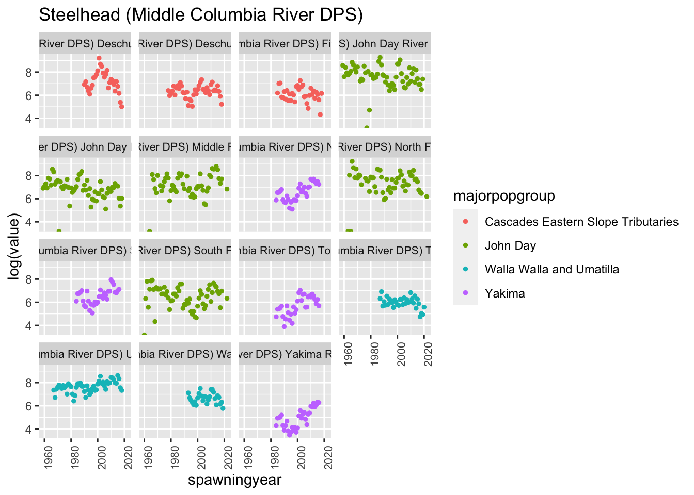
Next, the data are arranged so the columns are the years and rows are unique rivers
Code
esuname <- esuname[1]dat <- columbia.river %>%subset(esu_dps == esuname) %>%# get only this ESUmutate(log.spawner =log(value)) %>%# create a column called log.spawner dplyr::select(esapopname, spawningyear, log.spawner) %>%# get just the columns that I needpivot_wider(names_from ="esapopname", values_from ="log.spawner") %>%column_to_rownames(var ="spawningyear") %>%# make the years rownamesas.matrix() %>%# turn into a matrix with year down the rowst() # make time across the columns# MARSS complains if I don't do thisdat[is.na(dat)] <-NAany(is.null(dat))
[1] FALSE
Code
any(is.infinite(dat))
[1] TRUE
Code
dat[is.infinite(dat)] <-NA
Let’s take a look at the Middle Columbia River area and formulate some hypotheses:
Code
here::here("Lab-2", "Team-4", "Middle Columbia River sockeye.png") |> knitr::include_graphics()
14 General Questions
Each group has the same general tasks, but you will adapt them as you work on the data.
Create estimates of spawner abundance for all missing years and provide estimates of the decline from the historical abundance.
Evaluate support for the major population groups. Are the populations in the groups more correlated than outside the groups?
Evaluate the evidence of cycling in the data.
14.1 Data Notes
Make some assumptions about underlying population structure. This can help you fill in missing data areas.
Adult run timing (when they’re coming into fresh water, look at run timing–any correlation?)
John Day Data set spans the entire time period, and we will look at the appropriatness of drawing inference from these data to fill in other missing values.
15 Methods
Address the following in your methods
Describe your assumptions about the x and how the data time series are related to x.
How are the x and y (data) related? 1 x for 1 y or will you assume 1 x for all y or 1 x for each major population group? How will you choose?
What will you assume about the U for the x’s?
What will you assume about the Q matrix?
Write out your assumptions as different models in matrix form, fit each and then compare these with AIC or AICc.
Do your estimates differ depending on the assumptions you make about the structure of the data, i.e. you assumptions about the x’s, Q, and U.
15.1 Hypotheses
There were four main hypotheses explored in this modeling exercise.
Hypothesis 1: All underlying states are the same and one underlying population.
Hypothesis 2: There are four underlying states, each associated with one of the main distinct population centers (DPC), the Cascades, John Day, Walla Walla, and Yakima tributaries.
Hypothesis 3: There are two underlying states, one representing the northern area (Walla Walla and Yakima) and on representing the southern area (John Day and Cascades).
Hypothesis 4: There are two underlying states, Yakama and the rest of the areas. Salmon swim eastward to a bend in the river where salmon can choose to go north to the Yakama DPC, or south to other DPCs.
For Hypothesis 1, only one model was tested that assumed the Q matrix was diagonal and equal. We only tested this as a baseline for simplicity and time sake, as it is the model we had the least amount of confidence in (and was primarily used for conceptualization and initial MARSS model testing). For Hypotheses 2-4 four sub-hypotheses based on the Q matrix were tested.
Hypotheses:
X.1 = Diagonal and Equal
X.2 = Diagonal and Unequal
X.3 = Equal variance and covariance
X.4 = Unconstrained
This allowed us to get a better idea of the impacts of changing the amount of correlation in the process errors for each of these systems.
15.1.0.1 Other Assumptions
You can assume that R="diagonal and equal" and A="scaling". Assume that “historical” means the earliest years available for your group.
States
Your abundance estimate is the “x” or “state” estimates.
15.2 Pick best Hypothesis
We will compare AICs, all models should be comparable.
15.3 Evidence of cycling
We will see which hypothesis performs the best, and then explore cycling assumptions with a simple cycling model, and some variant on periodicity with our best performing model to see if we can improve fits and AICc.
15.3.1 Tips
Assumptions
or
tsSmooth(fit)
where fit is from fit <- MARSS()
plotting
Estimate of the mean of the spawner counts based on your x model.
autoplot(fit, plot.type="fitted.ytT")
diagnostics
autoplot(fit, plot.type="residuals")
16 Results
16.1 Hypothesis 1
Hypothesis 1 assumes that there is a single hidden state (X) for each stream (n=15) in the time series. The Q matrix for the variance of process errors is “diagonal and equal” meaning each state (x) model has the same variance but they are not correlated to each other.
mod.list1 <-list(U ="unequal", #each of the rivers are estimated separately (different U)R ="diagonal and equal", #Process errors are all assumed to be the same Q ="diagonal and equal"#Observation error )m1 <-MARSS(dat, model=mod.list1, method="BFGS")
Success! Converged in 136 iterations.
Function MARSSkfas used for likelihood calculation.
MARSS fit is
Estimation method: BFGS
Estimation converged in 136 iterations.
Log-likelihood: -603.7266
AIC: 1271.453 AICc: 1274.985
Estimate
R.diag 0.18209
U.X.Steelhead (Middle Columbia River DPS) Deschutes River Eastside - summer -0.05594
U.X.Steelhead (Middle Columbia River DPS) Deschutes River Westside - summer -0.01546
U.X.Steelhead (Middle Columbia River DPS) Fifteenmile Creek - winter -0.02689
U.X.Steelhead (Middle Columbia River DPS) John Day River Lower Mainstem Tributaries - summer -0.01958
U.X.Steelhead (Middle Columbia River DPS) John Day River Upper Mainstem - summer -0.01838
U.X.Steelhead (Middle Columbia River DPS) Middle Fork John Day River - summer -0.01218
U.X.Steelhead (Middle Columbia River DPS) North Fork John Day River - summer -0.03634
U.X.Steelhead (Middle Columbia River DPS) South Fork John Day River - summer -0.00526
U.X.Steelhead (Middle Columbia River DPS) Touchet River - summer -0.03313
U.X.Steelhead (Middle Columbia River DPS) Umatilla River - summer 0.00777
U.X.Steelhead (Middle Columbia River DPS) Walla Walla River - summer -0.03239
U.X.Steelhead (Middle Columbia River DPS) Naches River - summer 0.03833
U.X.Steelhead (Middle Columbia River DPS) Satus Creek - summer 0.02195
U.X.Steelhead (Middle Columbia River DPS) Toppenish Creek - summer 0.02892
U.X.Steelhead (Middle Columbia River DPS) Yakima River Upper Mainstem - summer 0.05429
Q.diag 0.10296
x0.X.Steelhead (Middle Columbia River DPS) Deschutes River Eastside - summer 8.74764
x0.X.Steelhead (Middle Columbia River DPS) Deschutes River Westside - summer 6.59490
x0.X.Steelhead (Middle Columbia River DPS) Fifteenmile Creek - winter 7.21538
x0.X.Steelhead (Middle Columbia River DPS) John Day River Lower Mainstem Tributaries - summer 8.27871
x0.X.Steelhead (Middle Columbia River DPS) John Day River Upper Mainstem - summer 7.06973
x0.X.Steelhead (Middle Columbia River DPS) Middle Fork John Day River - summer 7.83286
x0.X.Steelhead (Middle Columbia River DPS) North Fork John Day River - summer 8.59051
x0.X.Steelhead (Middle Columbia River DPS) South Fork John Day River - summer 6.73248
x0.X.Steelhead (Middle Columbia River DPS) Touchet River - summer 7.34999
x0.X.Steelhead (Middle Columbia River DPS) Umatilla River - summer 7.16269
x0.X.Steelhead (Middle Columbia River DPS) Walla Walla River - summer 8.00358
x0.X.Steelhead (Middle Columbia River DPS) Naches River - summer 5.16366
x0.X.Steelhead (Middle Columbia River DPS) Satus Creek - summer 5.81032
x0.X.Steelhead (Middle Columbia River DPS) Toppenish Creek - summer 4.27677
x0.X.Steelhead (Middle Columbia River DPS) Yakima River Upper Mainstem - summer 3.12784
Initial states (x0) defined at t=0
Standard errors have not been calculated.
Use MARSSparamCIs to compute CIs and bias estimates.
The model converged! Let’s take a look at the plots:
Code
autoplot(m1)
plot.type = xtT
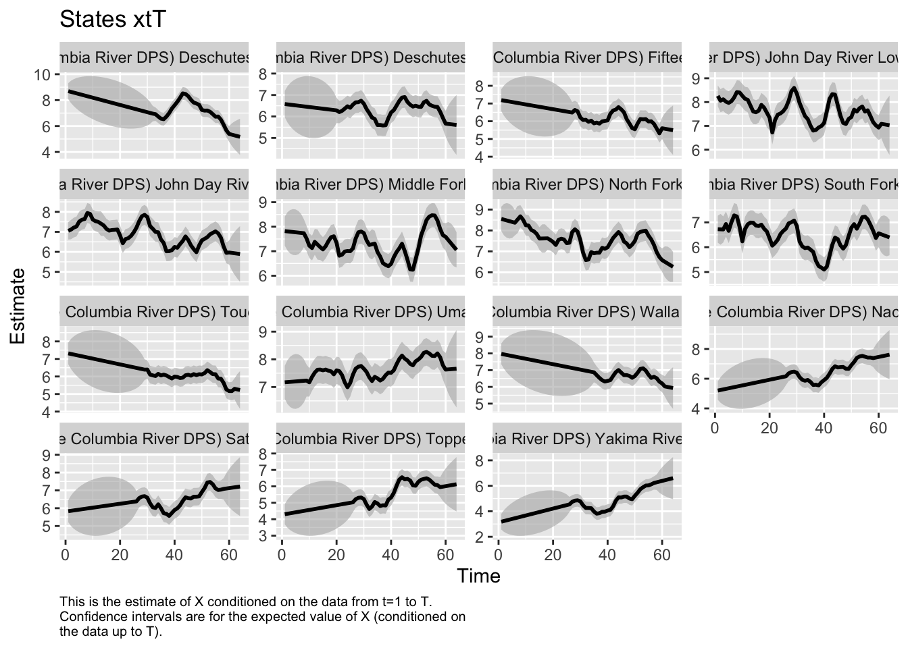
Hit <Return> to see next plot (q to exit):
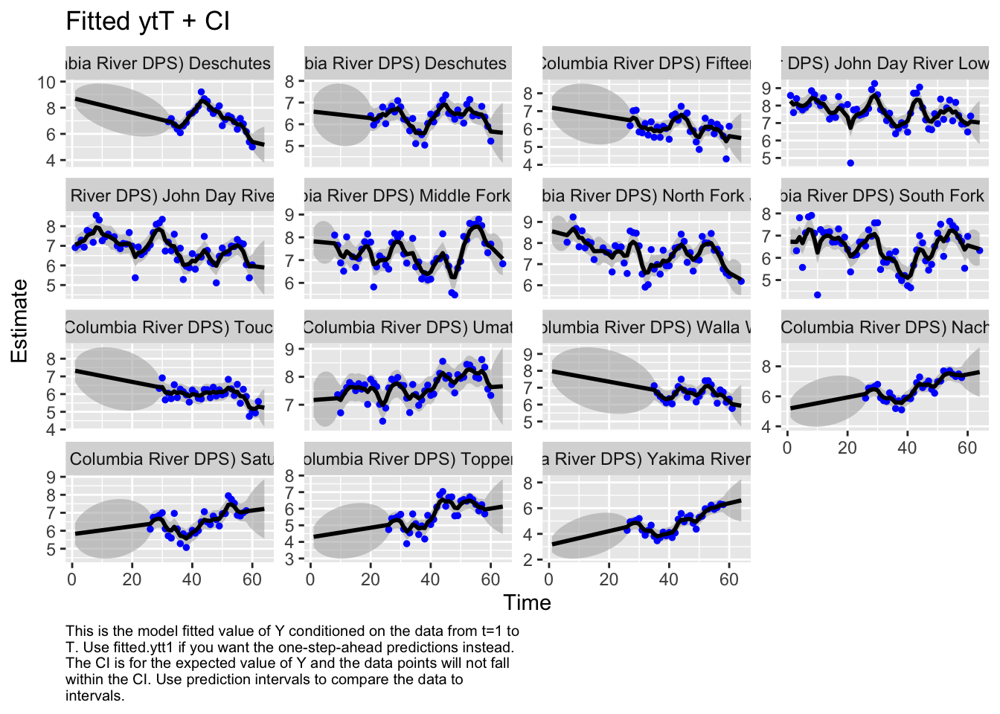
plot.type = fitted.ytT
Hit <Return> to see next plot (q to exit):
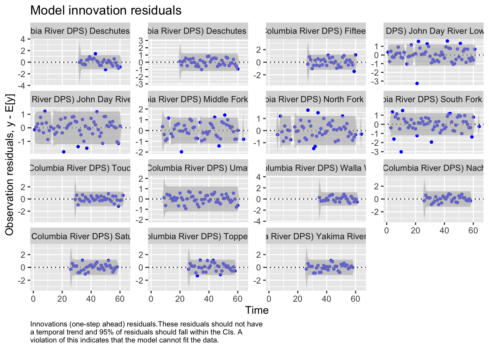
plot.type = model.resids.ytt1
Hit <Return> to see next plot (q to exit):
plot.type = std.model.resids.ytT
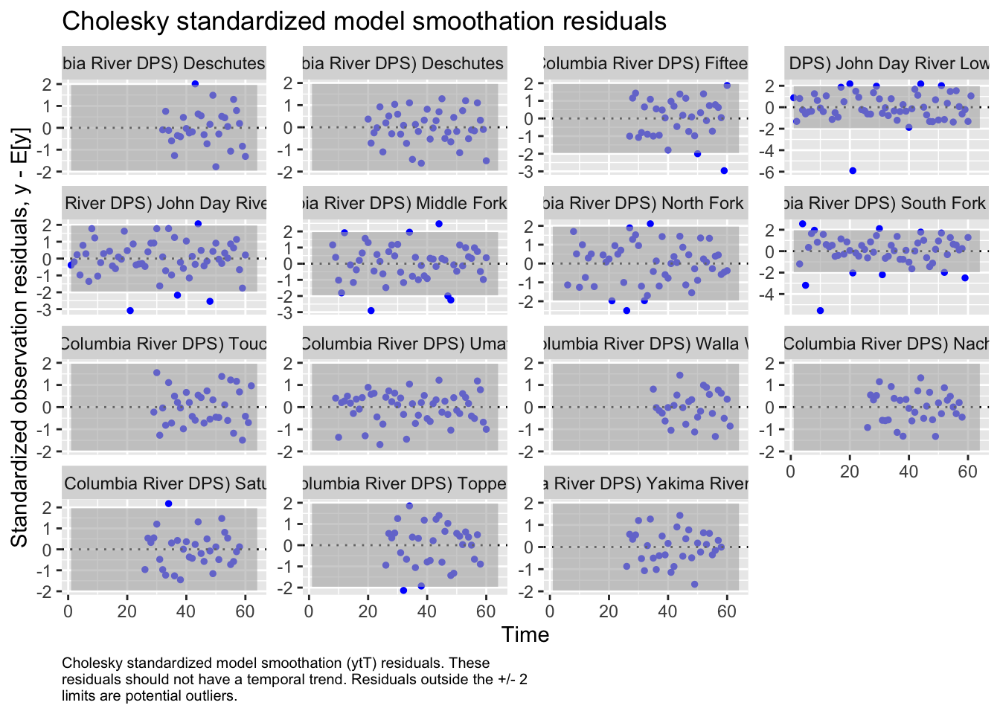
Hit <Return> to see next plot (q to exit):
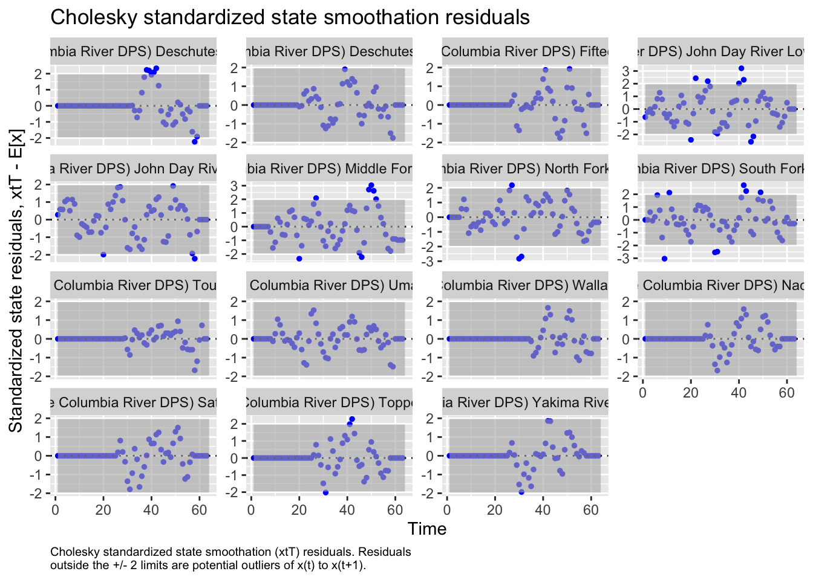
plot.type = std.state.resids.xtT
Hit <Return> to see next plot (q to exit):
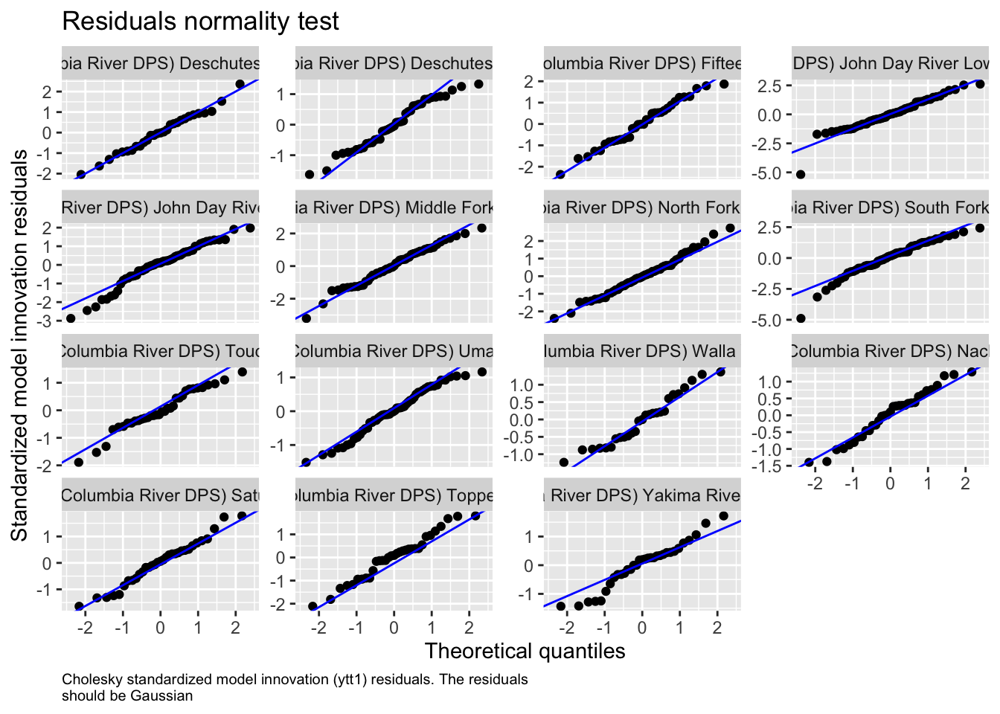
plot.type = qqplot.std.model.resids.ytt1
Hit <Return> to see next plot (q to exit):
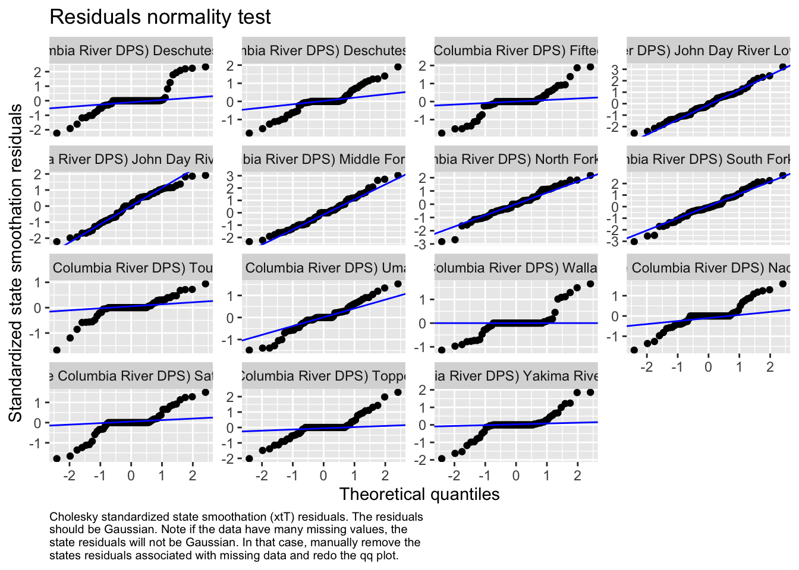
plot.type = qqplot.std.state.resids.xtT
Finished plots.
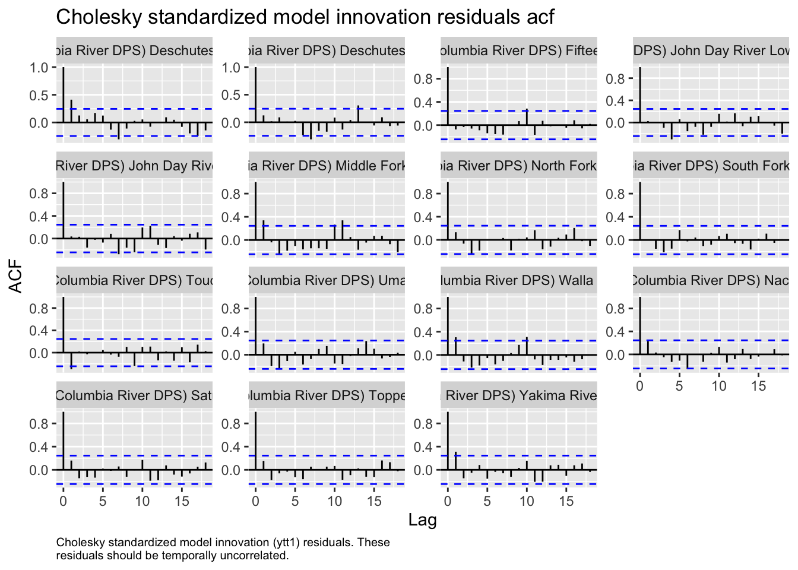
plot.type = acf.std.model.resids.ytt1
Hit <Return> to see next plot (q to exit):
This model doesn’t perform very well in areas that lack data, and, related, some of the QQ plots don’t hold assumptions of normality. This makes sense, given that stream missing data have nothing to inform them. In the states plots, the areas with missing data are characterized by confidence intervals that balloon out. Let’s look at the abundance estimates for this model.
Code
print(fit1_smooth<-tsSmooth(m1))
.rownames
1 X.Steelhead (Middle Columbia River DPS) Deschutes River Eastside - summer
2 X.Steelhead (Middle Columbia River DPS) Deschutes River Eastside - summer
3 X.Steelhead (Middle Columbia River DPS) Deschutes River Eastside - summer
4 X.Steelhead (Middle Columbia River DPS) Deschutes River Eastside - summer
5 X.Steelhead (Middle Columbia River DPS) Deschutes River Eastside - summer
6 X.Steelhead (Middle Columbia River DPS) Deschutes River Eastside - summer
7 X.Steelhead (Middle Columbia River DPS) Deschutes River Eastside - summer
8 X.Steelhead (Middle Columbia River DPS) Deschutes River Eastside - summer
9 X.Steelhead (Middle Columbia River DPS) Deschutes River Eastside - summer
10 X.Steelhead (Middle Columbia River DPS) Deschutes River Eastside - summer
11 X.Steelhead (Middle Columbia River DPS) Deschutes River Eastside - summer
12 X.Steelhead (Middle Columbia River DPS) Deschutes River Eastside - summer
13 X.Steelhead (Middle Columbia River DPS) Deschutes River Eastside - summer
14 X.Steelhead (Middle Columbia River DPS) Deschutes River Eastside - summer
15 X.Steelhead (Middle Columbia River DPS) Deschutes River Eastside - summer
16 X.Steelhead (Middle Columbia River DPS) Deschutes River Eastside - summer
17 X.Steelhead (Middle Columbia River DPS) Deschutes River Eastside - summer
18 X.Steelhead (Middle Columbia River DPS) Deschutes River Eastside - summer
19 X.Steelhead (Middle Columbia River DPS) Deschutes River Eastside - summer
20 X.Steelhead (Middle Columbia River DPS) Deschutes River Eastside - summer
21 X.Steelhead (Middle Columbia River DPS) Deschutes River Eastside - summer
22 X.Steelhead (Middle Columbia River DPS) Deschutes River Eastside - summer
23 X.Steelhead (Middle Columbia River DPS) Deschutes River Eastside - summer
24 X.Steelhead (Middle Columbia River DPS) Deschutes River Eastside - summer
25 X.Steelhead (Middle Columbia River DPS) Deschutes River Eastside - summer
26 X.Steelhead (Middle Columbia River DPS) Deschutes River Eastside - summer
27 X.Steelhead (Middle Columbia River DPS) Deschutes River Eastside - summer
28 X.Steelhead (Middle Columbia River DPS) Deschutes River Eastside - summer
29 X.Steelhead (Middle Columbia River DPS) Deschutes River Eastside - summer
30 X.Steelhead (Middle Columbia River DPS) Deschutes River Eastside - summer
31 X.Steelhead (Middle Columbia River DPS) Deschutes River Eastside - summer
32 X.Steelhead (Middle Columbia River DPS) Deschutes River Eastside - summer
33 X.Steelhead (Middle Columbia River DPS) Deschutes River Eastside - summer
34 X.Steelhead (Middle Columbia River DPS) Deschutes River Eastside - summer
35 X.Steelhead (Middle Columbia River DPS) Deschutes River Eastside - summer
36 X.Steelhead (Middle Columbia River DPS) Deschutes River Eastside - summer
37 X.Steelhead (Middle Columbia River DPS) Deschutes River Eastside - summer
38 X.Steelhead (Middle Columbia River DPS) Deschutes River Eastside - summer
39 X.Steelhead (Middle Columbia River DPS) Deschutes River Eastside - summer
40 X.Steelhead (Middle Columbia River DPS) Deschutes River Eastside - summer
41 X.Steelhead (Middle Columbia River DPS) Deschutes River Eastside - summer
42 X.Steelhead (Middle Columbia River DPS) Deschutes River Eastside - summer
43 X.Steelhead (Middle Columbia River DPS) Deschutes River Eastside - summer
44 X.Steelhead (Middle Columbia River DPS) Deschutes River Eastside - summer
45 X.Steelhead (Middle Columbia River DPS) Deschutes River Eastside - summer
46 X.Steelhead (Middle Columbia River DPS) Deschutes River Eastside - summer
47 X.Steelhead (Middle Columbia River DPS) Deschutes River Eastside - summer
48 X.Steelhead (Middle Columbia River DPS) Deschutes River Eastside - summer
49 X.Steelhead (Middle Columbia River DPS) Deschutes River Eastside - summer
50 X.Steelhead (Middle Columbia River DPS) Deschutes River Eastside - summer
51 X.Steelhead (Middle Columbia River DPS) Deschutes River Eastside - summer
52 X.Steelhead (Middle Columbia River DPS) Deschutes River Eastside - summer
53 X.Steelhead (Middle Columbia River DPS) Deschutes River Eastside - summer
54 X.Steelhead (Middle Columbia River DPS) Deschutes River Eastside - summer
55 X.Steelhead (Middle Columbia River DPS) Deschutes River Eastside - summer
56 X.Steelhead (Middle Columbia River DPS) Deschutes River Eastside - summer
57 X.Steelhead (Middle Columbia River DPS) Deschutes River Eastside - summer
58 X.Steelhead (Middle Columbia River DPS) Deschutes River Eastside - summer
59 X.Steelhead (Middle Columbia River DPS) Deschutes River Eastside - summer
60 X.Steelhead (Middle Columbia River DPS) Deschutes River Eastside - summer
61 X.Steelhead (Middle Columbia River DPS) Deschutes River Eastside - summer
62 X.Steelhead (Middle Columbia River DPS) Deschutes River Eastside - summer
63 X.Steelhead (Middle Columbia River DPS) Deschutes River Eastside - summer
64 X.Steelhead (Middle Columbia River DPS) Deschutes River Eastside - summer
65 X.Steelhead (Middle Columbia River DPS) Deschutes River Westside - summer
66 X.Steelhead (Middle Columbia River DPS) Deschutes River Westside - summer
67 X.Steelhead (Middle Columbia River DPS) Deschutes River Westside - summer
68 X.Steelhead (Middle Columbia River DPS) Deschutes River Westside - summer
69 X.Steelhead (Middle Columbia River DPS) Deschutes River Westside - summer
70 X.Steelhead (Middle Columbia River DPS) Deschutes River Westside - summer
71 X.Steelhead (Middle Columbia River DPS) Deschutes River Westside - summer
72 X.Steelhead (Middle Columbia River DPS) Deschutes River Westside - summer
73 X.Steelhead (Middle Columbia River DPS) Deschutes River Westside - summer
74 X.Steelhead (Middle Columbia River DPS) Deschutes River Westside - summer
75 X.Steelhead (Middle Columbia River DPS) Deschutes River Westside - summer
76 X.Steelhead (Middle Columbia River DPS) Deschutes River Westside - summer
77 X.Steelhead (Middle Columbia River DPS) Deschutes River Westside - summer
78 X.Steelhead (Middle Columbia River DPS) Deschutes River Westside - summer
79 X.Steelhead (Middle Columbia River DPS) Deschutes River Westside - summer
80 X.Steelhead (Middle Columbia River DPS) Deschutes River Westside - summer
81 X.Steelhead (Middle Columbia River DPS) Deschutes River Westside - summer
82 X.Steelhead (Middle Columbia River DPS) Deschutes River Westside - summer
83 X.Steelhead (Middle Columbia River DPS) Deschutes River Westside - summer
84 X.Steelhead (Middle Columbia River DPS) Deschutes River Westside - summer
85 X.Steelhead (Middle Columbia River DPS) Deschutes River Westside - summer
86 X.Steelhead (Middle Columbia River DPS) Deschutes River Westside - summer
87 X.Steelhead (Middle Columbia River DPS) Deschutes River Westside - summer
88 X.Steelhead (Middle Columbia River DPS) Deschutes River Westside - summer
89 X.Steelhead (Middle Columbia River DPS) Deschutes River Westside - summer
90 X.Steelhead (Middle Columbia River DPS) Deschutes River Westside - summer
91 X.Steelhead (Middle Columbia River DPS) Deschutes River Westside - summer
92 X.Steelhead (Middle Columbia River DPS) Deschutes River Westside - summer
93 X.Steelhead (Middle Columbia River DPS) Deschutes River Westside - summer
94 X.Steelhead (Middle Columbia River DPS) Deschutes River Westside - summer
95 X.Steelhead (Middle Columbia River DPS) Deschutes River Westside - summer
96 X.Steelhead (Middle Columbia River DPS) Deschutes River Westside - summer
97 X.Steelhead (Middle Columbia River DPS) Deschutes River Westside - summer
98 X.Steelhead (Middle Columbia River DPS) Deschutes River Westside - summer
99 X.Steelhead (Middle Columbia River DPS) Deschutes River Westside - summer
100 X.Steelhead (Middle Columbia River DPS) Deschutes River Westside - summer
101 X.Steelhead (Middle Columbia River DPS) Deschutes River Westside - summer
102 X.Steelhead (Middle Columbia River DPS) Deschutes River Westside - summer
103 X.Steelhead (Middle Columbia River DPS) Deschutes River Westside - summer
104 X.Steelhead (Middle Columbia River DPS) Deschutes River Westside - summer
105 X.Steelhead (Middle Columbia River DPS) Deschutes River Westside - summer
106 X.Steelhead (Middle Columbia River DPS) Deschutes River Westside - summer
107 X.Steelhead (Middle Columbia River DPS) Deschutes River Westside - summer
108 X.Steelhead (Middle Columbia River DPS) Deschutes River Westside - summer
109 X.Steelhead (Middle Columbia River DPS) Deschutes River Westside - summer
110 X.Steelhead (Middle Columbia River DPS) Deschutes River Westside - summer
111 X.Steelhead (Middle Columbia River DPS) Deschutes River Westside - summer
112 X.Steelhead (Middle Columbia River DPS) Deschutes River Westside - summer
113 X.Steelhead (Middle Columbia River DPS) Deschutes River Westside - summer
114 X.Steelhead (Middle Columbia River DPS) Deschutes River Westside - summer
115 X.Steelhead (Middle Columbia River DPS) Deschutes River Westside - summer
116 X.Steelhead (Middle Columbia River DPS) Deschutes River Westside - summer
117 X.Steelhead (Middle Columbia River DPS) Deschutes River Westside - summer
118 X.Steelhead (Middle Columbia River DPS) Deschutes River Westside - summer
119 X.Steelhead (Middle Columbia River DPS) Deschutes River Westside - summer
120 X.Steelhead (Middle Columbia River DPS) Deschutes River Westside - summer
121 X.Steelhead (Middle Columbia River DPS) Deschutes River Westside - summer
122 X.Steelhead (Middle Columbia River DPS) Deschutes River Westside - summer
123 X.Steelhead (Middle Columbia River DPS) Deschutes River Westside - summer
124 X.Steelhead (Middle Columbia River DPS) Deschutes River Westside - summer
125 X.Steelhead (Middle Columbia River DPS) Deschutes River Westside - summer
126 X.Steelhead (Middle Columbia River DPS) Deschutes River Westside - summer
127 X.Steelhead (Middle Columbia River DPS) Deschutes River Westside - summer
128 X.Steelhead (Middle Columbia River DPS) Deschutes River Westside - summer
129 X.Steelhead (Middle Columbia River DPS) Fifteenmile Creek - winter
130 X.Steelhead (Middle Columbia River DPS) Fifteenmile Creek - winter
131 X.Steelhead (Middle Columbia River DPS) Fifteenmile Creek - winter
132 X.Steelhead (Middle Columbia River DPS) Fifteenmile Creek - winter
133 X.Steelhead (Middle Columbia River DPS) Fifteenmile Creek - winter
134 X.Steelhead (Middle Columbia River DPS) Fifteenmile Creek - winter
135 X.Steelhead (Middle Columbia River DPS) Fifteenmile Creek - winter
136 X.Steelhead (Middle Columbia River DPS) Fifteenmile Creek - winter
137 X.Steelhead (Middle Columbia River DPS) Fifteenmile Creek - winter
138 X.Steelhead (Middle Columbia River DPS) Fifteenmile Creek - winter
139 X.Steelhead (Middle Columbia River DPS) Fifteenmile Creek - winter
140 X.Steelhead (Middle Columbia River DPS) Fifteenmile Creek - winter
141 X.Steelhead (Middle Columbia River DPS) Fifteenmile Creek - winter
142 X.Steelhead (Middle Columbia River DPS) Fifteenmile Creek - winter
143 X.Steelhead (Middle Columbia River DPS) Fifteenmile Creek - winter
144 X.Steelhead (Middle Columbia River DPS) Fifteenmile Creek - winter
145 X.Steelhead (Middle Columbia River DPS) Fifteenmile Creek - winter
146 X.Steelhead (Middle Columbia River DPS) Fifteenmile Creek - winter
147 X.Steelhead (Middle Columbia River DPS) Fifteenmile Creek - winter
148 X.Steelhead (Middle Columbia River DPS) Fifteenmile Creek - winter
149 X.Steelhead (Middle Columbia River DPS) Fifteenmile Creek - winter
150 X.Steelhead (Middle Columbia River DPS) Fifteenmile Creek - winter
151 X.Steelhead (Middle Columbia River DPS) Fifteenmile Creek - winter
152 X.Steelhead (Middle Columbia River DPS) Fifteenmile Creek - winter
153 X.Steelhead (Middle Columbia River DPS) Fifteenmile Creek - winter
154 X.Steelhead (Middle Columbia River DPS) Fifteenmile Creek - winter
155 X.Steelhead (Middle Columbia River DPS) Fifteenmile Creek - winter
156 X.Steelhead (Middle Columbia River DPS) Fifteenmile Creek - winter
157 X.Steelhead (Middle Columbia River DPS) Fifteenmile Creek - winter
158 X.Steelhead (Middle Columbia River DPS) Fifteenmile Creek - winter
159 X.Steelhead (Middle Columbia River DPS) Fifteenmile Creek - winter
160 X.Steelhead (Middle Columbia River DPS) Fifteenmile Creek - winter
161 X.Steelhead (Middle Columbia River DPS) Fifteenmile Creek - winter
162 X.Steelhead (Middle Columbia River DPS) Fifteenmile Creek - winter
163 X.Steelhead (Middle Columbia River DPS) Fifteenmile Creek - winter
164 X.Steelhead (Middle Columbia River DPS) Fifteenmile Creek - winter
165 X.Steelhead (Middle Columbia River DPS) Fifteenmile Creek - winter
166 X.Steelhead (Middle Columbia River DPS) Fifteenmile Creek - winter
167 X.Steelhead (Middle Columbia River DPS) Fifteenmile Creek - winter
168 X.Steelhead (Middle Columbia River DPS) Fifteenmile Creek - winter
169 X.Steelhead (Middle Columbia River DPS) Fifteenmile Creek - winter
170 X.Steelhead (Middle Columbia River DPS) Fifteenmile Creek - winter
171 X.Steelhead (Middle Columbia River DPS) Fifteenmile Creek - winter
172 X.Steelhead (Middle Columbia River DPS) Fifteenmile Creek - winter
173 X.Steelhead (Middle Columbia River DPS) Fifteenmile Creek - winter
174 X.Steelhead (Middle Columbia River DPS) Fifteenmile Creek - winter
175 X.Steelhead (Middle Columbia River DPS) Fifteenmile Creek - winter
176 X.Steelhead (Middle Columbia River DPS) Fifteenmile Creek - winter
177 X.Steelhead (Middle Columbia River DPS) Fifteenmile Creek - winter
178 X.Steelhead (Middle Columbia River DPS) Fifteenmile Creek - winter
179 X.Steelhead (Middle Columbia River DPS) Fifteenmile Creek - winter
180 X.Steelhead (Middle Columbia River DPS) Fifteenmile Creek - winter
181 X.Steelhead (Middle Columbia River DPS) Fifteenmile Creek - winter
182 X.Steelhead (Middle Columbia River DPS) Fifteenmile Creek - winter
183 X.Steelhead (Middle Columbia River DPS) Fifteenmile Creek - winter
184 X.Steelhead (Middle Columbia River DPS) Fifteenmile Creek - winter
185 X.Steelhead (Middle Columbia River DPS) Fifteenmile Creek - winter
186 X.Steelhead (Middle Columbia River DPS) Fifteenmile Creek - winter
187 X.Steelhead (Middle Columbia River DPS) Fifteenmile Creek - winter
188 X.Steelhead (Middle Columbia River DPS) Fifteenmile Creek - winter
189 X.Steelhead (Middle Columbia River DPS) Fifteenmile Creek - winter
190 X.Steelhead (Middle Columbia River DPS) Fifteenmile Creek - winter
191 X.Steelhead (Middle Columbia River DPS) Fifteenmile Creek - winter
192 X.Steelhead (Middle Columbia River DPS) Fifteenmile Creek - winter
193 X.Steelhead (Middle Columbia River DPS) John Day River Lower Mainstem Tributaries - summer
194 X.Steelhead (Middle Columbia River DPS) John Day River Lower Mainstem Tributaries - summer
195 X.Steelhead (Middle Columbia River DPS) John Day River Lower Mainstem Tributaries - summer
196 X.Steelhead (Middle Columbia River DPS) John Day River Lower Mainstem Tributaries - summer
197 X.Steelhead (Middle Columbia River DPS) John Day River Lower Mainstem Tributaries - summer
198 X.Steelhead (Middle Columbia River DPS) John Day River Lower Mainstem Tributaries - summer
199 X.Steelhead (Middle Columbia River DPS) John Day River Lower Mainstem Tributaries - summer
200 X.Steelhead (Middle Columbia River DPS) John Day River Lower Mainstem Tributaries - summer
201 X.Steelhead (Middle Columbia River DPS) John Day River Lower Mainstem Tributaries - summer
202 X.Steelhead (Middle Columbia River DPS) John Day River Lower Mainstem Tributaries - summer
203 X.Steelhead (Middle Columbia River DPS) John Day River Lower Mainstem Tributaries - summer
204 X.Steelhead (Middle Columbia River DPS) John Day River Lower Mainstem Tributaries - summer
205 X.Steelhead (Middle Columbia River DPS) John Day River Lower Mainstem Tributaries - summer
206 X.Steelhead (Middle Columbia River DPS) John Day River Lower Mainstem Tributaries - summer
207 X.Steelhead (Middle Columbia River DPS) John Day River Lower Mainstem Tributaries - summer
208 X.Steelhead (Middle Columbia River DPS) John Day River Lower Mainstem Tributaries - summer
209 X.Steelhead (Middle Columbia River DPS) John Day River Lower Mainstem Tributaries - summer
210 X.Steelhead (Middle Columbia River DPS) John Day River Lower Mainstem Tributaries - summer
211 X.Steelhead (Middle Columbia River DPS) John Day River Lower Mainstem Tributaries - summer
212 X.Steelhead (Middle Columbia River DPS) John Day River Lower Mainstem Tributaries - summer
213 X.Steelhead (Middle Columbia River DPS) John Day River Lower Mainstem Tributaries - summer
214 X.Steelhead (Middle Columbia River DPS) John Day River Lower Mainstem Tributaries - summer
215 X.Steelhead (Middle Columbia River DPS) John Day River Lower Mainstem Tributaries - summer
216 X.Steelhead (Middle Columbia River DPS) John Day River Lower Mainstem Tributaries - summer
217 X.Steelhead (Middle Columbia River DPS) John Day River Lower Mainstem Tributaries - summer
218 X.Steelhead (Middle Columbia River DPS) John Day River Lower Mainstem Tributaries - summer
219 X.Steelhead (Middle Columbia River DPS) John Day River Lower Mainstem Tributaries - summer
220 X.Steelhead (Middle Columbia River DPS) John Day River Lower Mainstem Tributaries - summer
221 X.Steelhead (Middle Columbia River DPS) John Day River Lower Mainstem Tributaries - summer
222 X.Steelhead (Middle Columbia River DPS) John Day River Lower Mainstem Tributaries - summer
223 X.Steelhead (Middle Columbia River DPS) John Day River Lower Mainstem Tributaries - summer
224 X.Steelhead (Middle Columbia River DPS) John Day River Lower Mainstem Tributaries - summer
225 X.Steelhead (Middle Columbia River DPS) John Day River Lower Mainstem Tributaries - summer
226 X.Steelhead (Middle Columbia River DPS) John Day River Lower Mainstem Tributaries - summer
227 X.Steelhead (Middle Columbia River DPS) John Day River Lower Mainstem Tributaries - summer
228 X.Steelhead (Middle Columbia River DPS) John Day River Lower Mainstem Tributaries - summer
229 X.Steelhead (Middle Columbia River DPS) John Day River Lower Mainstem Tributaries - summer
230 X.Steelhead (Middle Columbia River DPS) John Day River Lower Mainstem Tributaries - summer
231 X.Steelhead (Middle Columbia River DPS) John Day River Lower Mainstem Tributaries - summer
232 X.Steelhead (Middle Columbia River DPS) John Day River Lower Mainstem Tributaries - summer
233 X.Steelhead (Middle Columbia River DPS) John Day River Lower Mainstem Tributaries - summer
234 X.Steelhead (Middle Columbia River DPS) John Day River Lower Mainstem Tributaries - summer
235 X.Steelhead (Middle Columbia River DPS) John Day River Lower Mainstem Tributaries - summer
236 X.Steelhead (Middle Columbia River DPS) John Day River Lower Mainstem Tributaries - summer
237 X.Steelhead (Middle Columbia River DPS) John Day River Lower Mainstem Tributaries - summer
238 X.Steelhead (Middle Columbia River DPS) John Day River Lower Mainstem Tributaries - summer
239 X.Steelhead (Middle Columbia River DPS) John Day River Lower Mainstem Tributaries - summer
240 X.Steelhead (Middle Columbia River DPS) John Day River Lower Mainstem Tributaries - summer
241 X.Steelhead (Middle Columbia River DPS) John Day River Lower Mainstem Tributaries - summer
242 X.Steelhead (Middle Columbia River DPS) John Day River Lower Mainstem Tributaries - summer
243 X.Steelhead (Middle Columbia River DPS) John Day River Lower Mainstem Tributaries - summer
244 X.Steelhead (Middle Columbia River DPS) John Day River Lower Mainstem Tributaries - summer
245 X.Steelhead (Middle Columbia River DPS) John Day River Lower Mainstem Tributaries - summer
246 X.Steelhead (Middle Columbia River DPS) John Day River Lower Mainstem Tributaries - summer
247 X.Steelhead (Middle Columbia River DPS) John Day River Lower Mainstem Tributaries - summer
248 X.Steelhead (Middle Columbia River DPS) John Day River Lower Mainstem Tributaries - summer
249 X.Steelhead (Middle Columbia River DPS) John Day River Lower Mainstem Tributaries - summer
250 X.Steelhead (Middle Columbia River DPS) John Day River Lower Mainstem Tributaries - summer
251 X.Steelhead (Middle Columbia River DPS) John Day River Lower Mainstem Tributaries - summer
252 X.Steelhead (Middle Columbia River DPS) John Day River Lower Mainstem Tributaries - summer
253 X.Steelhead (Middle Columbia River DPS) John Day River Lower Mainstem Tributaries - summer
254 X.Steelhead (Middle Columbia River DPS) John Day River Lower Mainstem Tributaries - summer
255 X.Steelhead (Middle Columbia River DPS) John Day River Lower Mainstem Tributaries - summer
256 X.Steelhead (Middle Columbia River DPS) John Day River Lower Mainstem Tributaries - summer
257 X.Steelhead (Middle Columbia River DPS) John Day River Upper Mainstem - summer
258 X.Steelhead (Middle Columbia River DPS) John Day River Upper Mainstem - summer
259 X.Steelhead (Middle Columbia River DPS) John Day River Upper Mainstem - summer
260 X.Steelhead (Middle Columbia River DPS) John Day River Upper Mainstem - summer
261 X.Steelhead (Middle Columbia River DPS) John Day River Upper Mainstem - summer
262 X.Steelhead (Middle Columbia River DPS) John Day River Upper Mainstem - summer
263 X.Steelhead (Middle Columbia River DPS) John Day River Upper Mainstem - summer
264 X.Steelhead (Middle Columbia River DPS) John Day River Upper Mainstem - summer
265 X.Steelhead (Middle Columbia River DPS) John Day River Upper Mainstem - summer
266 X.Steelhead (Middle Columbia River DPS) John Day River Upper Mainstem - summer
267 X.Steelhead (Middle Columbia River DPS) John Day River Upper Mainstem - summer
268 X.Steelhead (Middle Columbia River DPS) John Day River Upper Mainstem - summer
269 X.Steelhead (Middle Columbia River DPS) John Day River Upper Mainstem - summer
270 X.Steelhead (Middle Columbia River DPS) John Day River Upper Mainstem - summer
271 X.Steelhead (Middle Columbia River DPS) John Day River Upper Mainstem - summer
272 X.Steelhead (Middle Columbia River DPS) John Day River Upper Mainstem - summer
273 X.Steelhead (Middle Columbia River DPS) John Day River Upper Mainstem - summer
274 X.Steelhead (Middle Columbia River DPS) John Day River Upper Mainstem - summer
275 X.Steelhead (Middle Columbia River DPS) John Day River Upper Mainstem - summer
276 X.Steelhead (Middle Columbia River DPS) John Day River Upper Mainstem - summer
277 X.Steelhead (Middle Columbia River DPS) John Day River Upper Mainstem - summer
278 X.Steelhead (Middle Columbia River DPS) John Day River Upper Mainstem - summer
279 X.Steelhead (Middle Columbia River DPS) John Day River Upper Mainstem - summer
280 X.Steelhead (Middle Columbia River DPS) John Day River Upper Mainstem - summer
281 X.Steelhead (Middle Columbia River DPS) John Day River Upper Mainstem - summer
282 X.Steelhead (Middle Columbia River DPS) John Day River Upper Mainstem - summer
283 X.Steelhead (Middle Columbia River DPS) John Day River Upper Mainstem - summer
284 X.Steelhead (Middle Columbia River DPS) John Day River Upper Mainstem - summer
285 X.Steelhead (Middle Columbia River DPS) John Day River Upper Mainstem - summer
286 X.Steelhead (Middle Columbia River DPS) John Day River Upper Mainstem - summer
287 X.Steelhead (Middle Columbia River DPS) John Day River Upper Mainstem - summer
288 X.Steelhead (Middle Columbia River DPS) John Day River Upper Mainstem - summer
289 X.Steelhead (Middle Columbia River DPS) John Day River Upper Mainstem - summer
290 X.Steelhead (Middle Columbia River DPS) John Day River Upper Mainstem - summer
291 X.Steelhead (Middle Columbia River DPS) John Day River Upper Mainstem - summer
292 X.Steelhead (Middle Columbia River DPS) John Day River Upper Mainstem - summer
293 X.Steelhead (Middle Columbia River DPS) John Day River Upper Mainstem - summer
294 X.Steelhead (Middle Columbia River DPS) John Day River Upper Mainstem - summer
295 X.Steelhead (Middle Columbia River DPS) John Day River Upper Mainstem - summer
296 X.Steelhead (Middle Columbia River DPS) John Day River Upper Mainstem - summer
297 X.Steelhead (Middle Columbia River DPS) John Day River Upper Mainstem - summer
298 X.Steelhead (Middle Columbia River DPS) John Day River Upper Mainstem - summer
299 X.Steelhead (Middle Columbia River DPS) John Day River Upper Mainstem - summer
300 X.Steelhead (Middle Columbia River DPS) John Day River Upper Mainstem - summer
301 X.Steelhead (Middle Columbia River DPS) John Day River Upper Mainstem - summer
302 X.Steelhead (Middle Columbia River DPS) John Day River Upper Mainstem - summer
303 X.Steelhead (Middle Columbia River DPS) John Day River Upper Mainstem - summer
304 X.Steelhead (Middle Columbia River DPS) John Day River Upper Mainstem - summer
305 X.Steelhead (Middle Columbia River DPS) John Day River Upper Mainstem - summer
306 X.Steelhead (Middle Columbia River DPS) John Day River Upper Mainstem - summer
307 X.Steelhead (Middle Columbia River DPS) John Day River Upper Mainstem - summer
308 X.Steelhead (Middle Columbia River DPS) John Day River Upper Mainstem - summer
309 X.Steelhead (Middle Columbia River DPS) John Day River Upper Mainstem - summer
310 X.Steelhead (Middle Columbia River DPS) John Day River Upper Mainstem - summer
311 X.Steelhead (Middle Columbia River DPS) John Day River Upper Mainstem - summer
312 X.Steelhead (Middle Columbia River DPS) John Day River Upper Mainstem - summer
313 X.Steelhead (Middle Columbia River DPS) John Day River Upper Mainstem - summer
314 X.Steelhead (Middle Columbia River DPS) John Day River Upper Mainstem - summer
315 X.Steelhead (Middle Columbia River DPS) John Day River Upper Mainstem - summer
316 X.Steelhead (Middle Columbia River DPS) John Day River Upper Mainstem - summer
317 X.Steelhead (Middle Columbia River DPS) John Day River Upper Mainstem - summer
318 X.Steelhead (Middle Columbia River DPS) John Day River Upper Mainstem - summer
319 X.Steelhead (Middle Columbia River DPS) John Day River Upper Mainstem - summer
320 X.Steelhead (Middle Columbia River DPS) John Day River Upper Mainstem - summer
321 X.Steelhead (Middle Columbia River DPS) Middle Fork John Day River - summer
322 X.Steelhead (Middle Columbia River DPS) Middle Fork John Day River - summer
323 X.Steelhead (Middle Columbia River DPS) Middle Fork John Day River - summer
324 X.Steelhead (Middle Columbia River DPS) Middle Fork John Day River - summer
325 X.Steelhead (Middle Columbia River DPS) Middle Fork John Day River - summer
326 X.Steelhead (Middle Columbia River DPS) Middle Fork John Day River - summer
327 X.Steelhead (Middle Columbia River DPS) Middle Fork John Day River - summer
328 X.Steelhead (Middle Columbia River DPS) Middle Fork John Day River - summer
329 X.Steelhead (Middle Columbia River DPS) Middle Fork John Day River - summer
330 X.Steelhead (Middle Columbia River DPS) Middle Fork John Day River - summer
331 X.Steelhead (Middle Columbia River DPS) Middle Fork John Day River - summer
332 X.Steelhead (Middle Columbia River DPS) Middle Fork John Day River - summer
333 X.Steelhead (Middle Columbia River DPS) Middle Fork John Day River - summer
334 X.Steelhead (Middle Columbia River DPS) Middle Fork John Day River - summer
335 X.Steelhead (Middle Columbia River DPS) Middle Fork John Day River - summer
336 X.Steelhead (Middle Columbia River DPS) Middle Fork John Day River - summer
337 X.Steelhead (Middle Columbia River DPS) Middle Fork John Day River - summer
338 X.Steelhead (Middle Columbia River DPS) Middle Fork John Day River - summer
339 X.Steelhead (Middle Columbia River DPS) Middle Fork John Day River - summer
340 X.Steelhead (Middle Columbia River DPS) Middle Fork John Day River - summer
341 X.Steelhead (Middle Columbia River DPS) Middle Fork John Day River - summer
342 X.Steelhead (Middle Columbia River DPS) Middle Fork John Day River - summer
343 X.Steelhead (Middle Columbia River DPS) Middle Fork John Day River - summer
344 X.Steelhead (Middle Columbia River DPS) Middle Fork John Day River - summer
345 X.Steelhead (Middle Columbia River DPS) Middle Fork John Day River - summer
346 X.Steelhead (Middle Columbia River DPS) Middle Fork John Day River - summer
347 X.Steelhead (Middle Columbia River DPS) Middle Fork John Day River - summer
348 X.Steelhead (Middle Columbia River DPS) Middle Fork John Day River - summer
349 X.Steelhead (Middle Columbia River DPS) Middle Fork John Day River - summer
350 X.Steelhead (Middle Columbia River DPS) Middle Fork John Day River - summer
351 X.Steelhead (Middle Columbia River DPS) Middle Fork John Day River - summer
352 X.Steelhead (Middle Columbia River DPS) Middle Fork John Day River - summer
353 X.Steelhead (Middle Columbia River DPS) Middle Fork John Day River - summer
354 X.Steelhead (Middle Columbia River DPS) Middle Fork John Day River - summer
355 X.Steelhead (Middle Columbia River DPS) Middle Fork John Day River - summer
356 X.Steelhead (Middle Columbia River DPS) Middle Fork John Day River - summer
357 X.Steelhead (Middle Columbia River DPS) Middle Fork John Day River - summer
358 X.Steelhead (Middle Columbia River DPS) Middle Fork John Day River - summer
359 X.Steelhead (Middle Columbia River DPS) Middle Fork John Day River - summer
360 X.Steelhead (Middle Columbia River DPS) Middle Fork John Day River - summer
361 X.Steelhead (Middle Columbia River DPS) Middle Fork John Day River - summer
362 X.Steelhead (Middle Columbia River DPS) Middle Fork John Day River - summer
363 X.Steelhead (Middle Columbia River DPS) Middle Fork John Day River - summer
364 X.Steelhead (Middle Columbia River DPS) Middle Fork John Day River - summer
365 X.Steelhead (Middle Columbia River DPS) Middle Fork John Day River - summer
366 X.Steelhead (Middle Columbia River DPS) Middle Fork John Day River - summer
367 X.Steelhead (Middle Columbia River DPS) Middle Fork John Day River - summer
368 X.Steelhead (Middle Columbia River DPS) Middle Fork John Day River - summer
369 X.Steelhead (Middle Columbia River DPS) Middle Fork John Day River - summer
370 X.Steelhead (Middle Columbia River DPS) Middle Fork John Day River - summer
371 X.Steelhead (Middle Columbia River DPS) Middle Fork John Day River - summer
372 X.Steelhead (Middle Columbia River DPS) Middle Fork John Day River - summer
373 X.Steelhead (Middle Columbia River DPS) Middle Fork John Day River - summer
374 X.Steelhead (Middle Columbia River DPS) Middle Fork John Day River - summer
375 X.Steelhead (Middle Columbia River DPS) Middle Fork John Day River - summer
376 X.Steelhead (Middle Columbia River DPS) Middle Fork John Day River - summer
377 X.Steelhead (Middle Columbia River DPS) Middle Fork John Day River - summer
378 X.Steelhead (Middle Columbia River DPS) Middle Fork John Day River - summer
379 X.Steelhead (Middle Columbia River DPS) Middle Fork John Day River - summer
380 X.Steelhead (Middle Columbia River DPS) Middle Fork John Day River - summer
381 X.Steelhead (Middle Columbia River DPS) Middle Fork John Day River - summer
382 X.Steelhead (Middle Columbia River DPS) Middle Fork John Day River - summer
383 X.Steelhead (Middle Columbia River DPS) Middle Fork John Day River - summer
384 X.Steelhead (Middle Columbia River DPS) Middle Fork John Day River - summer
385 X.Steelhead (Middle Columbia River DPS) North Fork John Day River - summer
386 X.Steelhead (Middle Columbia River DPS) North Fork John Day River - summer
387 X.Steelhead (Middle Columbia River DPS) North Fork John Day River - summer
388 X.Steelhead (Middle Columbia River DPS) North Fork John Day River - summer
389 X.Steelhead (Middle Columbia River DPS) North Fork John Day River - summer
390 X.Steelhead (Middle Columbia River DPS) North Fork John Day River - summer
391 X.Steelhead (Middle Columbia River DPS) North Fork John Day River - summer
392 X.Steelhead (Middle Columbia River DPS) North Fork John Day River - summer
393 X.Steelhead (Middle Columbia River DPS) North Fork John Day River - summer
394 X.Steelhead (Middle Columbia River DPS) North Fork John Day River - summer
395 X.Steelhead (Middle Columbia River DPS) North Fork John Day River - summer
396 X.Steelhead (Middle Columbia River DPS) North Fork John Day River - summer
397 X.Steelhead (Middle Columbia River DPS) North Fork John Day River - summer
398 X.Steelhead (Middle Columbia River DPS) North Fork John Day River - summer
399 X.Steelhead (Middle Columbia River DPS) North Fork John Day River - summer
400 X.Steelhead (Middle Columbia River DPS) North Fork John Day River - summer
401 X.Steelhead (Middle Columbia River DPS) North Fork John Day River - summer
402 X.Steelhead (Middle Columbia River DPS) North Fork John Day River - summer
403 X.Steelhead (Middle Columbia River DPS) North Fork John Day River - summer
404 X.Steelhead (Middle Columbia River DPS) North Fork John Day River - summer
405 X.Steelhead (Middle Columbia River DPS) North Fork John Day River - summer
406 X.Steelhead (Middle Columbia River DPS) North Fork John Day River - summer
407 X.Steelhead (Middle Columbia River DPS) North Fork John Day River - summer
408 X.Steelhead (Middle Columbia River DPS) North Fork John Day River - summer
409 X.Steelhead (Middle Columbia River DPS) North Fork John Day River - summer
410 X.Steelhead (Middle Columbia River DPS) North Fork John Day River - summer
411 X.Steelhead (Middle Columbia River DPS) North Fork John Day River - summer
412 X.Steelhead (Middle Columbia River DPS) North Fork John Day River - summer
413 X.Steelhead (Middle Columbia River DPS) North Fork John Day River - summer
414 X.Steelhead (Middle Columbia River DPS) North Fork John Day River - summer
415 X.Steelhead (Middle Columbia River DPS) North Fork John Day River - summer
416 X.Steelhead (Middle Columbia River DPS) North Fork John Day River - summer
417 X.Steelhead (Middle Columbia River DPS) North Fork John Day River - summer
418 X.Steelhead (Middle Columbia River DPS) North Fork John Day River - summer
419 X.Steelhead (Middle Columbia River DPS) North Fork John Day River - summer
420 X.Steelhead (Middle Columbia River DPS) North Fork John Day River - summer
421 X.Steelhead (Middle Columbia River DPS) North Fork John Day River - summer
422 X.Steelhead (Middle Columbia River DPS) North Fork John Day River - summer
423 X.Steelhead (Middle Columbia River DPS) North Fork John Day River - summer
424 X.Steelhead (Middle Columbia River DPS) North Fork John Day River - summer
425 X.Steelhead (Middle Columbia River DPS) North Fork John Day River - summer
426 X.Steelhead (Middle Columbia River DPS) North Fork John Day River - summer
427 X.Steelhead (Middle Columbia River DPS) North Fork John Day River - summer
428 X.Steelhead (Middle Columbia River DPS) North Fork John Day River - summer
429 X.Steelhead (Middle Columbia River DPS) North Fork John Day River - summer
430 X.Steelhead (Middle Columbia River DPS) North Fork John Day River - summer
431 X.Steelhead (Middle Columbia River DPS) North Fork John Day River - summer
432 X.Steelhead (Middle Columbia River DPS) North Fork John Day River - summer
433 X.Steelhead (Middle Columbia River DPS) North Fork John Day River - summer
434 X.Steelhead (Middle Columbia River DPS) North Fork John Day River - summer
435 X.Steelhead (Middle Columbia River DPS) North Fork John Day River - summer
436 X.Steelhead (Middle Columbia River DPS) North Fork John Day River - summer
437 X.Steelhead (Middle Columbia River DPS) North Fork John Day River - summer
438 X.Steelhead (Middle Columbia River DPS) North Fork John Day River - summer
439 X.Steelhead (Middle Columbia River DPS) North Fork John Day River - summer
440 X.Steelhead (Middle Columbia River DPS) North Fork John Day River - summer
441 X.Steelhead (Middle Columbia River DPS) North Fork John Day River - summer
442 X.Steelhead (Middle Columbia River DPS) North Fork John Day River - summer
443 X.Steelhead (Middle Columbia River DPS) North Fork John Day River - summer
444 X.Steelhead (Middle Columbia River DPS) North Fork John Day River - summer
445 X.Steelhead (Middle Columbia River DPS) North Fork John Day River - summer
446 X.Steelhead (Middle Columbia River DPS) North Fork John Day River - summer
447 X.Steelhead (Middle Columbia River DPS) North Fork John Day River - summer
448 X.Steelhead (Middle Columbia River DPS) North Fork John Day River - summer
449 X.Steelhead (Middle Columbia River DPS) South Fork John Day River - summer
450 X.Steelhead (Middle Columbia River DPS) South Fork John Day River - summer
451 X.Steelhead (Middle Columbia River DPS) South Fork John Day River - summer
452 X.Steelhead (Middle Columbia River DPS) South Fork John Day River - summer
453 X.Steelhead (Middle Columbia River DPS) South Fork John Day River - summer
454 X.Steelhead (Middle Columbia River DPS) South Fork John Day River - summer
455 X.Steelhead (Middle Columbia River DPS) South Fork John Day River - summer
456 X.Steelhead (Middle Columbia River DPS) South Fork John Day River - summer
457 X.Steelhead (Middle Columbia River DPS) South Fork John Day River - summer
458 X.Steelhead (Middle Columbia River DPS) South Fork John Day River - summer
459 X.Steelhead (Middle Columbia River DPS) South Fork John Day River - summer
460 X.Steelhead (Middle Columbia River DPS) South Fork John Day River - summer
461 X.Steelhead (Middle Columbia River DPS) South Fork John Day River - summer
462 X.Steelhead (Middle Columbia River DPS) South Fork John Day River - summer
463 X.Steelhead (Middle Columbia River DPS) South Fork John Day River - summer
464 X.Steelhead (Middle Columbia River DPS) South Fork John Day River - summer
465 X.Steelhead (Middle Columbia River DPS) South Fork John Day River - summer
466 X.Steelhead (Middle Columbia River DPS) South Fork John Day River - summer
467 X.Steelhead (Middle Columbia River DPS) South Fork John Day River - summer
468 X.Steelhead (Middle Columbia River DPS) South Fork John Day River - summer
469 X.Steelhead (Middle Columbia River DPS) South Fork John Day River - summer
470 X.Steelhead (Middle Columbia River DPS) South Fork John Day River - summer
471 X.Steelhead (Middle Columbia River DPS) South Fork John Day River - summer
472 X.Steelhead (Middle Columbia River DPS) South Fork John Day River - summer
473 X.Steelhead (Middle Columbia River DPS) South Fork John Day River - summer
474 X.Steelhead (Middle Columbia River DPS) South Fork John Day River - summer
475 X.Steelhead (Middle Columbia River DPS) South Fork John Day River - summer
476 X.Steelhead (Middle Columbia River DPS) South Fork John Day River - summer
477 X.Steelhead (Middle Columbia River DPS) South Fork John Day River - summer
478 X.Steelhead (Middle Columbia River DPS) South Fork John Day River - summer
479 X.Steelhead (Middle Columbia River DPS) South Fork John Day River - summer
480 X.Steelhead (Middle Columbia River DPS) South Fork John Day River - summer
481 X.Steelhead (Middle Columbia River DPS) South Fork John Day River - summer
482 X.Steelhead (Middle Columbia River DPS) South Fork John Day River - summer
483 X.Steelhead (Middle Columbia River DPS) South Fork John Day River - summer
484 X.Steelhead (Middle Columbia River DPS) South Fork John Day River - summer
485 X.Steelhead (Middle Columbia River DPS) South Fork John Day River - summer
486 X.Steelhead (Middle Columbia River DPS) South Fork John Day River - summer
487 X.Steelhead (Middle Columbia River DPS) South Fork John Day River - summer
488 X.Steelhead (Middle Columbia River DPS) South Fork John Day River - summer
489 X.Steelhead (Middle Columbia River DPS) South Fork John Day River - summer
490 X.Steelhead (Middle Columbia River DPS) South Fork John Day River - summer
491 X.Steelhead (Middle Columbia River DPS) South Fork John Day River - summer
492 X.Steelhead (Middle Columbia River DPS) South Fork John Day River - summer
493 X.Steelhead (Middle Columbia River DPS) South Fork John Day River - summer
494 X.Steelhead (Middle Columbia River DPS) South Fork John Day River - summer
495 X.Steelhead (Middle Columbia River DPS) South Fork John Day River - summer
496 X.Steelhead (Middle Columbia River DPS) South Fork John Day River - summer
497 X.Steelhead (Middle Columbia River DPS) South Fork John Day River - summer
498 X.Steelhead (Middle Columbia River DPS) South Fork John Day River - summer
499 X.Steelhead (Middle Columbia River DPS) South Fork John Day River - summer
500 X.Steelhead (Middle Columbia River DPS) South Fork John Day River - summer
501 X.Steelhead (Middle Columbia River DPS) South Fork John Day River - summer
502 X.Steelhead (Middle Columbia River DPS) South Fork John Day River - summer
503 X.Steelhead (Middle Columbia River DPS) South Fork John Day River - summer
504 X.Steelhead (Middle Columbia River DPS) South Fork John Day River - summer
505 X.Steelhead (Middle Columbia River DPS) South Fork John Day River - summer
506 X.Steelhead (Middle Columbia River DPS) South Fork John Day River - summer
507 X.Steelhead (Middle Columbia River DPS) South Fork John Day River - summer
508 X.Steelhead (Middle Columbia River DPS) South Fork John Day River - summer
509 X.Steelhead (Middle Columbia River DPS) South Fork John Day River - summer
510 X.Steelhead (Middle Columbia River DPS) South Fork John Day River - summer
511 X.Steelhead (Middle Columbia River DPS) South Fork John Day River - summer
512 X.Steelhead (Middle Columbia River DPS) South Fork John Day River - summer
513 X.Steelhead (Middle Columbia River DPS) Touchet River - summer
514 X.Steelhead (Middle Columbia River DPS) Touchet River - summer
515 X.Steelhead (Middle Columbia River DPS) Touchet River - summer
516 X.Steelhead (Middle Columbia River DPS) Touchet River - summer
517 X.Steelhead (Middle Columbia River DPS) Touchet River - summer
518 X.Steelhead (Middle Columbia River DPS) Touchet River - summer
519 X.Steelhead (Middle Columbia River DPS) Touchet River - summer
520 X.Steelhead (Middle Columbia River DPS) Touchet River - summer
521 X.Steelhead (Middle Columbia River DPS) Touchet River - summer
522 X.Steelhead (Middle Columbia River DPS) Touchet River - summer
523 X.Steelhead (Middle Columbia River DPS) Touchet River - summer
524 X.Steelhead (Middle Columbia River DPS) Touchet River - summer
525 X.Steelhead (Middle Columbia River DPS) Touchet River - summer
526 X.Steelhead (Middle Columbia River DPS) Touchet River - summer
527 X.Steelhead (Middle Columbia River DPS) Touchet River - summer
528 X.Steelhead (Middle Columbia River DPS) Touchet River - summer
529 X.Steelhead (Middle Columbia River DPS) Touchet River - summer
530 X.Steelhead (Middle Columbia River DPS) Touchet River - summer
531 X.Steelhead (Middle Columbia River DPS) Touchet River - summer
532 X.Steelhead (Middle Columbia River DPS) Touchet River - summer
533 X.Steelhead (Middle Columbia River DPS) Touchet River - summer
534 X.Steelhead (Middle Columbia River DPS) Touchet River - summer
535 X.Steelhead (Middle Columbia River DPS) Touchet River - summer
536 X.Steelhead (Middle Columbia River DPS) Touchet River - summer
537 X.Steelhead (Middle Columbia River DPS) Touchet River - summer
538 X.Steelhead (Middle Columbia River DPS) Touchet River - summer
539 X.Steelhead (Middle Columbia River DPS) Touchet River - summer
540 X.Steelhead (Middle Columbia River DPS) Touchet River - summer
541 X.Steelhead (Middle Columbia River DPS) Touchet River - summer
542 X.Steelhead (Middle Columbia River DPS) Touchet River - summer
543 X.Steelhead (Middle Columbia River DPS) Touchet River - summer
544 X.Steelhead (Middle Columbia River DPS) Touchet River - summer
545 X.Steelhead (Middle Columbia River DPS) Touchet River - summer
546 X.Steelhead (Middle Columbia River DPS) Touchet River - summer
547 X.Steelhead (Middle Columbia River DPS) Touchet River - summer
548 X.Steelhead (Middle Columbia River DPS) Touchet River - summer
549 X.Steelhead (Middle Columbia River DPS) Touchet River - summer
550 X.Steelhead (Middle Columbia River DPS) Touchet River - summer
551 X.Steelhead (Middle Columbia River DPS) Touchet River - summer
552 X.Steelhead (Middle Columbia River DPS) Touchet River - summer
553 X.Steelhead (Middle Columbia River DPS) Touchet River - summer
554 X.Steelhead (Middle Columbia River DPS) Touchet River - summer
555 X.Steelhead (Middle Columbia River DPS) Touchet River - summer
556 X.Steelhead (Middle Columbia River DPS) Touchet River - summer
557 X.Steelhead (Middle Columbia River DPS) Touchet River - summer
558 X.Steelhead (Middle Columbia River DPS) Touchet River - summer
559 X.Steelhead (Middle Columbia River DPS) Touchet River - summer
560 X.Steelhead (Middle Columbia River DPS) Touchet River - summer
561 X.Steelhead (Middle Columbia River DPS) Touchet River - summer
562 X.Steelhead (Middle Columbia River DPS) Touchet River - summer
563 X.Steelhead (Middle Columbia River DPS) Touchet River - summer
564 X.Steelhead (Middle Columbia River DPS) Touchet River - summer
565 X.Steelhead (Middle Columbia River DPS) Touchet River - summer
566 X.Steelhead (Middle Columbia River DPS) Touchet River - summer
567 X.Steelhead (Middle Columbia River DPS) Touchet River - summer
568 X.Steelhead (Middle Columbia River DPS) Touchet River - summer
569 X.Steelhead (Middle Columbia River DPS) Touchet River - summer
570 X.Steelhead (Middle Columbia River DPS) Touchet River - summer
571 X.Steelhead (Middle Columbia River DPS) Touchet River - summer
572 X.Steelhead (Middle Columbia River DPS) Touchet River - summer
573 X.Steelhead (Middle Columbia River DPS) Touchet River - summer
574 X.Steelhead (Middle Columbia River DPS) Touchet River - summer
575 X.Steelhead (Middle Columbia River DPS) Touchet River - summer
576 X.Steelhead (Middle Columbia River DPS) Touchet River - summer
577 X.Steelhead (Middle Columbia River DPS) Umatilla River - summer
578 X.Steelhead (Middle Columbia River DPS) Umatilla River - summer
579 X.Steelhead (Middle Columbia River DPS) Umatilla River - summer
580 X.Steelhead (Middle Columbia River DPS) Umatilla River - summer
581 X.Steelhead (Middle Columbia River DPS) Umatilla River - summer
582 X.Steelhead (Middle Columbia River DPS) Umatilla River - summer
583 X.Steelhead (Middle Columbia River DPS) Umatilla River - summer
584 X.Steelhead (Middle Columbia River DPS) Umatilla River - summer
585 X.Steelhead (Middle Columbia River DPS) Umatilla River - summer
586 X.Steelhead (Middle Columbia River DPS) Umatilla River - summer
587 X.Steelhead (Middle Columbia River DPS) Umatilla River - summer
588 X.Steelhead (Middle Columbia River DPS) Umatilla River - summer
589 X.Steelhead (Middle Columbia River DPS) Umatilla River - summer
590 X.Steelhead (Middle Columbia River DPS) Umatilla River - summer
591 X.Steelhead (Middle Columbia River DPS) Umatilla River - summer
592 X.Steelhead (Middle Columbia River DPS) Umatilla River - summer
593 X.Steelhead (Middle Columbia River DPS) Umatilla River - summer
594 X.Steelhead (Middle Columbia River DPS) Umatilla River - summer
595 X.Steelhead (Middle Columbia River DPS) Umatilla River - summer
596 X.Steelhead (Middle Columbia River DPS) Umatilla River - summer
597 X.Steelhead (Middle Columbia River DPS) Umatilla River - summer
598 X.Steelhead (Middle Columbia River DPS) Umatilla River - summer
599 X.Steelhead (Middle Columbia River DPS) Umatilla River - summer
600 X.Steelhead (Middle Columbia River DPS) Umatilla River - summer
601 X.Steelhead (Middle Columbia River DPS) Umatilla River - summer
602 X.Steelhead (Middle Columbia River DPS) Umatilla River - summer
603 X.Steelhead (Middle Columbia River DPS) Umatilla River - summer
604 X.Steelhead (Middle Columbia River DPS) Umatilla River - summer
605 X.Steelhead (Middle Columbia River DPS) Umatilla River - summer
606 X.Steelhead (Middle Columbia River DPS) Umatilla River - summer
607 X.Steelhead (Middle Columbia River DPS) Umatilla River - summer
608 X.Steelhead (Middle Columbia River DPS) Umatilla River - summer
609 X.Steelhead (Middle Columbia River DPS) Umatilla River - summer
610 X.Steelhead (Middle Columbia River DPS) Umatilla River - summer
611 X.Steelhead (Middle Columbia River DPS) Umatilla River - summer
612 X.Steelhead (Middle Columbia River DPS) Umatilla River - summer
613 X.Steelhead (Middle Columbia River DPS) Umatilla River - summer
614 X.Steelhead (Middle Columbia River DPS) Umatilla River - summer
615 X.Steelhead (Middle Columbia River DPS) Umatilla River - summer
616 X.Steelhead (Middle Columbia River DPS) Umatilla River - summer
617 X.Steelhead (Middle Columbia River DPS) Umatilla River - summer
618 X.Steelhead (Middle Columbia River DPS) Umatilla River - summer
619 X.Steelhead (Middle Columbia River DPS) Umatilla River - summer
620 X.Steelhead (Middle Columbia River DPS) Umatilla River - summer
621 X.Steelhead (Middle Columbia River DPS) Umatilla River - summer
622 X.Steelhead (Middle Columbia River DPS) Umatilla River - summer
623 X.Steelhead (Middle Columbia River DPS) Umatilla River - summer
624 X.Steelhead (Middle Columbia River DPS) Umatilla River - summer
625 X.Steelhead (Middle Columbia River DPS) Umatilla River - summer
626 X.Steelhead (Middle Columbia River DPS) Umatilla River - summer
627 X.Steelhead (Middle Columbia River DPS) Umatilla River - summer
628 X.Steelhead (Middle Columbia River DPS) Umatilla River - summer
629 X.Steelhead (Middle Columbia River DPS) Umatilla River - summer
630 X.Steelhead (Middle Columbia River DPS) Umatilla River - summer
631 X.Steelhead (Middle Columbia River DPS) Umatilla River - summer
632 X.Steelhead (Middle Columbia River DPS) Umatilla River - summer
633 X.Steelhead (Middle Columbia River DPS) Umatilla River - summer
634 X.Steelhead (Middle Columbia River DPS) Umatilla River - summer
635 X.Steelhead (Middle Columbia River DPS) Umatilla River - summer
636 X.Steelhead (Middle Columbia River DPS) Umatilla River - summer
637 X.Steelhead (Middle Columbia River DPS) Umatilla River - summer
638 X.Steelhead (Middle Columbia River DPS) Umatilla River - summer
639 X.Steelhead (Middle Columbia River DPS) Umatilla River - summer
640 X.Steelhead (Middle Columbia River DPS) Umatilla River - summer
641 X.Steelhead (Middle Columbia River DPS) Walla Walla River - summer
642 X.Steelhead (Middle Columbia River DPS) Walla Walla River - summer
643 X.Steelhead (Middle Columbia River DPS) Walla Walla River - summer
644 X.Steelhead (Middle Columbia River DPS) Walla Walla River - summer
645 X.Steelhead (Middle Columbia River DPS) Walla Walla River - summer
646 X.Steelhead (Middle Columbia River DPS) Walla Walla River - summer
647 X.Steelhead (Middle Columbia River DPS) Walla Walla River - summer
648 X.Steelhead (Middle Columbia River DPS) Walla Walla River - summer
649 X.Steelhead (Middle Columbia River DPS) Walla Walla River - summer
650 X.Steelhead (Middle Columbia River DPS) Walla Walla River - summer
651 X.Steelhead (Middle Columbia River DPS) Walla Walla River - summer
652 X.Steelhead (Middle Columbia River DPS) Walla Walla River - summer
653 X.Steelhead (Middle Columbia River DPS) Walla Walla River - summer
654 X.Steelhead (Middle Columbia River DPS) Walla Walla River - summer
655 X.Steelhead (Middle Columbia River DPS) Walla Walla River - summer
656 X.Steelhead (Middle Columbia River DPS) Walla Walla River - summer
657 X.Steelhead (Middle Columbia River DPS) Walla Walla River - summer
658 X.Steelhead (Middle Columbia River DPS) Walla Walla River - summer
659 X.Steelhead (Middle Columbia River DPS) Walla Walla River - summer
660 X.Steelhead (Middle Columbia River DPS) Walla Walla River - summer
661 X.Steelhead (Middle Columbia River DPS) Walla Walla River - summer
662 X.Steelhead (Middle Columbia River DPS) Walla Walla River - summer
663 X.Steelhead (Middle Columbia River DPS) Walla Walla River - summer
664 X.Steelhead (Middle Columbia River DPS) Walla Walla River - summer
665 X.Steelhead (Middle Columbia River DPS) Walla Walla River - summer
666 X.Steelhead (Middle Columbia River DPS) Walla Walla River - summer
667 X.Steelhead (Middle Columbia River DPS) Walla Walla River - summer
668 X.Steelhead (Middle Columbia River DPS) Walla Walla River - summer
669 X.Steelhead (Middle Columbia River DPS) Walla Walla River - summer
670 X.Steelhead (Middle Columbia River DPS) Walla Walla River - summer
671 X.Steelhead (Middle Columbia River DPS) Walla Walla River - summer
672 X.Steelhead (Middle Columbia River DPS) Walla Walla River - summer
673 X.Steelhead (Middle Columbia River DPS) Walla Walla River - summer
674 X.Steelhead (Middle Columbia River DPS) Walla Walla River - summer
675 X.Steelhead (Middle Columbia River DPS) Walla Walla River - summer
676 X.Steelhead (Middle Columbia River DPS) Walla Walla River - summer
677 X.Steelhead (Middle Columbia River DPS) Walla Walla River - summer
678 X.Steelhead (Middle Columbia River DPS) Walla Walla River - summer
679 X.Steelhead (Middle Columbia River DPS) Walla Walla River - summer
680 X.Steelhead (Middle Columbia River DPS) Walla Walla River - summer
681 X.Steelhead (Middle Columbia River DPS) Walla Walla River - summer
682 X.Steelhead (Middle Columbia River DPS) Walla Walla River - summer
683 X.Steelhead (Middle Columbia River DPS) Walla Walla River - summer
684 X.Steelhead (Middle Columbia River DPS) Walla Walla River - summer
685 X.Steelhead (Middle Columbia River DPS) Walla Walla River - summer
686 X.Steelhead (Middle Columbia River DPS) Walla Walla River - summer
687 X.Steelhead (Middle Columbia River DPS) Walla Walla River - summer
688 X.Steelhead (Middle Columbia River DPS) Walla Walla River - summer
689 X.Steelhead (Middle Columbia River DPS) Walla Walla River - summer
690 X.Steelhead (Middle Columbia River DPS) Walla Walla River - summer
691 X.Steelhead (Middle Columbia River DPS) Walla Walla River - summer
692 X.Steelhead (Middle Columbia River DPS) Walla Walla River - summer
693 X.Steelhead (Middle Columbia River DPS) Walla Walla River - summer
694 X.Steelhead (Middle Columbia River DPS) Walla Walla River - summer
695 X.Steelhead (Middle Columbia River DPS) Walla Walla River - summer
696 X.Steelhead (Middle Columbia River DPS) Walla Walla River - summer
697 X.Steelhead (Middle Columbia River DPS) Walla Walla River - summer
698 X.Steelhead (Middle Columbia River DPS) Walla Walla River - summer
699 X.Steelhead (Middle Columbia River DPS) Walla Walla River - summer
700 X.Steelhead (Middle Columbia River DPS) Walla Walla River - summer
701 X.Steelhead (Middle Columbia River DPS) Walla Walla River - summer
702 X.Steelhead (Middle Columbia River DPS) Walla Walla River - summer
703 X.Steelhead (Middle Columbia River DPS) Walla Walla River - summer
704 X.Steelhead (Middle Columbia River DPS) Walla Walla River - summer
705 X.Steelhead (Middle Columbia River DPS) Naches River - summer
706 X.Steelhead (Middle Columbia River DPS) Naches River - summer
707 X.Steelhead (Middle Columbia River DPS) Naches River - summer
708 X.Steelhead (Middle Columbia River DPS) Naches River - summer
709 X.Steelhead (Middle Columbia River DPS) Naches River - summer
710 X.Steelhead (Middle Columbia River DPS) Naches River - summer
711 X.Steelhead (Middle Columbia River DPS) Naches River - summer
712 X.Steelhead (Middle Columbia River DPS) Naches River - summer
713 X.Steelhead (Middle Columbia River DPS) Naches River - summer
714 X.Steelhead (Middle Columbia River DPS) Naches River - summer
715 X.Steelhead (Middle Columbia River DPS) Naches River - summer
716 X.Steelhead (Middle Columbia River DPS) Naches River - summer
717 X.Steelhead (Middle Columbia River DPS) Naches River - summer
718 X.Steelhead (Middle Columbia River DPS) Naches River - summer
719 X.Steelhead (Middle Columbia River DPS) Naches River - summer
720 X.Steelhead (Middle Columbia River DPS) Naches River - summer
721 X.Steelhead (Middle Columbia River DPS) Naches River - summer
722 X.Steelhead (Middle Columbia River DPS) Naches River - summer
723 X.Steelhead (Middle Columbia River DPS) Naches River - summer
724 X.Steelhead (Middle Columbia River DPS) Naches River - summer
725 X.Steelhead (Middle Columbia River DPS) Naches River - summer
726 X.Steelhead (Middle Columbia River DPS) Naches River - summer
727 X.Steelhead (Middle Columbia River DPS) Naches River - summer
728 X.Steelhead (Middle Columbia River DPS) Naches River - summer
729 X.Steelhead (Middle Columbia River DPS) Naches River - summer
730 X.Steelhead (Middle Columbia River DPS) Naches River - summer
731 X.Steelhead (Middle Columbia River DPS) Naches River - summer
732 X.Steelhead (Middle Columbia River DPS) Naches River - summer
733 X.Steelhead (Middle Columbia River DPS) Naches River - summer
734 X.Steelhead (Middle Columbia River DPS) Naches River - summer
735 X.Steelhead (Middle Columbia River DPS) Naches River - summer
736 X.Steelhead (Middle Columbia River DPS) Naches River - summer
737 X.Steelhead (Middle Columbia River DPS) Naches River - summer
738 X.Steelhead (Middle Columbia River DPS) Naches River - summer
739 X.Steelhead (Middle Columbia River DPS) Naches River - summer
740 X.Steelhead (Middle Columbia River DPS) Naches River - summer
741 X.Steelhead (Middle Columbia River DPS) Naches River - summer
742 X.Steelhead (Middle Columbia River DPS) Naches River - summer
743 X.Steelhead (Middle Columbia River DPS) Naches River - summer
744 X.Steelhead (Middle Columbia River DPS) Naches River - summer
745 X.Steelhead (Middle Columbia River DPS) Naches River - summer
746 X.Steelhead (Middle Columbia River DPS) Naches River - summer
747 X.Steelhead (Middle Columbia River DPS) Naches River - summer
748 X.Steelhead (Middle Columbia River DPS) Naches River - summer
749 X.Steelhead (Middle Columbia River DPS) Naches River - summer
750 X.Steelhead (Middle Columbia River DPS) Naches River - summer
751 X.Steelhead (Middle Columbia River DPS) Naches River - summer
752 X.Steelhead (Middle Columbia River DPS) Naches River - summer
753 X.Steelhead (Middle Columbia River DPS) Naches River - summer
754 X.Steelhead (Middle Columbia River DPS) Naches River - summer
755 X.Steelhead (Middle Columbia River DPS) Naches River - summer
756 X.Steelhead (Middle Columbia River DPS) Naches River - summer
757 X.Steelhead (Middle Columbia River DPS) Naches River - summer
758 X.Steelhead (Middle Columbia River DPS) Naches River - summer
759 X.Steelhead (Middle Columbia River DPS) Naches River - summer
760 X.Steelhead (Middle Columbia River DPS) Naches River - summer
761 X.Steelhead (Middle Columbia River DPS) Naches River - summer
762 X.Steelhead (Middle Columbia River DPS) Naches River - summer
763 X.Steelhead (Middle Columbia River DPS) Naches River - summer
764 X.Steelhead (Middle Columbia River DPS) Naches River - summer
765 X.Steelhead (Middle Columbia River DPS) Naches River - summer
766 X.Steelhead (Middle Columbia River DPS) Naches River - summer
767 X.Steelhead (Middle Columbia River DPS) Naches River - summer
768 X.Steelhead (Middle Columbia River DPS) Naches River - summer
769 X.Steelhead (Middle Columbia River DPS) Satus Creek - summer
770 X.Steelhead (Middle Columbia River DPS) Satus Creek - summer
771 X.Steelhead (Middle Columbia River DPS) Satus Creek - summer
772 X.Steelhead (Middle Columbia River DPS) Satus Creek - summer
773 X.Steelhead (Middle Columbia River DPS) Satus Creek - summer
774 X.Steelhead (Middle Columbia River DPS) Satus Creek - summer
775 X.Steelhead (Middle Columbia River DPS) Satus Creek - summer
776 X.Steelhead (Middle Columbia River DPS) Satus Creek - summer
777 X.Steelhead (Middle Columbia River DPS) Satus Creek - summer
778 X.Steelhead (Middle Columbia River DPS) Satus Creek - summer
779 X.Steelhead (Middle Columbia River DPS) Satus Creek - summer
780 X.Steelhead (Middle Columbia River DPS) Satus Creek - summer
781 X.Steelhead (Middle Columbia River DPS) Satus Creek - summer
782 X.Steelhead (Middle Columbia River DPS) Satus Creek - summer
783 X.Steelhead (Middle Columbia River DPS) Satus Creek - summer
784 X.Steelhead (Middle Columbia River DPS) Satus Creek - summer
785 X.Steelhead (Middle Columbia River DPS) Satus Creek - summer
786 X.Steelhead (Middle Columbia River DPS) Satus Creek - summer
787 X.Steelhead (Middle Columbia River DPS) Satus Creek - summer
788 X.Steelhead (Middle Columbia River DPS) Satus Creek - summer
789 X.Steelhead (Middle Columbia River DPS) Satus Creek - summer
790 X.Steelhead (Middle Columbia River DPS) Satus Creek - summer
791 X.Steelhead (Middle Columbia River DPS) Satus Creek - summer
792 X.Steelhead (Middle Columbia River DPS) Satus Creek - summer
793 X.Steelhead (Middle Columbia River DPS) Satus Creek - summer
794 X.Steelhead (Middle Columbia River DPS) Satus Creek - summer
795 X.Steelhead (Middle Columbia River DPS) Satus Creek - summer
796 X.Steelhead (Middle Columbia River DPS) Satus Creek - summer
797 X.Steelhead (Middle Columbia River DPS) Satus Creek - summer
798 X.Steelhead (Middle Columbia River DPS) Satus Creek - summer
799 X.Steelhead (Middle Columbia River DPS) Satus Creek - summer
800 X.Steelhead (Middle Columbia River DPS) Satus Creek - summer
801 X.Steelhead (Middle Columbia River DPS) Satus Creek - summer
802 X.Steelhead (Middle Columbia River DPS) Satus Creek - summer
803 X.Steelhead (Middle Columbia River DPS) Satus Creek - summer
804 X.Steelhead (Middle Columbia River DPS) Satus Creek - summer
805 X.Steelhead (Middle Columbia River DPS) Satus Creek - summer
806 X.Steelhead (Middle Columbia River DPS) Satus Creek - summer
807 X.Steelhead (Middle Columbia River DPS) Satus Creek - summer
808 X.Steelhead (Middle Columbia River DPS) Satus Creek - summer
809 X.Steelhead (Middle Columbia River DPS) Satus Creek - summer
810 X.Steelhead (Middle Columbia River DPS) Satus Creek - summer
811 X.Steelhead (Middle Columbia River DPS) Satus Creek - summer
812 X.Steelhead (Middle Columbia River DPS) Satus Creek - summer
813 X.Steelhead (Middle Columbia River DPS) Satus Creek - summer
814 X.Steelhead (Middle Columbia River DPS) Satus Creek - summer
815 X.Steelhead (Middle Columbia River DPS) Satus Creek - summer
816 X.Steelhead (Middle Columbia River DPS) Satus Creek - summer
817 X.Steelhead (Middle Columbia River DPS) Satus Creek - summer
818 X.Steelhead (Middle Columbia River DPS) Satus Creek - summer
819 X.Steelhead (Middle Columbia River DPS) Satus Creek - summer
820 X.Steelhead (Middle Columbia River DPS) Satus Creek - summer
821 X.Steelhead (Middle Columbia River DPS) Satus Creek - summer
822 X.Steelhead (Middle Columbia River DPS) Satus Creek - summer
823 X.Steelhead (Middle Columbia River DPS) Satus Creek - summer
824 X.Steelhead (Middle Columbia River DPS) Satus Creek - summer
825 X.Steelhead (Middle Columbia River DPS) Satus Creek - summer
826 X.Steelhead (Middle Columbia River DPS) Satus Creek - summer
827 X.Steelhead (Middle Columbia River DPS) Satus Creek - summer
828 X.Steelhead (Middle Columbia River DPS) Satus Creek - summer
829 X.Steelhead (Middle Columbia River DPS) Satus Creek - summer
830 X.Steelhead (Middle Columbia River DPS) Satus Creek - summer
831 X.Steelhead (Middle Columbia River DPS) Satus Creek - summer
832 X.Steelhead (Middle Columbia River DPS) Satus Creek - summer
833 X.Steelhead (Middle Columbia River DPS) Toppenish Creek - summer
834 X.Steelhead (Middle Columbia River DPS) Toppenish Creek - summer
835 X.Steelhead (Middle Columbia River DPS) Toppenish Creek - summer
836 X.Steelhead (Middle Columbia River DPS) Toppenish Creek - summer
837 X.Steelhead (Middle Columbia River DPS) Toppenish Creek - summer
838 X.Steelhead (Middle Columbia River DPS) Toppenish Creek - summer
839 X.Steelhead (Middle Columbia River DPS) Toppenish Creek - summer
840 X.Steelhead (Middle Columbia River DPS) Toppenish Creek - summer
841 X.Steelhead (Middle Columbia River DPS) Toppenish Creek - summer
842 X.Steelhead (Middle Columbia River DPS) Toppenish Creek - summer
843 X.Steelhead (Middle Columbia River DPS) Toppenish Creek - summer
844 X.Steelhead (Middle Columbia River DPS) Toppenish Creek - summer
845 X.Steelhead (Middle Columbia River DPS) Toppenish Creek - summer
846 X.Steelhead (Middle Columbia River DPS) Toppenish Creek - summer
847 X.Steelhead (Middle Columbia River DPS) Toppenish Creek - summer
848 X.Steelhead (Middle Columbia River DPS) Toppenish Creek - summer
849 X.Steelhead (Middle Columbia River DPS) Toppenish Creek - summer
850 X.Steelhead (Middle Columbia River DPS) Toppenish Creek - summer
851 X.Steelhead (Middle Columbia River DPS) Toppenish Creek - summer
852 X.Steelhead (Middle Columbia River DPS) Toppenish Creek - summer
853 X.Steelhead (Middle Columbia River DPS) Toppenish Creek - summer
854 X.Steelhead (Middle Columbia River DPS) Toppenish Creek - summer
855 X.Steelhead (Middle Columbia River DPS) Toppenish Creek - summer
856 X.Steelhead (Middle Columbia River DPS) Toppenish Creek - summer
857 X.Steelhead (Middle Columbia River DPS) Toppenish Creek - summer
858 X.Steelhead (Middle Columbia River DPS) Toppenish Creek - summer
859 X.Steelhead (Middle Columbia River DPS) Toppenish Creek - summer
860 X.Steelhead (Middle Columbia River DPS) Toppenish Creek - summer
861 X.Steelhead (Middle Columbia River DPS) Toppenish Creek - summer
862 X.Steelhead (Middle Columbia River DPS) Toppenish Creek - summer
863 X.Steelhead (Middle Columbia River DPS) Toppenish Creek - summer
864 X.Steelhead (Middle Columbia River DPS) Toppenish Creek - summer
865 X.Steelhead (Middle Columbia River DPS) Toppenish Creek - summer
866 X.Steelhead (Middle Columbia River DPS) Toppenish Creek - summer
867 X.Steelhead (Middle Columbia River DPS) Toppenish Creek - summer
868 X.Steelhead (Middle Columbia River DPS) Toppenish Creek - summer
869 X.Steelhead (Middle Columbia River DPS) Toppenish Creek - summer
870 X.Steelhead (Middle Columbia River DPS) Toppenish Creek - summer
871 X.Steelhead (Middle Columbia River DPS) Toppenish Creek - summer
872 X.Steelhead (Middle Columbia River DPS) Toppenish Creek - summer
873 X.Steelhead (Middle Columbia River DPS) Toppenish Creek - summer
874 X.Steelhead (Middle Columbia River DPS) Toppenish Creek - summer
875 X.Steelhead (Middle Columbia River DPS) Toppenish Creek - summer
876 X.Steelhead (Middle Columbia River DPS) Toppenish Creek - summer
877 X.Steelhead (Middle Columbia River DPS) Toppenish Creek - summer
878 X.Steelhead (Middle Columbia River DPS) Toppenish Creek - summer
879 X.Steelhead (Middle Columbia River DPS) Toppenish Creek - summer
880 X.Steelhead (Middle Columbia River DPS) Toppenish Creek - summer
881 X.Steelhead (Middle Columbia River DPS) Toppenish Creek - summer
882 X.Steelhead (Middle Columbia River DPS) Toppenish Creek - summer
883 X.Steelhead (Middle Columbia River DPS) Toppenish Creek - summer
884 X.Steelhead (Middle Columbia River DPS) Toppenish Creek - summer
885 X.Steelhead (Middle Columbia River DPS) Toppenish Creek - summer
886 X.Steelhead (Middle Columbia River DPS) Toppenish Creek - summer
887 X.Steelhead (Middle Columbia River DPS) Toppenish Creek - summer
888 X.Steelhead (Middle Columbia River DPS) Toppenish Creek - summer
889 X.Steelhead (Middle Columbia River DPS) Toppenish Creek - summer
890 X.Steelhead (Middle Columbia River DPS) Toppenish Creek - summer
891 X.Steelhead (Middle Columbia River DPS) Toppenish Creek - summer
892 X.Steelhead (Middle Columbia River DPS) Toppenish Creek - summer
893 X.Steelhead (Middle Columbia River DPS) Toppenish Creek - summer
894 X.Steelhead (Middle Columbia River DPS) Toppenish Creek - summer
895 X.Steelhead (Middle Columbia River DPS) Toppenish Creek - summer
896 X.Steelhead (Middle Columbia River DPS) Toppenish Creek - summer
897 X.Steelhead (Middle Columbia River DPS) Yakima River Upper Mainstem - summer
898 X.Steelhead (Middle Columbia River DPS) Yakima River Upper Mainstem - summer
899 X.Steelhead (Middle Columbia River DPS) Yakima River Upper Mainstem - summer
900 X.Steelhead (Middle Columbia River DPS) Yakima River Upper Mainstem - summer
901 X.Steelhead (Middle Columbia River DPS) Yakima River Upper Mainstem - summer
902 X.Steelhead (Middle Columbia River DPS) Yakima River Upper Mainstem - summer
903 X.Steelhead (Middle Columbia River DPS) Yakima River Upper Mainstem - summer
904 X.Steelhead (Middle Columbia River DPS) Yakima River Upper Mainstem - summer
905 X.Steelhead (Middle Columbia River DPS) Yakima River Upper Mainstem - summer
906 X.Steelhead (Middle Columbia River DPS) Yakima River Upper Mainstem - summer
907 X.Steelhead (Middle Columbia River DPS) Yakima River Upper Mainstem - summer
908 X.Steelhead (Middle Columbia River DPS) Yakima River Upper Mainstem - summer
909 X.Steelhead (Middle Columbia River DPS) Yakima River Upper Mainstem - summer
910 X.Steelhead (Middle Columbia River DPS) Yakima River Upper Mainstem - summer
911 X.Steelhead (Middle Columbia River DPS) Yakima River Upper Mainstem - summer
912 X.Steelhead (Middle Columbia River DPS) Yakima River Upper Mainstem - summer
913 X.Steelhead (Middle Columbia River DPS) Yakima River Upper Mainstem - summer
914 X.Steelhead (Middle Columbia River DPS) Yakima River Upper Mainstem - summer
915 X.Steelhead (Middle Columbia River DPS) Yakima River Upper Mainstem - summer
916 X.Steelhead (Middle Columbia River DPS) Yakima River Upper Mainstem - summer
917 X.Steelhead (Middle Columbia River DPS) Yakima River Upper Mainstem - summer
918 X.Steelhead (Middle Columbia River DPS) Yakima River Upper Mainstem - summer
919 X.Steelhead (Middle Columbia River DPS) Yakima River Upper Mainstem - summer
920 X.Steelhead (Middle Columbia River DPS) Yakima River Upper Mainstem - summer
921 X.Steelhead (Middle Columbia River DPS) Yakima River Upper Mainstem - summer
922 X.Steelhead (Middle Columbia River DPS) Yakima River Upper Mainstem - summer
923 X.Steelhead (Middle Columbia River DPS) Yakima River Upper Mainstem - summer
924 X.Steelhead (Middle Columbia River DPS) Yakima River Upper Mainstem - summer
925 X.Steelhead (Middle Columbia River DPS) Yakima River Upper Mainstem - summer
926 X.Steelhead (Middle Columbia River DPS) Yakima River Upper Mainstem - summer
927 X.Steelhead (Middle Columbia River DPS) Yakima River Upper Mainstem - summer
928 X.Steelhead (Middle Columbia River DPS) Yakima River Upper Mainstem - summer
929 X.Steelhead (Middle Columbia River DPS) Yakima River Upper Mainstem - summer
930 X.Steelhead (Middle Columbia River DPS) Yakima River Upper Mainstem - summer
931 X.Steelhead (Middle Columbia River DPS) Yakima River Upper Mainstem - summer
932 X.Steelhead (Middle Columbia River DPS) Yakima River Upper Mainstem - summer
933 X.Steelhead (Middle Columbia River DPS) Yakima River Upper Mainstem - summer
934 X.Steelhead (Middle Columbia River DPS) Yakima River Upper Mainstem - summer
935 X.Steelhead (Middle Columbia River DPS) Yakima River Upper Mainstem - summer
936 X.Steelhead (Middle Columbia River DPS) Yakima River Upper Mainstem - summer
937 X.Steelhead (Middle Columbia River DPS) Yakima River Upper Mainstem - summer
938 X.Steelhead (Middle Columbia River DPS) Yakima River Upper Mainstem - summer
939 X.Steelhead (Middle Columbia River DPS) Yakima River Upper Mainstem - summer
940 X.Steelhead (Middle Columbia River DPS) Yakima River Upper Mainstem - summer
941 X.Steelhead (Middle Columbia River DPS) Yakima River Upper Mainstem - summer
942 X.Steelhead (Middle Columbia River DPS) Yakima River Upper Mainstem - summer
943 X.Steelhead (Middle Columbia River DPS) Yakima River Upper Mainstem - summer
944 X.Steelhead (Middle Columbia River DPS) Yakima River Upper Mainstem - summer
945 X.Steelhead (Middle Columbia River DPS) Yakima River Upper Mainstem - summer
946 X.Steelhead (Middle Columbia River DPS) Yakima River Upper Mainstem - summer
947 X.Steelhead (Middle Columbia River DPS) Yakima River Upper Mainstem - summer
948 X.Steelhead (Middle Columbia River DPS) Yakima River Upper Mainstem - summer
949 X.Steelhead (Middle Columbia River DPS) Yakima River Upper Mainstem - summer
950 X.Steelhead (Middle Columbia River DPS) Yakima River Upper Mainstem - summer
951 X.Steelhead (Middle Columbia River DPS) Yakima River Upper Mainstem - summer
952 X.Steelhead (Middle Columbia River DPS) Yakima River Upper Mainstem - summer
953 X.Steelhead (Middle Columbia River DPS) Yakima River Upper Mainstem - summer
954 X.Steelhead (Middle Columbia River DPS) Yakima River Upper Mainstem - summer
955 X.Steelhead (Middle Columbia River DPS) Yakima River Upper Mainstem - summer
956 X.Steelhead (Middle Columbia River DPS) Yakima River Upper Mainstem - summer
957 X.Steelhead (Middle Columbia River DPS) Yakima River Upper Mainstem - summer
958 X.Steelhead (Middle Columbia River DPS) Yakima River Upper Mainstem - summer
959 X.Steelhead (Middle Columbia River DPS) Yakima River Upper Mainstem - summer
960 X.Steelhead (Middle Columbia River DPS) Yakima River Upper Mainstem - summer
t .estimate .se
1 1 8.691656 0.3159698
2 2 8.635672 0.4397937
3 3 8.579687 0.5298536
4 4 8.523703 0.6015113
5 5 8.467719 0.6607810
6 6 8.411734 0.7107686
7 7 8.355750 0.7533240
8 8 8.299766 0.7896498
9 9 8.243781 0.8205738
10 10 8.187797 0.8466880
11 11 8.131813 0.8684264
12 12 8.075828 0.8861112
13 13 8.019844 0.8999813
14 14 7.963860 0.9102111
15 15 7.907875 0.9169226
16 16 7.851891 0.9201926
17 17 7.795907 0.9200579
18 18 7.739922 0.9165169
19 19 7.683938 0.9095300
20 20 7.627954 0.8990167
21 21 7.571969 0.8848513
22 22 7.515985 0.8668549
23 23 7.460001 0.8447826
24 24 7.404016 0.8183047
25 25 7.348032 0.7869767
26 26 7.292048 0.7501911
27 27 7.236063 0.7070967
28 28 7.180079 0.6564522
29 29 7.124095 0.5963372
30 30 7.068110 0.5234990
31 31 7.012126 0.4315426
32 32 6.956142 0.3035649
33 33 6.915766 0.2655813
34 34 6.732872 0.2560580
35 35 6.572340 0.2538192
36 36 6.527248 0.2533019
37 37 6.728658 0.2531829
38 38 6.999058 0.2531555
39 39 7.348308 0.2531493
40 40 7.605265 0.2531478
41 41 7.868378 0.2531475
42 42 8.176820 0.2531474
43 43 8.520770 0.2531474
44 44 8.474517 0.2531474
45 45 8.305105 0.2531474
46 46 8.028577 0.2531474
47 47 7.812987 0.2531474
48 48 7.739228 0.2531474
49 49 7.634498 0.2531474
50 50 7.240628 0.2531474
51 51 7.192400 0.2531475
52 52 7.199210 0.2531479
53 53 7.104001 0.2531494
54 54 6.919095 0.2531563
55 55 6.722789 0.2531863
56 56 6.733826 0.2533165
57 57 6.492532 0.2538825
58 58 6.097799 0.2563313
59 59 5.664832 0.2667259
60 60 5.390382 0.3079011
61 61 5.334443 0.4447108
62 62 5.278505 0.5483906
63 63 5.222566 0.6353714
64 64 5.166628 0.7118015
65 1 6.579336 0.3131180
66 2 6.563771 0.4315582
67 3 6.548207 0.5143917
68 4 6.532643 0.5771584
69 5 6.517078 0.6259245
70 6 6.501514 0.6637830
71 7 6.485950 0.6925251
72 8 6.470386 0.7132537
73 9 6.454821 0.7266549
74 10 6.439257 0.7331306
75 11 6.423693 0.7328645
76 12 6.408129 0.7258491
77 13 6.392564 0.7118850
78 14 6.377000 0.6905507
79 15 6.361436 0.6611330
80 16 6.345872 0.6224872
81 17 6.330307 0.5727481
82 18 6.314743 0.5086719
83 19 6.299179 0.4238049
84 20 6.283615 0.3010494
85 21 6.204919 0.2649225
86 22 6.261238 0.2559012
87 23 6.365831 0.2537828
88 24 6.474940 0.2532935
89 25 6.405207 0.2531810
90 26 6.551341 0.2531551
91 27 6.658610 0.2531492
92 28 6.667251 0.2531478
93 29 6.732766 0.2531475
94 30 6.597180 0.2531474
95 31 6.346813 0.2531474
96 32 6.156689 0.2531474
97 33 5.949872 0.2531474
98 34 5.884095 0.2531474
99 35 5.603839 0.2531474
100 36 5.605120 0.2531474
101 37 5.581602 0.2531474
102 38 5.594359 0.2531474
103 39 5.922303 0.2531474
104 40 6.187605 0.2531474
105 41 6.294526 0.2531474
106 42 6.504959 0.2531474
107 43 6.721727 0.2531474
108 44 6.880454 0.2531474
109 45 6.903478 0.2531474
110 46 6.676269 0.2531474
111 47 6.547154 0.2531474
112 48 6.460341 0.2531474
113 49 6.501280 0.2531474
114 50 6.455777 0.2531474
115 51 6.446384 0.2531475
116 52 6.659948 0.2531479
117 53 6.727761 0.2531494
118 54 6.562663 0.2531563
119 55 6.497915 0.2531863
120 56 6.456434 0.2533165
121 57 6.445779 0.2538825
122 58 6.221046 0.2563313
123 59 5.934862 0.2667259
124 60 5.666902 0.3079011
125 61 5.651444 0.4447108
126 62 5.635986 0.5483906
127 63 5.620527 0.6353714
128 64 5.605069 0.7118015
129 1 7.188531 0.3150822
130 2 7.161682 0.4372392
131 3 7.134832 0.5250752
132 4 7.107983 0.5940154
133 5 7.081134 0.6500994
134 6 7.054284 0.6964399
135 7 7.027435 0.7348826
136 8 7.000586 0.7666165
137 9 6.973736 0.7924479
138 10 6.946887 0.8129398
139 11 6.920038 0.8284884
140 12 6.893188 0.8393685
141 13 6.866339 0.8457602
142 14 6.839490 0.8477652
143 15 6.812640 0.8454145
144 16 6.785791 0.8386717
145 17 6.758942 0.8274292
146 18 6.732092 0.8115002
147 19 6.705243 0.7906014
148 20 6.678394 0.7643253
149 21 6.651544 0.7320930
150 22 6.624695 0.6930740
151 23 6.597846 0.6460400
152 24 6.570996 0.5890740
153 25 6.544147 0.5189154
154 26 6.517298 0.4291419
155 27 6.490448 0.3027818
156 28 6.634471 0.2653758
157 29 6.560891 0.2560091
158 30 6.210184 0.2538078
159 31 6.068435 0.2532993
160 32 6.082425 0.2531823
161 33 5.969837 0.2531554
162 34 6.030775 0.2531492
163 35 5.880911 0.2531478
164 36 5.925324 0.2531475
165 37 5.864481 0.2531474
166 38 5.988624 0.2531474
167 39 6.019972 0.2531474
168 40 6.045262 0.2531474
169 41 6.418824 0.2531474
170 42 6.604498 0.2531474
171 43 6.655490 0.2531474
172 44 6.795376 0.2531474
173 45 6.666707 0.2531474
174 46 6.503024 0.2531474
175 47 6.117310 0.2531474
176 48 5.875039 0.2531474
177 49 5.615623 0.2531474
178 50 5.547053 0.2531474
179 51 5.867085 0.2531475
180 52 6.123900 0.2531479
181 53 6.110039 0.2531494
182 54 6.119708 0.2531563
183 55 5.987904 0.2531863
184 56 5.996395 0.2533165
185 57 5.853908 0.2538825
186 58 5.590120 0.2563313
187 59 5.317465 0.2667259
188 60 5.602762 0.3079011
189 61 5.575875 0.4447108
190 62 5.548987 0.5483906
191 63 5.522099 0.6353714
192 64 5.495211 0.7118015
193 1 8.259119 0.2221660
194 2 8.058096 0.2463731
195 3 8.116728 0.2516069
196 4 8.016463 0.2527943
197 5 7.966398 0.2530668
198 6 8.036891 0.2531311
199 7 8.192235 0.2531532
200 8 8.419730 0.2531905
201 9 8.403391 0.2533388
202 10 8.264098 0.2539803
203 11 8.139259 0.2567525
204 12 8.093156 0.2684832
205 13 7.848559 0.3144774
206 14 7.603962 0.2685305
207 15 7.571734 0.2569511
208 16 7.636954 0.2548210
209 17 7.880725 0.2569511
210 18 7.765620 0.2685305
211 19 7.554003 0.3144774
212 20 7.342386 0.2684832
213 21 6.723080 0.2567525
214 22 7.242345 0.2539803
215 23 7.472749 0.2533390
216 24 7.522900 0.2531914
217 25 7.616205 0.2531575
218 26 7.773046 0.2531497
219 27 8.051488 0.2531479
220 28 8.453809 0.2531475
221 29 8.593435 0.2531474
222 30 8.353578 0.2531474
223 31 7.962602 0.2531474
224 32 7.681123 0.2531474
225 33 7.408600 0.2531474
226 34 7.286807 0.2531474
227 35 7.011374 0.2531474
228 36 6.802505 0.2531474
229 37 6.829606 0.2531474
230 38 6.934470 0.2531474
231 39 6.992887 0.2531474
232 40 7.122526 0.2531474
233 41 7.615459 0.2531474
234 42 8.135890 0.2531474
235 43 8.332176 0.2531474
236 44 8.311774 0.2531474
237 45 7.870268 0.2531474
238 46 7.428389 0.2531474
239 47 7.125203 0.2531474
240 48 7.078981 0.2531474
241 49 7.293004 0.2531474
242 50 7.372139 0.2531474
243 51 7.681981 0.2531474
244 52 7.601553 0.2531475
245 53 7.743323 0.2531479
246 54 7.813801 0.2531494
247 55 7.600138 0.2531563
248 56 7.654528 0.2531863
249 57 7.410658 0.2533165
250 58 7.155115 0.2538825
251 59 7.021085 0.2563313
252 60 6.928960 0.2667259
253 61 7.085496 0.3079011
254 62 7.065920 0.4447108
255 63 7.046344 0.5483906
256 64 7.026768 0.6353714
257 1 7.051343 0.2221660
258 2 7.112453 0.2463731
259 3 7.211758 0.2516069
260 4 7.267042 0.2527943
261 5 7.512075 0.2530668
262 6 7.604493 0.2531311
263 7 7.641460 0.2531532
264 8 7.941480 0.2531904
265 9 7.897163 0.2533387
266 10 7.614877 0.2539800
267 11 7.534156 0.2567512
268 12 7.499663 0.2684779
269 13 7.410189 0.3144580
270 14 7.320716 0.2684779
271 15 7.149286 0.2567512
272 16 7.062082 0.2539800
273 17 7.090551 0.2533390
274 18 7.101203 0.2531914
275 19 7.118619 0.2531575
276 20 6.820593 0.2531497
277 21 6.430810 0.2531479
278 22 6.640506 0.2531475
279 23 6.681823 0.2531474
280 24 6.796261 0.2531474
281 25 6.973124 0.2531474
282 26 7.207683 0.2531474
283 27 7.532809 0.2531474
284 28 7.780381 0.2531474
285 29 7.850574 0.2531474
286 30 7.742287 0.2531474
287 31 7.289721 0.2531474
288 32 7.152401 0.2531474
289 33 6.996002 0.2531474
290 34 6.979407 0.2531474
291 35 6.617352 0.2531474
292 36 6.444774 0.2531474
293 37 6.028790 0.2531474
294 38 6.034403 0.2531474
295 39 6.082977 0.2531474
296 40 6.244447 0.2531474
297 41 6.204171 0.2531474
298 42 6.387833 0.2531474
299 43 6.545988 0.2531474
300 44 6.770800 0.2531474
301 45 6.594988 0.2531474
302 46 6.324980 0.2531474
303 47 6.139288 0.2531474
304 48 5.983290 0.2531474
305 49 6.319974 0.2531474
306 50 6.574005 0.2531474
307 51 6.650738 0.2531475
308 52 6.735095 0.2531479
309 53 6.875515 0.2531494
310 54 6.952096 0.2531563
311 55 7.022939 0.2531863
312 56 6.925135 0.2533165
313 57 6.704235 0.2538825
314 58 6.263279 0.2563313
315 59 5.949780 0.2667259
316 60 5.966395 0.3079011
317 61 5.948018 0.4447108
318 62 5.929641 0.5483906
319 63 5.911264 0.6353714
320 64 5.892888 0.7118015
321 1 7.820679 0.3023624
322 2 7.808493 0.3997036
323 3 7.796307 0.4527911
324 4 7.784121 0.4766482
325 5 7.771935 0.4756933
326 6 7.759749 0.4497684
327 7 7.747563 0.3939747
328 8 7.735377 0.2916461
329 9 7.517953 0.2626906
330 10 7.225499 0.2561758
331 11 7.129936 0.2572742
332 12 7.382255 0.2686155
333 13 7.274922 0.3145088
334 14 7.167588 0.2684916
335 15 7.074256 0.2567545
336 16 7.204796 0.2539808
337 17 7.409228 0.2533391
338 18 7.574038 0.2531915
339 19 7.609828 0.2531575
340 20 7.341054 0.2531497
341 21 6.818029 0.2531479
342 22 6.859296 0.2531475
343 23 6.988835 0.2531474
344 24 7.008091 0.2531475
345 25 7.000157 0.2531479
346 26 7.114192 0.2531497
347 27 7.515984 0.2531575
348 28 7.773062 0.2531914
349 29 7.804943 0.2533390
350 30 7.742294 0.2539800
351 31 7.447863 0.2567512
352 32 7.255404 0.2684779
353 33 7.282018 0.3144580
354 34 7.308633 0.2684779
355 35 6.969515 0.2567512
356 36 6.780301 0.2539800
357 37 6.514511 0.2533390
358 38 6.441385 0.2531914
359 39 6.389640 0.2531575
360 40 6.484015 0.2531497
361 41 6.757357 0.2531479
362 42 6.965800 0.2531475
363 43 7.118771 0.2531474
364 44 7.305190 0.2531474
365 45 7.011525 0.2531474
366 46 6.655813 0.2531474
367 47 6.256903 0.2531474
368 48 6.245187 0.2531474
369 49 6.670519 0.2531474
370 50 7.109496 0.2531474
371 51 7.639284 0.2531474
372 52 7.943691 0.2531477
373 53 8.274332 0.2531486
374 54 8.412520 0.2531525
375 55 8.466956 0.2531697
376 56 8.457270 0.2532447
377 57 8.256454 0.2535705
378 58 7.908768 0.2549837
379 59 7.654664 0.2610443
380 60 7.587259 0.2859265
381 61 7.453893 0.3754742
382 62 7.320527 0.4116098
383 63 7.187161 0.4087532
384 64 7.053795 0.3659925
385 1 8.554094 0.2974317
386 2 8.517681 0.3846211
387 3 8.481268 0.4223781
388 4 8.444854 0.4241170
389 5 8.408441 0.3903195
390 6 8.372028 0.3095571
391 7 8.524204 0.3303831
392 8 8.676379 0.2728382
393 9 8.513488 0.2578089
394 10 8.252235 0.2542415
395 11 8.235370 0.2534656
396 12 8.025026 0.2535086
397 13 7.958284 0.2544808
398 14 7.834793 0.2588462
399 15 7.613719 0.2770817
400 16 7.617137 0.3454105
401 17 7.620554 0.3454103
402 18 7.623972 0.2770808
403 19 7.544213 0.2588430
404 20 7.449623 0.2544675
405 21 7.308100 0.2534513
406 22 7.550371 0.2532173
407 23 7.608582 0.2531634
408 24 7.570402 0.2531511
409 25 7.394938 0.2531482
410 26 7.414452 0.2531476
411 27 7.918941 0.2531474
412 28 8.056052 0.2531474
413 29 7.944409 0.2531474
414 30 7.537411 0.2531474
415 31 6.945504 0.2531474
416 32 6.587227 0.2531474
417 33 6.611439 0.2531474
418 34 6.965403 0.2531474
419 35 6.909995 0.2531474
420 36 6.936553 0.2531474
421 37 6.936925 0.2531474
422 38 7.169377 0.2531474
423 39 7.124339 0.2531474
424 40 7.194465 0.2531474
425 41 7.414961 0.2531474
426 42 7.635677 0.2531474
427 43 7.784866 0.2531474
428 44 7.923787 0.2531474
429 45 7.781860 0.2531474
430 46 7.471915 0.2531474
431 47 7.382138 0.2531474
432 48 7.202447 0.2531474
433 49 7.323397 0.2531474
434 50 7.498480 0.2531474
435 51 7.846335 0.2531474
436 52 7.930939 0.2531477
437 53 7.968761 0.2531486
438 54 7.991954 0.2531525
439 55 7.755186 0.2531697
440 56 7.571642 0.2532447
441 57 7.312289 0.2535705
442 58 6.965243 0.2549837
443 59 6.730100 0.2610443
444 60 6.582617 0.2859265
445 61 6.502755 0.3754742
446 62 6.422893 0.4116098
447 63 6.343030 0.4087532
448 64 6.263168 0.3659925
449 1 6.727178 0.2769531
450 2 6.721882 0.3176208
451 3 6.716585 0.2693321
452 4 6.935104 0.2569567
453 5 6.661468 0.2540278
454 6 7.005944 0.2533500
455 7 7.282940 0.2531940
456 8 7.241217 0.2531581
457 9 6.820372 0.2531498
458 10 6.237210 0.2531480
459 11 6.732076 0.2531475
460 12 6.922985 0.2531474
461 13 6.994523 0.2531474
462 14 6.987140 0.2531474
463 15 6.873687 0.2531474
464 16 6.853875 0.2531474
465 17 6.910320 0.2531474
466 18 6.745009 0.2531474
467 19 6.633994 0.2531474
468 20 6.355321 0.2531474
469 21 6.064544 0.2531474
470 22 6.168777 0.2531474
471 23 6.305414 0.2531474
472 24 6.532008 0.2531474
473 25 6.655596 0.2531474
474 26 6.748125 0.2531474
475 27 6.962675 0.2531474
476 28 7.008804 0.2531474
477 29 7.074344 0.2531474
478 30 6.857325 0.2531474
479 31 6.231847 0.2531474
480 32 6.033504 0.2531474
481 33 5.964294 0.2531474
482 34 5.986787 0.2531474
483 35 5.903539 0.2531474
484 36 5.811610 0.2531474
485 37 5.452489 0.2531474
486 38 5.240123 0.2531474
487 39 5.176691 0.2531474
488 40 5.097812 0.2531474
489 41 5.218472 0.2531474
490 42 5.658337 0.2531474
491 43 6.095589 0.2531474
492 44 6.385528 0.2531474
493 45 6.329371 0.2531474
494 46 6.076599 0.2531474
495 47 5.942646 0.2531474
496 48 6.089107 0.2531474
497 49 6.453451 0.2531474
498 50 6.783994 0.2531474
499 51 6.930262 0.2531474
500 52 6.747236 0.2531477
501 53 6.949356 0.2531486
502 54 7.213607 0.2531525
503 55 7.231541 0.2531697
504 56 7.122951 0.2532447
505 57 6.903390 0.2535705
506 58 6.661361 0.2549837
507 59 6.372570 0.2610443
508 60 6.560537 0.2859265
509 61 6.519220 0.3754742
510 62 6.477903 0.4116098
511 63 6.436585 0.4087532
512 64 6.395268 0.3659925
513 1 7.316904 0.3154732
514 2 7.283815 0.4383653
515 3 7.250726 0.5271835
516 4 7.217637 0.5973260
517 5 7.184549 0.6548219
518 6 7.151460 0.7027820
519 7 7.118371 0.7430552
520 8 7.085282 0.7768377
521 9 7.052193 0.8049474
522 10 7.019104 0.8279621
523 11 6.986016 0.8462976
524 12 6.952927 0.8602532
525 13 6.919838 0.8700397
526 14 6.886749 0.8757968
527 15 6.853660 0.8776038
528 16 6.820571 0.8754853
529 17 6.787483 0.8694124
530 18 6.754394 0.8593014
531 19 6.721305 0.8450074
532 20 6.688216 0.8263132
533 21 6.655127 0.8029116
534 22 6.622039 0.7743759
535 23 6.588950 0.7401126
536 24 6.555861 0.6992801
537 25 6.522772 0.6506430
538 26 6.489683 0.5922815
539 27 6.456594 0.5209376
540 28 6.423506 0.4302001
541 29 6.390417 0.3031267
542 30 6.395695 0.2654662
543 31 6.106920 0.2560306
544 32 6.063326 0.2538128
545 33 6.027416 0.2533005
546 34 6.150521 0.2531826
547 35 6.058550 0.2531555
548 36 6.106478 0.2531492
549 37 6.058186 0.2531478
550 38 5.968593 0.2531475
551 39 5.886212 0.2531474
552 40 5.994466 0.2531474
553 41 5.973734 0.2531474
554 42 5.912702 0.2531474
555 43 5.933311 0.2531474
556 44 6.068826 0.2531474
557 45 6.099730 0.2531474
558 46 6.046770 0.2531474
559 47 6.133860 0.2531474
560 48 6.078832 0.2531474
561 49 6.129651 0.2531474
562 50 6.116814 0.2531474
563 51 6.192081 0.2531474
564 52 6.358609 0.2531474
565 53 6.256264 0.2531475
566 54 6.133955 0.2531479
567 55 6.128711 0.2531494
568 56 5.885445 0.2531563
569 57 5.871078 0.2531863
570 58 5.630579 0.2533165
571 59 5.256696 0.2538825
572 60 5.172193 0.2563313
573 61 5.167845 0.2667259
574 62 5.295457 0.3079011
575 63 5.262327 0.4447108
576 64 5.229196 0.5483906
577 1 7.170459 0.3042792
578 2 7.178229 0.4054802
579 3 7.185998 0.4642038
580 4 7.193768 0.4957809
581 5 7.201538 0.5053264
582 6 7.209307 0.4941188
583 7 7.217077 0.4606458
584 8 7.224847 0.3993473
585 9 7.232616 0.2932652
586 10 7.169017 0.2629084
587 11 7.364676 0.2554234
588 12 7.520989 0.2536722
589 13 7.623974 0.2532681
590 14 7.630586 0.2531751
591 15 7.602922 0.2531538
592 16 7.630973 0.2531489
593 17 7.589429 0.2531477
594 18 7.565364 0.2531475
595 19 7.457879 0.2531474
596 20 7.601944 0.2531474
597 21 7.572729 0.2531474
598 22 7.431124 0.2531474
599 23 7.168628 0.2531474
600 24 6.992598 0.2531474
601 25 7.144973 0.2531474
602 26 7.446380 0.2531474
603 27 7.661260 0.2531474
604 28 7.734119 0.2531474
605 29 7.759305 0.2531474
606 30 7.662010 0.2531474
607 31 7.545376 0.2531474
608 32 7.349133 0.2531474
609 33 7.217076 0.2531474
610 34 7.366652 0.2531474
611 35 7.314412 0.2531474
612 36 7.232748 0.2531474
613 37 7.294486 0.2531474
614 38 7.427418 0.2531474
615 39 7.520887 0.2531474
616 40 7.512654 0.2531474
617 41 7.604886 0.2531474
618 42 7.822727 0.2531474
619 43 8.010944 0.2531474
620 44 8.135314 0.2531474
621 45 8.023533 0.2531474
622 46 7.956245 0.2531474
623 47 7.836990 0.2531474
624 48 7.782122 0.2531474
625 49 7.929326 0.2531474
626 50 7.993829 0.2531474
627 51 8.086430 0.2531475
628 52 8.235533 0.2531479
629 53 8.266649 0.2531494
630 54 8.212788 0.2531563
631 55 8.127438 0.2531863
632 56 8.120627 0.2533165
633 57 8.213011 0.2538825
634 58 8.076629 0.2563313
635 59 7.788776 0.2667259
636 60 7.629357 0.3079011
637 61 7.637132 0.4447108
638 62 7.644907 0.5483906
639 63 7.652681 0.6353714
640 64 7.660456 0.7118015
641 1 7.971205 0.3163829
642 2 7.938826 0.4409800
643 3 7.906448 0.5320674
644 4 7.874070 0.6049754
645 5 7.841692 0.6657040
646 6 7.809314 0.7173532
647 7 7.776936 0.7617719
648 8 7.744558 0.8001653
649 9 7.712180 0.8333664
650 10 7.679802 0.8619755
651 11 7.647423 0.8864374
652 12 7.615045 0.9070875
653 13 7.582667 0.9241814
654 14 7.550289 0.9379136
655 15 7.517911 0.9484302
656 16 7.485533 0.9558373
657 17 7.453155 0.9602067
658 18 7.420777 0.9615800
659 19 7.388398 0.9599701
660 20 7.356020 0.9553617
661 21 7.323642 0.9477113
662 22 7.291264 0.9369442
663 23 7.258886 0.9229514
664 24 7.226508 0.9055833
665 25 7.194130 0.8846413
666 26 7.161752 0.8598642
667 27 7.129373 0.8309090
668 28 7.096995 0.7973207
669 29 7.064617 0.7584839
670 30 7.032239 0.7135423
671 31 6.999861 0.6612522
672 32 6.967483 0.5996944
673 33 6.935105 0.5256230
674 34 6.902727 0.4326578
675 35 6.870348 0.3039294
676 36 6.700682 0.2656770
677 37 6.535876 0.2560809
678 38 6.400910 0.2538245
679 39 6.318423 0.2533031
680 40 6.357999 0.2531832
681 41 6.401596 0.2531556
682 42 6.648170 0.2531493
683 43 6.879822 0.2531478
684 44 7.005934 0.2531475
685 45 6.851750 0.2531474
686 46 6.702090 0.2531474
687 47 6.702807 0.2531474
688 48 6.655438 0.2531474
689 49 6.542843 0.2531474
690 50 6.648437 0.2531474
691 51 6.842353 0.2531474
692 52 7.072214 0.2531475
693 53 7.109851 0.2531479
694 54 6.974160 0.2531494
695 55 6.727228 0.2531563
696 56 6.535633 0.2531863
697 57 6.601717 0.2533165
698 58 6.517833 0.2538825
699 59 6.312055 0.2563313
700 60 6.203631 0.2667259
701 61 6.027955 0.3079011
702 62 5.995567 0.4447108
703 63 5.963179 0.5483906
704 64 5.930791 0.6353714
705 1 5.201992 0.3148648
706 2 5.240327 0.4366122
707 3 5.278661 0.5238999
708 4 5.316996 0.5921677
709 5 5.355330 0.6474601
710 6 5.393664 0.6928904
711 7 5.431999 0.7303014
712 8 5.470333 0.7608769
713 9 5.508668 0.7854157
714 10 5.547002 0.8044704
715 11 5.585337 0.8184240
716 12 5.623671 0.8275346
717 13 5.662006 0.8319614
718 14 5.700340 0.8317792
719 15 5.738675 0.8269849
720 16 5.777009 0.8174974
721 17 5.815344 0.8031503
722 18 5.853678 0.7836768
723 19 5.892013 0.7586823
724 20 5.930347 0.7275981
725 21 5.968682 0.6896010
726 22 6.007016 0.6434677
727 23 6.045351 0.5872839
728 24 6.083685 0.5177882
729 25 6.122020 0.4285526
730 26 6.160354 0.3025899
731 27 6.355338 0.2653255
732 28 6.446955 0.2559971
733 29 6.475669 0.2538051
734 30 6.402730 0.2532987
735 31 6.106950 0.2531822
736 32 5.926701 0.2531554
737 33 5.865013 0.2531492
738 34 5.915617 0.2531478
739 35 5.785958 0.2531475
740 36 5.579611 0.2531474
741 37 5.595051 0.2531474
742 38 5.550895 0.2531474
743 39 5.761776 0.2531474
744 40 5.905504 0.2531474
745 41 6.060202 0.2531474
746 42 6.335775 0.2531474
747 43 6.656597 0.2531474
748 44 6.835401 0.2531474
749 45 6.757369 0.2531474
750 46 6.777704 0.2531474
751 47 6.789127 0.2531474
752 48 6.670905 0.2531474
753 49 6.663214 0.2531475
754 50 6.912592 0.2531479
755 51 7.125392 0.2531494
756 52 7.395660 0.2531563
757 53 7.495979 0.2531863
758 54 7.535276 0.2533165
759 55 7.479982 0.2538825
760 56 7.423799 0.2563313
761 57 7.424517 0.2667259
762 58 7.386962 0.3079011
763 59 7.425291 0.4447108
764 60 7.463620 0.5483906
765 61 7.501949 0.6353714
766 62 7.540278 0.7118015
767 63 7.578607 0.7807854
768 64 7.616936 0.8441507
769 1 5.832278 0.3148648
770 2 5.854238 0.4366122
771 3 5.876197 0.5238999
772 4 5.898156 0.5921677
773 5 5.920116 0.6474601
774 6 5.942075 0.6928904
775 7 5.964034 0.7303014
776 8 5.985994 0.7608769
777 9 6.007953 0.7854157
778 10 6.029912 0.8044704
779 11 6.051872 0.8184240
780 12 6.073831 0.8275346
781 13 6.095790 0.8319614
782 14 6.117750 0.8317792
783 15 6.139709 0.8269849
784 16 6.161668 0.8174974
785 17 6.183627 0.8031503
786 18 6.205587 0.7836768
787 19 6.227546 0.7586823
788 20 6.249505 0.7275981
789 21 6.271465 0.6896010
790 22 6.293424 0.6434677
791 23 6.315383 0.5872839
792 24 6.337343 0.5177882
793 25 6.359302 0.4285526
794 26 6.381261 0.3025899
795 27 6.567175 0.2653255
796 28 6.652403 0.2559971
797 29 6.674593 0.2538051
798 30 6.590977 0.2532987
799 31 6.273829 0.2531822
800 32 6.049744 0.2531554
801 33 6.013796 0.2531492
802 34 6.216927 0.2531478
803 35 5.996478 0.2531475
804 36 5.717312 0.2531474
805 37 5.683614 0.2531474
806 38 5.567737 0.2531474
807 39 5.733928 0.2531474
808 40 5.898623 0.2531474
809 41 5.992736 0.2531474
810 42 6.158248 0.2531474
811 43 6.406871 0.2531474
812 44 6.609798 0.2531474
813 45 6.558373 0.2531474
814 46 6.545200 0.2531474
815 47 6.643881 0.2531474
816 48 6.646059 0.2531474
817 49 6.663686 0.2531475
818 50 6.906582 0.2531479
819 51 7.127181 0.2531494
820 52 7.442652 0.2531563
821 53 7.472155 0.2531863
822 54 7.344201 0.2533165
823 55 7.112434 0.2538825
824 56 7.021256 0.2563313
825 57 7.042021 0.2667259
826 58 7.083786 0.3079011
827 59 7.105737 0.4447108
828 60 7.127689 0.5483906
829 61 7.149640 0.6353714
830 62 7.171592 0.7118015
831 63 7.193543 0.7807854
832 64 7.215495 0.8441507
833 1 4.305689 0.3148648
834 2 4.334607 0.4366122
835 3 4.363524 0.5238999
836 4 4.392442 0.5921677
837 5 4.421359 0.6474601
838 6 4.450277 0.6928904
839 7 4.479194 0.7303014
840 8 4.508112 0.7608769
841 9 4.537029 0.7854157
842 10 4.565947 0.8044704
843 11 4.594864 0.8184240
844 12 4.623782 0.8275346
845 13 4.652699 0.8319614
846 14 4.681617 0.8317792
847 15 4.710534 0.8269849
848 16 4.739452 0.8174974
849 17 4.768369 0.8031503
850 18 4.797287 0.7836768
851 19 4.826204 0.7586823
852 20 4.855122 0.7275981
853 21 4.884039 0.6896010
854 22 4.912957 0.6434677
855 23 4.941874 0.5872839
856 24 4.970792 0.5177882
857 25 4.999709 0.4285526
858 26 5.028627 0.3025899
859 27 5.217961 0.2653255
860 28 5.302846 0.2559971
861 29 5.321184 0.2538051
862 30 5.228541 0.2532987
863 31 4.892220 0.2531822
864 32 4.624621 0.2531554
865 33 4.771388 0.2531492
866 34 5.047131 0.2531478
867 35 4.962991 0.2531475
868 36 4.804913 0.2531474
869 37 4.851678 0.2531474
870 38 4.835583 0.2531474
871 39 5.193364 0.2531474
872 40 5.322103 0.2531474
873 41 5.604785 0.2531474
874 42 6.027811 0.2531474
875 43 6.409838 0.2531474
876 44 6.554400 0.2531474
877 45 6.426554 0.2531474
878 46 6.454747 0.2531474
879 47 6.356506 0.2531474
880 48 6.058774 0.2531474
881 49 6.038358 0.2531475
882 50 6.275145 0.2531479
883 51 6.403931 0.2531494
884 52 6.450319 0.2531563
885 53 6.491286 0.2531863
886 54 6.411047 0.2533165
887 55 6.256494 0.2538825
888 56 6.101276 0.2563313
889 57 6.074047 0.2667259
890 58 5.953927 0.3079011
891 59 5.982842 0.4447108
892 60 6.011757 0.5483906
893 61 6.040672 0.6353714
894 62 6.069587 0.7118015
895 63 6.098503 0.7807854
896 64 6.127418 0.8441507
897 1 3.182127 0.3148648
898 2 3.236412 0.4366122
899 3 3.290696 0.5238999
900 4 3.344981 0.5921677
901 5 3.399266 0.6474601
902 6 3.453551 0.6928904
903 7 3.507836 0.7303014
904 8 3.562121 0.7608769
905 9 3.616405 0.7854157
906 10 3.670690 0.8044704
907 11 3.724975 0.8184240
908 12 3.779260 0.8275346
909 13 3.833545 0.8319614
910 14 3.887830 0.8317792
911 15 3.942115 0.8269849
912 16 3.996399 0.8174974
913 17 4.050684 0.8031503
914 18 4.104969 0.7836768
915 19 4.159254 0.7586823
916 20 4.213539 0.7275981
917 21 4.267824 0.6896010
918 22 4.322109 0.6434677
919 23 4.376393 0.5872839
920 24 4.430678 0.5177882
921 25 4.484963 0.4285526
922 26 4.539248 0.3025899
923 27 4.742011 0.2653255
924 28 4.835945 0.2559971
925 29 4.862091 0.2538051
926 30 4.782064 0.2532987
927 31 4.469696 0.2531822
928 32 4.258679 0.2531554
929 33 4.255103 0.2531492
930 34 4.239334 0.2531478
931 35 3.978444 0.2531475
932 36 3.814689 0.2531474
933 37 3.848251 0.2531474
934 38 3.957969 0.2531474
935 39 3.972031 0.2531474
936 40 4.055012 0.2531474
937 41 4.106405 0.2531474
938 42 4.379928 0.2531474
939 43 4.824440 0.2531474
940 44 5.092892 0.2531474
941 45 5.083930 0.2531474
942 46 5.155425 0.2531474
943 47 5.154666 0.2531474
944 48 5.003571 0.2531474
945 49 4.947070 0.2531475
946 50 5.217189 0.2531479
947 51 5.452856 0.2531494
948 52 5.732390 0.2531563
949 53 5.887042 0.2531863
950 54 6.019141 0.2533165
951 55 6.031737 0.2538825
952 56 6.112719 0.2563313
953 57 6.222687 0.2667259
954 58 6.276179 0.3079011
955 59 6.330472 0.4447108
956 60 6.384765 0.5483906
957 61 6.439058 0.6353714
958 62 6.493351 0.7118015
959 63 6.547643 0.7807854
960 64 6.601936 0.8441507
Finally, let’s look at the correlation plot.
Code
Q1 <-coef(m1, type ="matrix")$Qcorrmat1 <-diag(1/sqrt(diag(Q1))) %*% Q1 %*%diag(1/sqrt(diag(Q1)))corrplot(corrmat1)
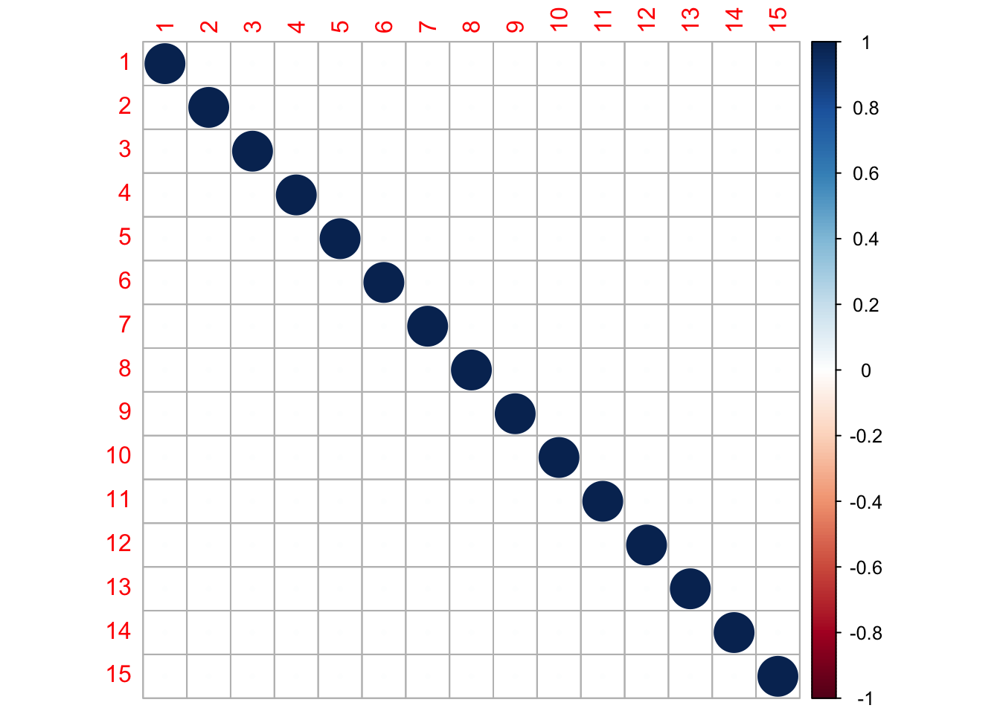
16.2 Hypothesis 2
Hypothesis two assumes that the four main DPCs form separate sub-populations. In this hypothesis we are utilizing 4 separate underlying states to model the observations from each of the main population groups. For each of the four models that we are comparing for this hypothesis, we are allowing the random walks to drift independent of one another based on the supplied “U” matrix.
#give U values names to make it easier to read results#this hypothesis has 4 hidden states based on major groupsU_mat2 <-matrix(c("Cascades","JohnDay","Walla","Yakima"),4,1)#make Z matrix correspond to 4 hidden statesZ_mat2 <-matrix(c(rep(c(1,0,0,0),3),rep(c(0,1,0,0),5),rep(c(0,0,1,0),3),rep(c(0,0,0,1),4)),15,4, byrow=TRUE)
###Hypothesis 2.1 The Q matrix for the variance of process errors is “diagonal and equal” meaning each state (x) model has the same process error but they are not correlated to each other.
Code
mod.list2.1<-list(U = U_mat2,R ="diagonal and equal",Q ="diagonal and equal",Z = Z_mat2)m2.1<-MARSS(dat, model = mod.list2.1)
Success! abstol and log-log tests passed at 125 iterations.
Alert: conv.test.slope.tol is 0.5.
Test with smaller values (<0.1) to ensure convergence.
MARSS fit is
Estimation method: kem
Convergence test: conv.test.slope.tol = 0.5, abstol = 0.001
Estimation converged in 125 iterations.
Log-likelihood: -514.2653
AIC: 1070.531 AICc: 1072.048
Estimate
A.Steelhead (Middle Columbia River DPS) Deschutes River Westside - summer -0.88896
A.Steelhead (Middle Columbia River DPS) Fifteenmile Creek - winter -1.12228
A.Steelhead (Middle Columbia River DPS) John Day River Upper Mainstem - summer -0.77474
A.Steelhead (Middle Columbia River DPS) Middle Fork John Day River - summer -0.34028
A.Steelhead (Middle Columbia River DPS) North Fork John Day River - summer -0.10687
A.Steelhead (Middle Columbia River DPS) South Fork John Day River - summer -1.17898
A.Steelhead (Middle Columbia River DPS) Umatilla River - summer 1.76516
A.Steelhead (Middle Columbia River DPS) Walla Walla River - summer 0.63708
A.Steelhead (Middle Columbia River DPS) Satus Creek - summer -0.02276
A.Steelhead (Middle Columbia River DPS) Toppenish Creek - summer -0.84219
A.Steelhead (Middle Columbia River DPS) Yakima River Upper Mainstem - summer -1.64351
R.diag 0.19787
U.Cascades -0.02384
U.JohnDay -0.01612
U.Walla -0.00168
U.Yakima 0.04521
Q.diag 0.13118
x0.X1 7.55382
x0.X2 8.05157
x0.X3 5.48625
x0.X4 4.63376
Initial states (x0) defined at t=0
Standard errors have not been calculated.
Use MARSSparamCIs to compute CIs and bias estimates.
The model converged with a better AICc than Hypothesis 1.
Code
autoplot(m2.1)
plot.type = xtT
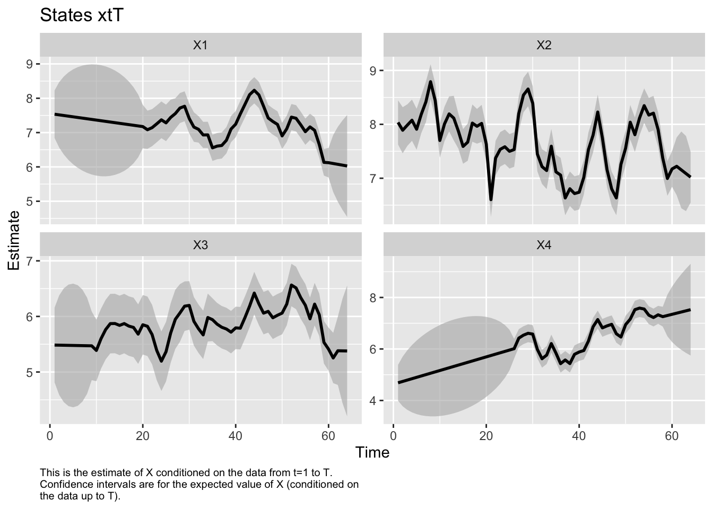
Hit <Return> to see next plot (q to exit):
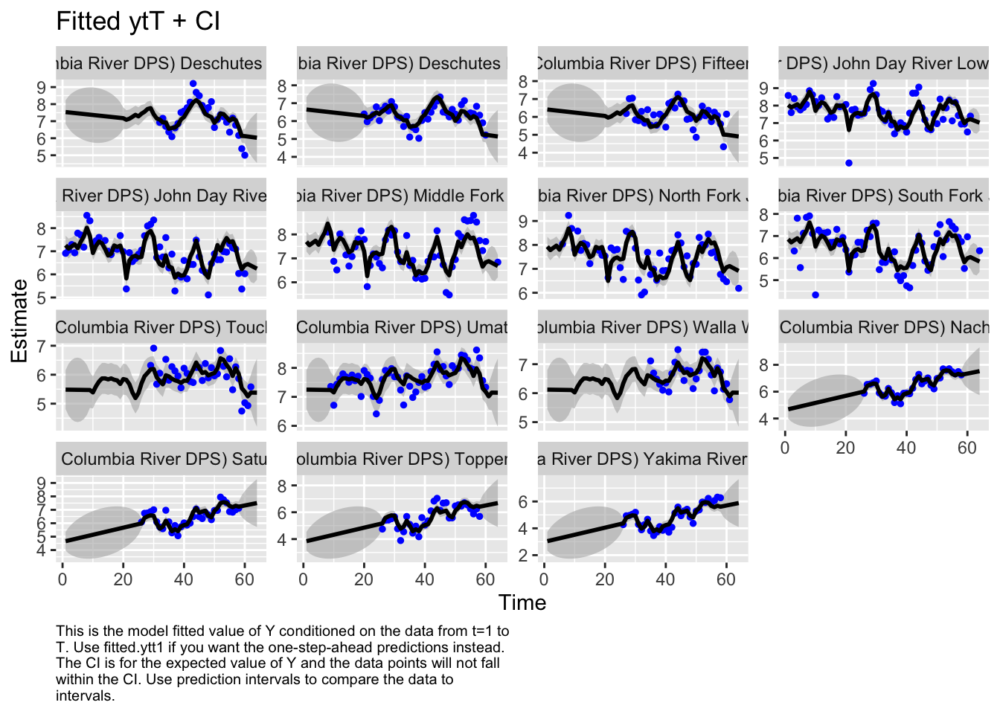
plot.type = fitted.ytT
Hit <Return> to see next plot (q to exit):
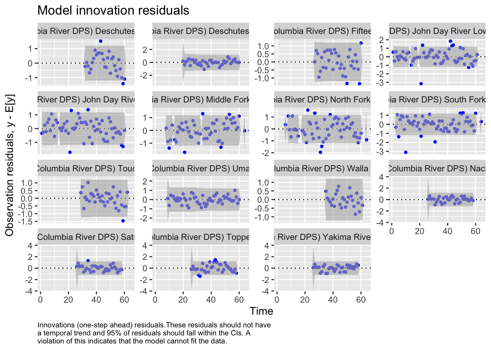
plot.type = model.resids.ytt1
Hit <Return> to see next plot (q to exit):
plot.type = std.model.resids.ytT
Hit <Return> to see next plot (q to exit):
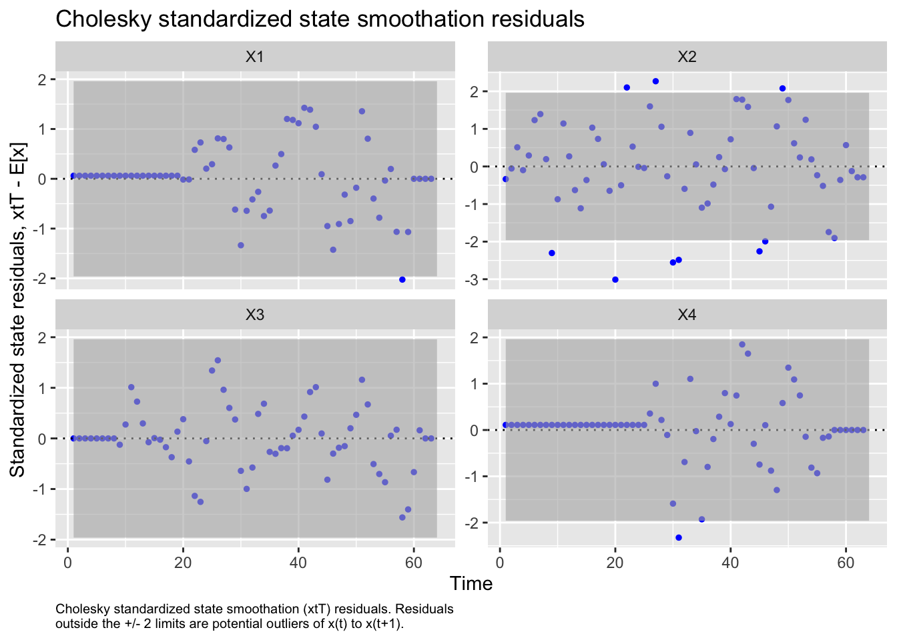
plot.type = std.state.resids.xtT
Hit <Return> to see next plot (q to exit):
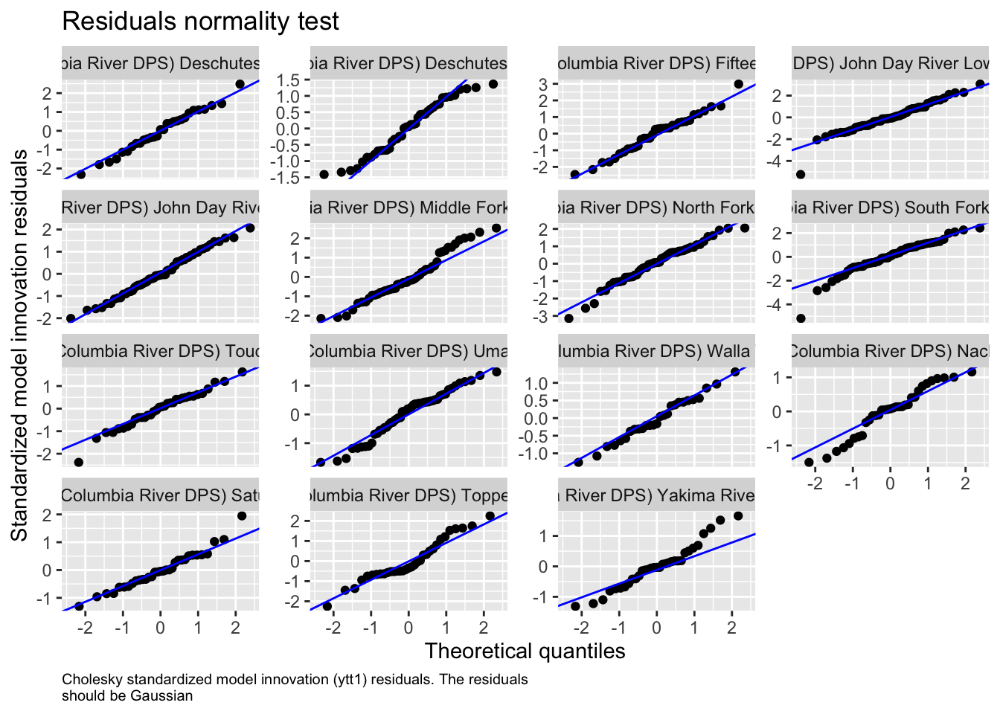
plot.type = qqplot.std.model.resids.ytt1
Hit <Return> to see next plot (q to exit):
plot.type = qqplot.std.state.resids.xtT
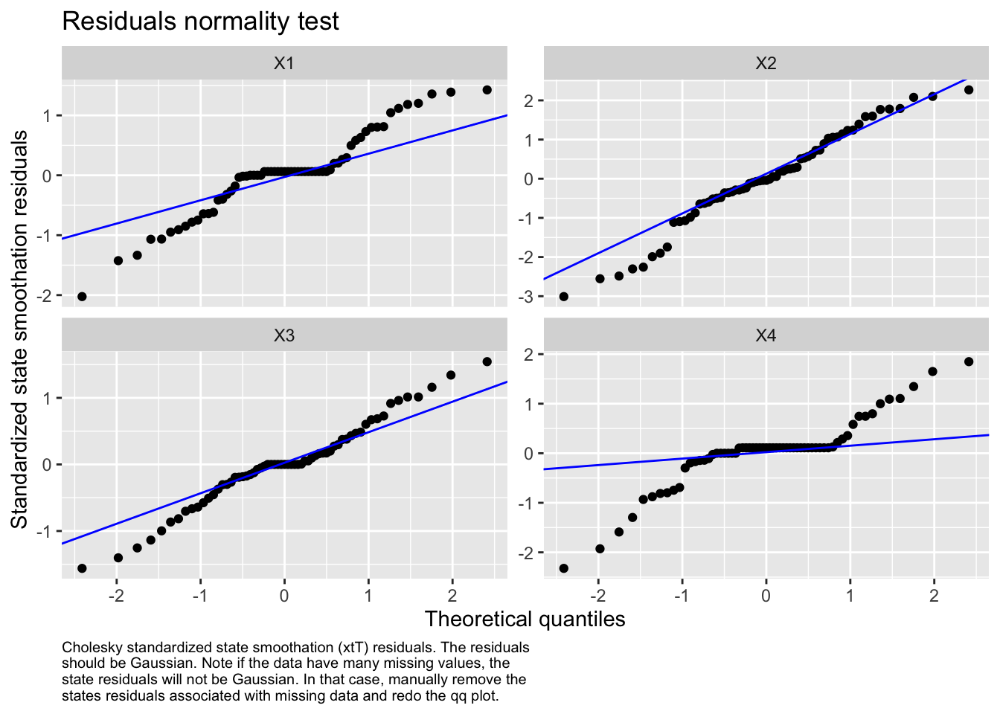
Finished plots.
plot.type = acf.std.model.resids.ytt1
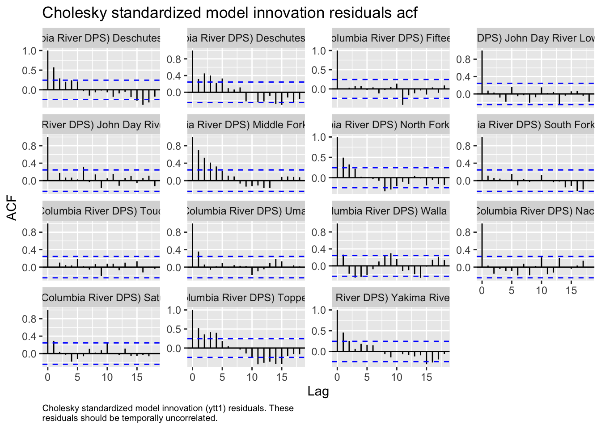
Hit <Return> to see next plot (q to exit):
There are larged ballooned CIs on the missing data in hidden states fitted CI have the same balloon shaped CIs on missing data.There also appears to be some cyclic structure in the residuals. Yakima (X4) is the only system with a positive drift value on the hidden state’s random walk. There is only one Q value output as all hidden states have the same one and there is no covariance/correlation between states. This model likely will not be a top contender when we evaluate based on AICs. Let’s look at the estimates.
And let’s look at corrplot, it should be very familiar.
Code
Q2.1<-coef(m2.1, type ="matrix")$Qcorrmat2.1<-diag(1/sqrt(diag(Q2.1))) %*% Q2.1%*%diag(1/sqrt(diag(Q2.1)))corrplot(corrmat2.1)
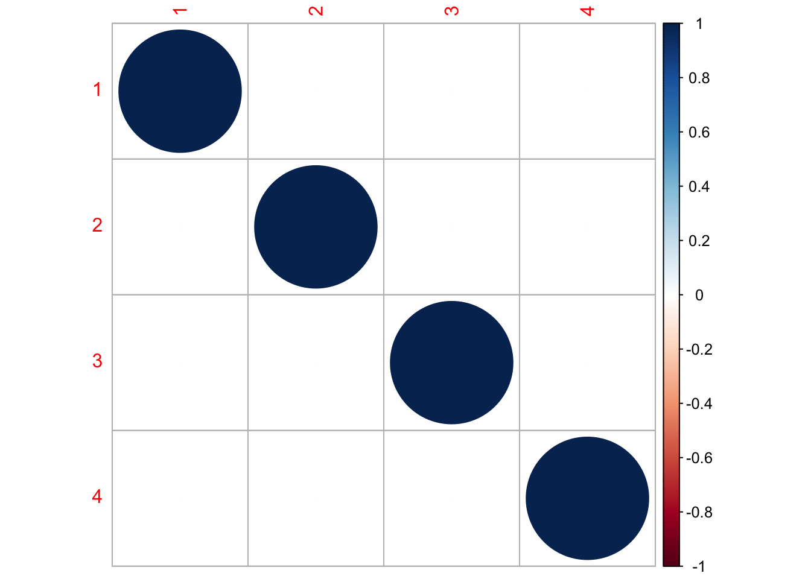
Code
#As expected output displays only diagonal as we told it diagonal and equal
The Confidence Intervals in the sections of the underlying states (x) were very large in the sections where data was missing. This was also reflected in the plots showing the fitted values. Some structuring may also be present in the residuals. Six of the river systems have multiple significant lags when examining the ACF plots indicating the residuals display autocorrelation. The corrplot is fairly uninformative as we forced the model to be equal variance with no correlation. One interesting thing to note is that we allowed the “U” values to varying independently of each other and the Yakima group is the only one with a positive U value, indicating it is the only system with positive growth or at least increasing number of adults counted over time.
16.2.1 Hypothesis 2.2
The Q matrix for the variance of process errors is “diagonal and unequal” meaning each of the four underlying states’ process error can be different but they are not correlated to each other.
Code
mod.list2.2<-list(U = U_mat2,R ="diagonal and equal",Q ="diagonal and unequal",Z = Z_mat2)m2.2<-MARSS(dat, model = mod.list2.2)
Success! abstol and log-log tests passed at 129 iterations.
Alert: conv.test.slope.tol is 0.5.
Test with smaller values (<0.1) to ensure convergence.
MARSS fit is
Estimation method: kem
Convergence test: conv.test.slope.tol = 0.5, abstol = 0.001
Estimation converged in 129 iterations.
Log-likelihood: -504.4194
AIC: 1056.839 AICc: 1058.819
Estimate
A.Steelhead (Middle Columbia River DPS) Deschutes River Westside - summer -0.88829
A.Steelhead (Middle Columbia River DPS) Fifteenmile Creek - winter -1.11858
A.Steelhead (Middle Columbia River DPS) John Day River Upper Mainstem - summer -0.77509
A.Steelhead (Middle Columbia River DPS) Middle Fork John Day River - summer -0.34298
A.Steelhead (Middle Columbia River DPS) North Fork John Day River - summer -0.10888
A.Steelhead (Middle Columbia River DPS) South Fork John Day River - summer -1.18031
A.Steelhead (Middle Columbia River DPS) Umatilla River - summer 1.76167
A.Steelhead (Middle Columbia River DPS) Walla Walla River - summer 0.63346
A.Steelhead (Middle Columbia River DPS) Satus Creek - summer -0.02276
A.Steelhead (Middle Columbia River DPS) Toppenish Creek - summer -0.84219
A.Steelhead (Middle Columbia River DPS) Yakima River Upper Mainstem - summer -1.64351
R.diag 0.19726
U.Cascades -0.02343
U.JohnDay -0.01653
U.Walla -0.00221
U.Yakima 0.04458
Q.(X1,X1) 0.07752
Q.(X2,X2) 0.24414
Q.(X3,X3) 0.02414
Q.(X4,X4) 0.12012
x0.X1 7.55844
x0.X2 8.07225
x0.X3 5.59910
x0.X4 4.67230
Initial states (x0) defined at t=0
Standard errors have not been calculated.
Use MARSSparamCIs to compute CIs and bias estimates.
Our model converged with an AICc value that is a little better than the model where Q was diagonal and equal, indicating that allowing Q to vary improved the model fits to data.
Code
autoplot(m2.2)
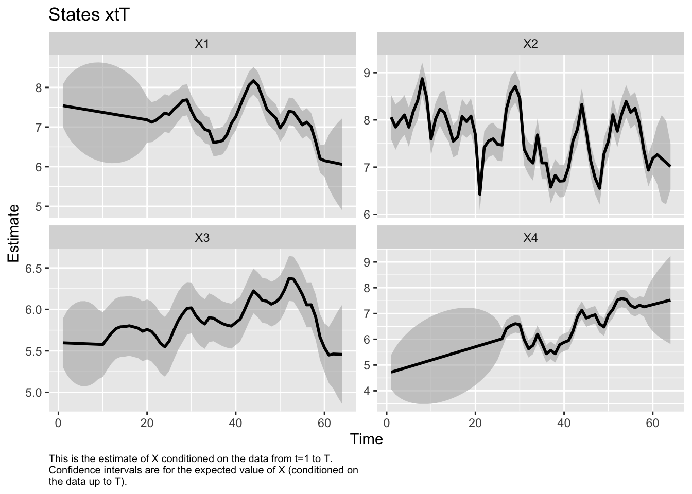
plot.type = xtT
Hit <Return> to see next plot (q to exit):
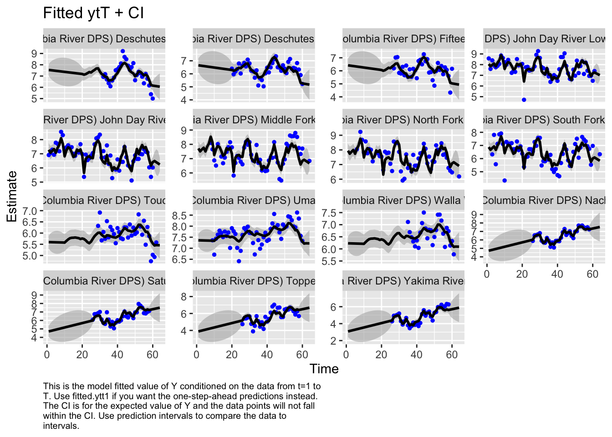
plot.type = fitted.ytT
Hit <Return> to see next plot (q to exit):
plot.type = model.resids.ytt1
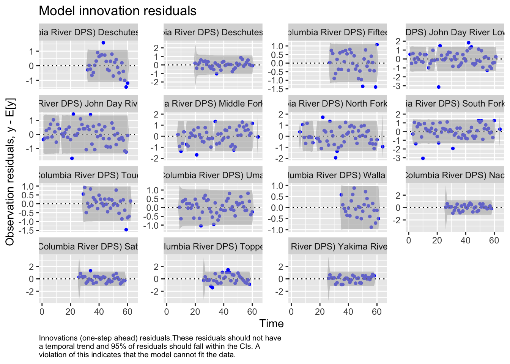
Hit <Return> to see next plot (q to exit):
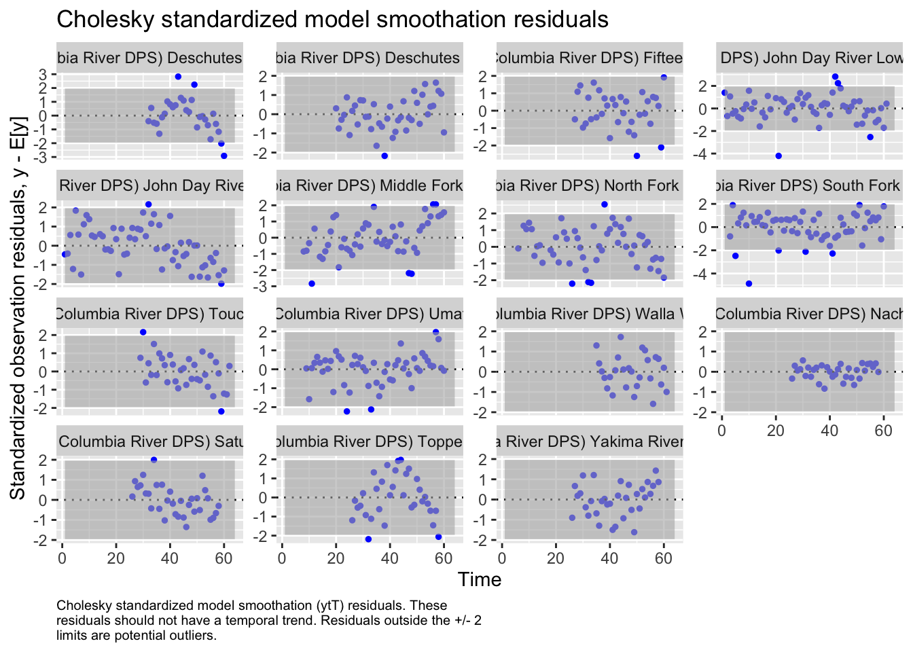
plot.type = std.model.resids.ytT
Hit <Return> to see next plot (q to exit):
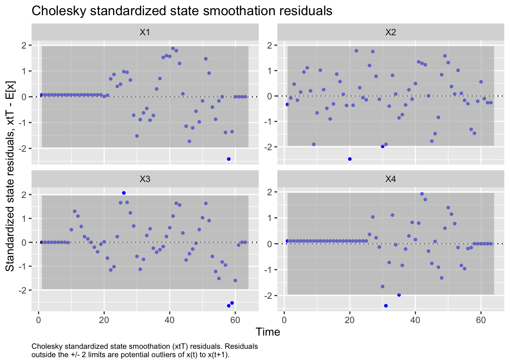
plot.type = std.state.resids.xtT
Hit <Return> to see next plot (q to exit):
plot.type = qqplot.std.model.resids.ytt1
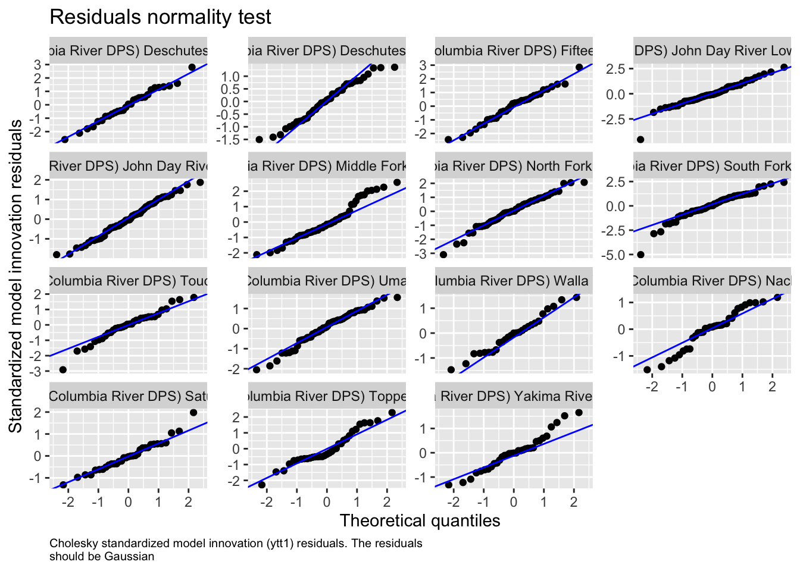
Hit <Return> to see next plot (q to exit):
plot.type = qqplot.std.state.resids.xtT
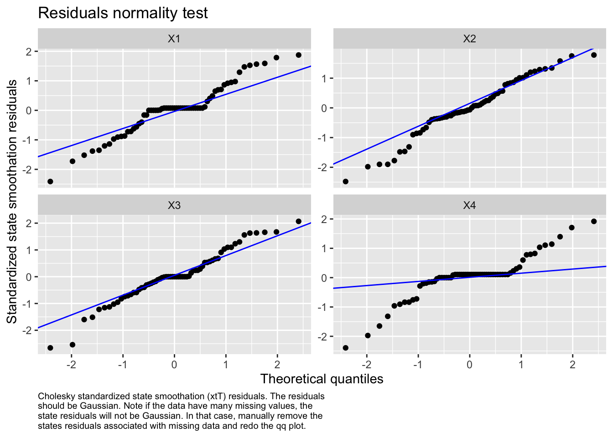
Finished plots.
plot.type = acf.std.model.resids.ytt1
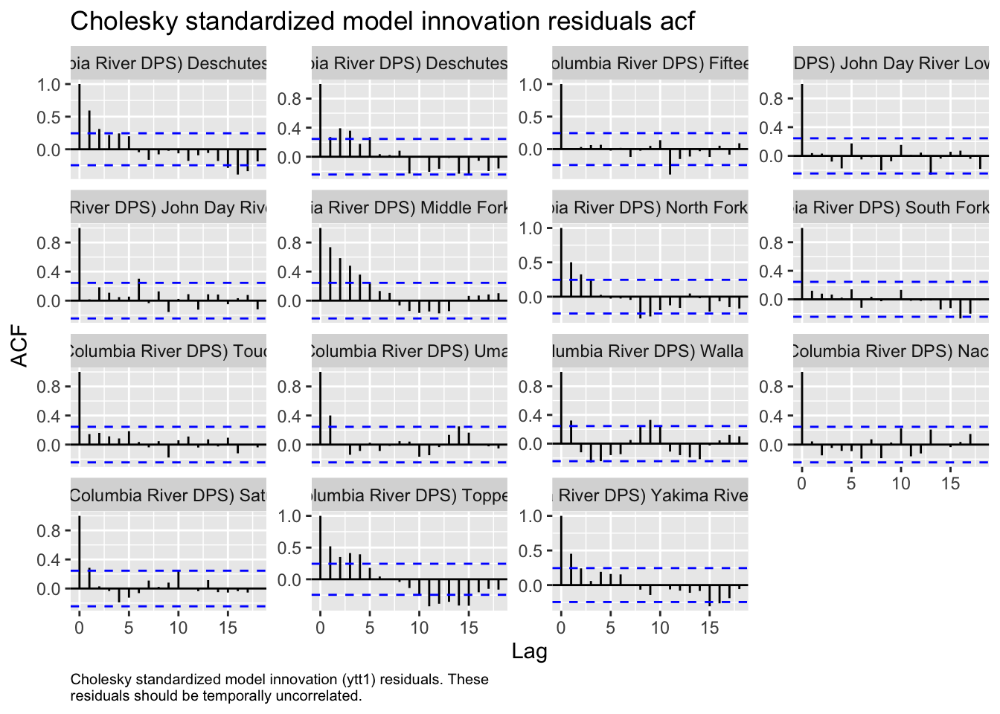
Hit <Return> to see next plot (q to exit):
We still see large CIs on the missing data in hidden states 1 (Cascades) and 4 (Yakima). The CI are tight in the John Day region, which is the most data rich stream. Again Yakima is the only positive drift value on the hidden state’s random walk
The 4 varied Q values indicate that the hidden states are uncorrelated, and the variance of the state variables varies over time.
Q2.2<-coef(m2.2, type ="matrix")$Qcorrmat2.2<-diag(1/sqrt(diag(Q2.2))) %*% Q2.2%*%diag(1/sqrt(diag(Q2.2)))corrplot(corrmat2.2)
Again we see large balloon shaped confidence intervals in the sections of rivers that are missing data. This appears in both the estimated underlying states and the fitted value plots. The Walla Walla groups seems to have the widest confidence intervals of all of the river systems. Again six of the rivers have ACF plots with multiple significant lags. The Yakima Population group continues to be the only group with an underlying state which is estimated to have a positive drift. The variance-covariance matrix was allowed to vary the variance of each underlying state independently of one another, but we see that it estimated each to be equal.
16.2.2 Hypothesis 2.3
The Q matrix for the variance of process errors is “equal variance and covariance” so they each have equal variance and they are all correlated equally to one another.
Code
mod.list2.3<-list(U = U_mat2,R ="diagonal and equal",Q ="equalvarcov",Z = Z_mat2)m2.3<-MARSS(dat, model = mod.list2.3)
Success! abstol and log-log tests passed at 124 iterations.
Alert: conv.test.slope.tol is 0.5.
Test with smaller values (<0.1) to ensure convergence.
MARSS fit is
Estimation method: kem
Convergence test: conv.test.slope.tol = 0.5, abstol = 0.001
Estimation converged in 124 iterations.
Log-likelihood: -493.5994
AIC: 1031.199 AICc: 1032.863
Estimate
A.Steelhead (Middle Columbia River DPS) Deschutes River Westside - summer -0.888148
A.Steelhead (Middle Columbia River DPS) Fifteenmile Creek - winter -1.138376
A.Steelhead (Middle Columbia River DPS) John Day River Upper Mainstem - summer -0.776205
A.Steelhead (Middle Columbia River DPS) Middle Fork John Day River - summer -0.342198
A.Steelhead (Middle Columbia River DPS) North Fork John Day River - summer -0.108360
A.Steelhead (Middle Columbia River DPS) South Fork John Day River - summer -1.180730
A.Steelhead (Middle Columbia River DPS) Umatilla River - summer 1.762920
A.Steelhead (Middle Columbia River DPS) Walla Walla River - summer 0.648925
A.Steelhead (Middle Columbia River DPS) Satus Creek - summer -0.022687
A.Steelhead (Middle Columbia River DPS) Toppenish Creek - summer -0.842115
A.Steelhead (Middle Columbia River DPS) Yakima River Upper Mainstem - summer -1.643436
R.diag 0.203477
U.Cascades -0.027075
U.JohnDay -0.016191
U.Walla -0.000538
U.Yakima 0.029454
Q.diag 0.131007
Q.offdiag 0.107523
x0.X1 7.702035
x0.X2 8.051674
x0.X3 5.371496
x0.X4 4.934851
Initial states (x0) defined at t=0
Standard errors have not been calculated.
Use MARSSparamCIs to compute CIs and bias estimates.
This model seemed to improve performance. Let’s take a look at some plots:
Code
autoplot(m2.3)
MARSSresiduals.tt1 reported warnings. See msg element of returned residuals object.
MARSSresiduals.tT reported warnings. See msg element or attribute of returned residuals object.
plot.type = xtT
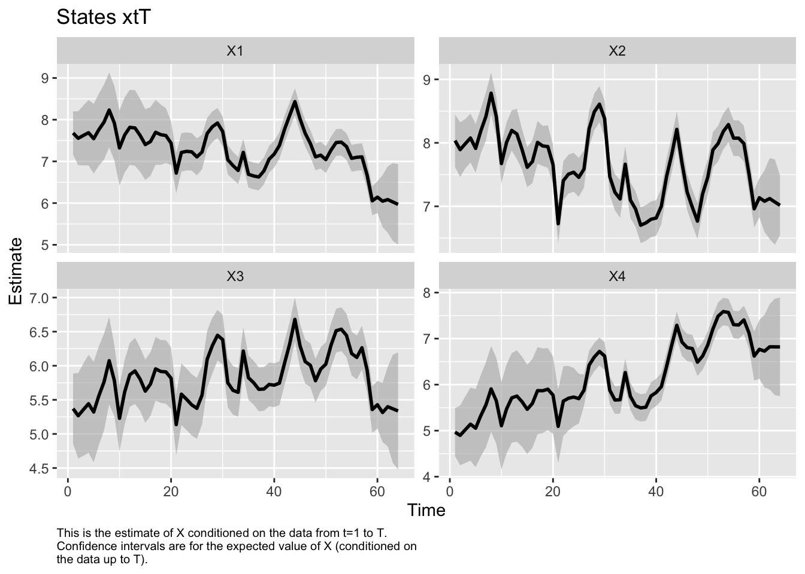
Hit <Return> to see next plot (q to exit):
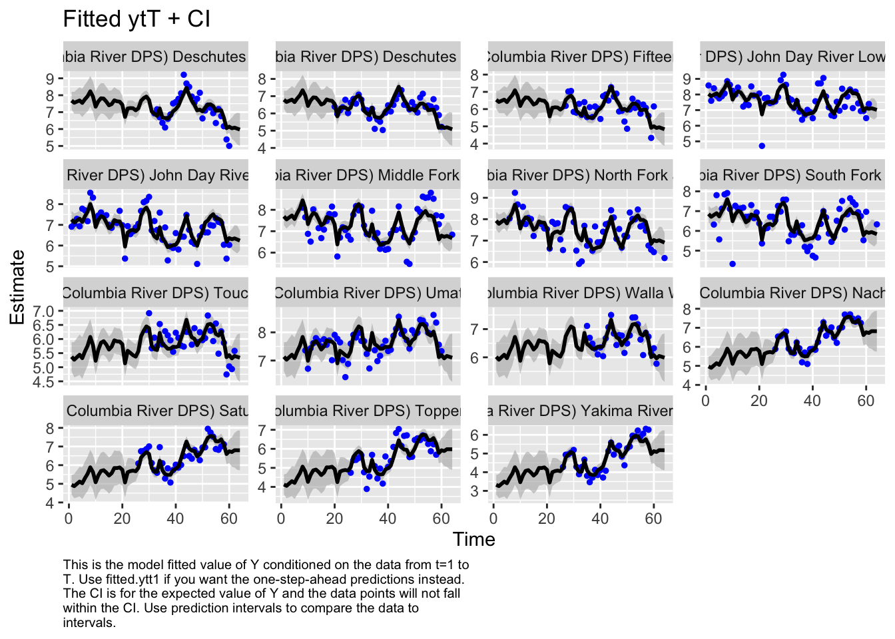
plot.type = fitted.ytT
Hit <Return> to see next plot (q to exit):
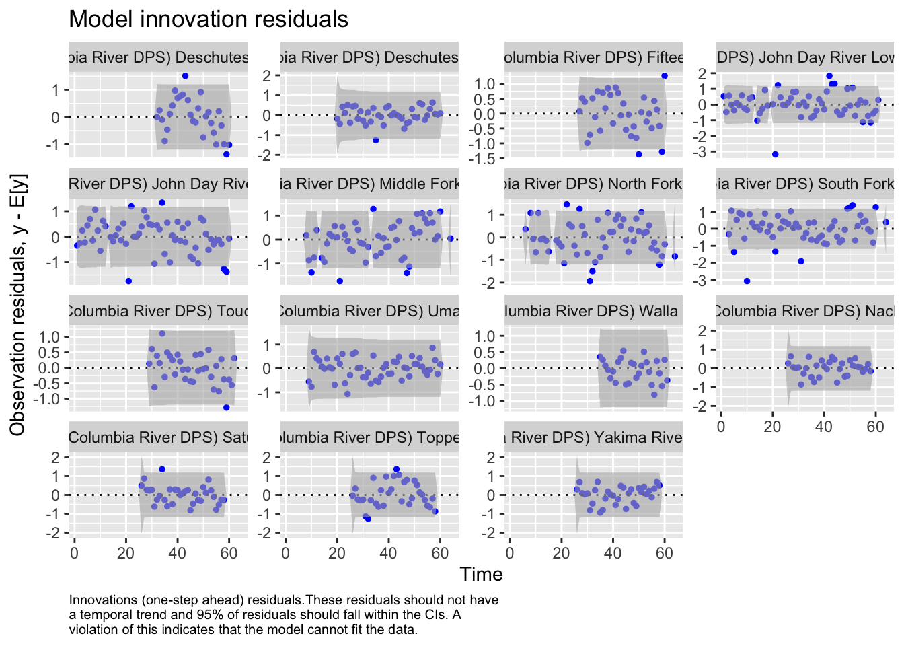
plot.type = model.resids.ytt1
Hit <Return> to see next plot (q to exit):
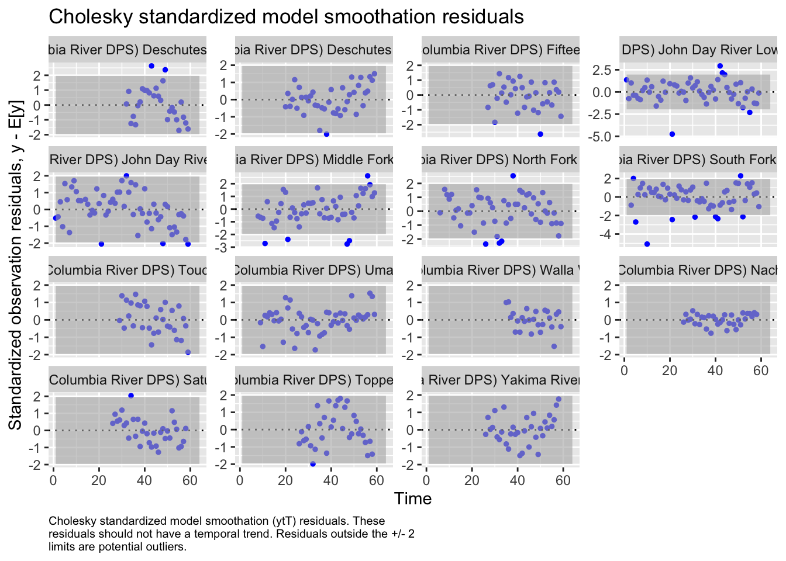
plot.type = std.model.resids.ytT
Hit <Return> to see next plot (q to exit):
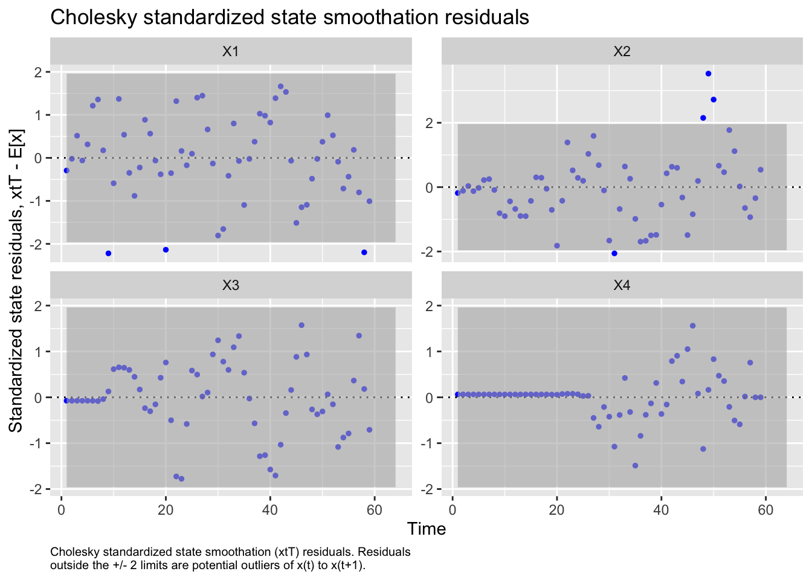
plot.type = std.state.resids.xtT
Hit <Return> to see next plot (q to exit):
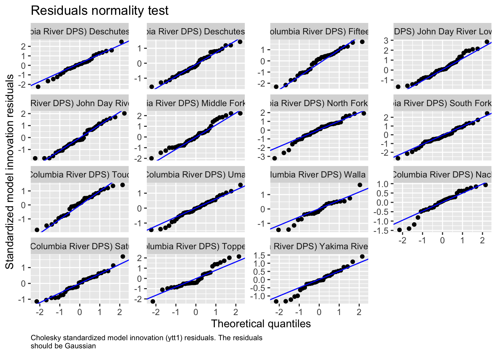
plot.type = qqplot.std.model.resids.ytt1
Hit <Return> to see next plot (q to exit):
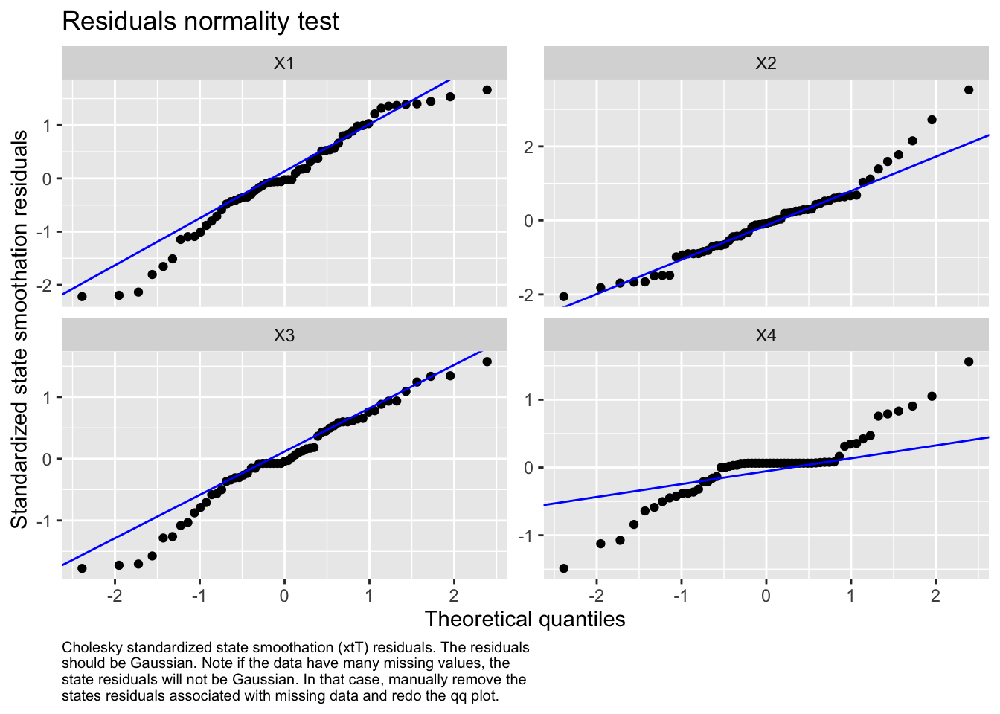
plot.type = qqplot.std.state.resids.xtT
Finished plots.
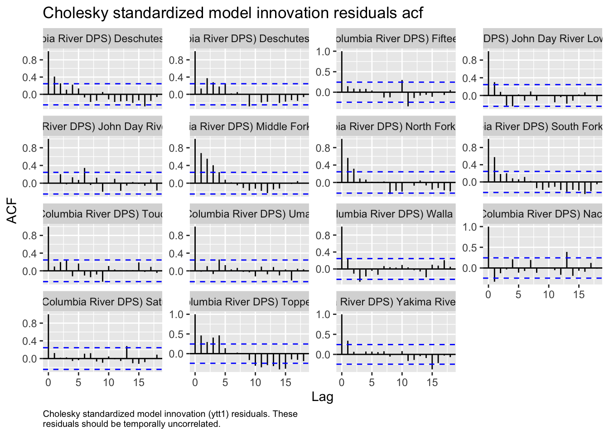
plot.type = acf.std.model.resids.ytt1
Hit <Return> to see next plot (q to exit):
This model fits each of the four states quite well, which indicates that the variability and the relationships between the different state variables are correlated.
Q2.3<-coef(m2.3, type ="matrix")$Qcorrmat2.3<-diag(1/sqrt(diag(Q2.3))) %*% Q2.3%*%diag(1/sqrt(diag(Q2.3)))corrplot(corrmat2.3)
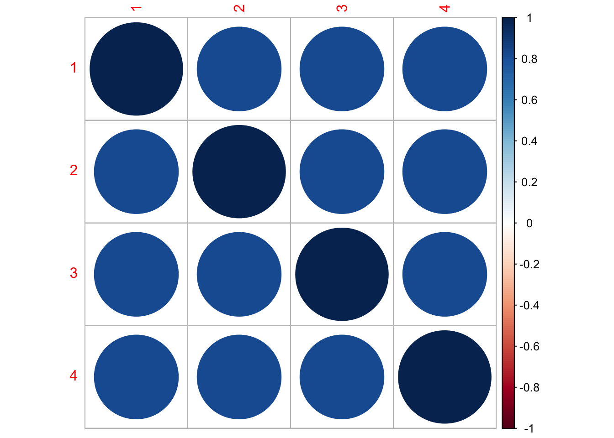
Code
#corrplot mirrors what we told MARSS to use as a Q matrix (equal variance and covariance)
This is the first set of models in the Hypothesis Two group that has not generated balloon shaped confidence intervals on the underlying states or the fitted values plots. Indicating that we have a better model when we allow the models to be correlated with one another. We potentially see some structuring in the residuals. Fewer of the ACF plots show strong structuring in the residuals, some of the plots with significant lags onlt have a few and we see less of the sine wave shaped plots than in the previous Hypothesis Two models. The variance covariate plot was forced to be equal, but we see that correlation between the major groups is estimated to be quite high.
16.2.3 Hypothesis 2.4
The Q matrix for the variance of process errors is “unconstrained”. Meaning that each hidden state is allowed to vary separately as is the correlation between the underlying states.
Code
mod.list2.4<-list(U = U_mat2,R ="diagonal and equal",Q ="unconstrained",Z = Z_mat2)m2.4<-MARSS(dat, model = mod.list2.4, method="BFGS")
Success! Converged in 898 iterations.
Function MARSSkfas used for likelihood calculation.
MARSS fit is
Estimation method: BFGS
Estimation converged in 898 iterations.
Log-likelihood: -472.9633
AIC: 1005.927 AICc: 1009.027
Estimate
A.Steelhead (Middle Columbia River DPS) Deschutes River Westside - summer -0.88369
A.Steelhead (Middle Columbia River DPS) Fifteenmile Creek - winter -1.13428
A.Steelhead (Middle Columbia River DPS) John Day River Upper Mainstem - summer -0.77827
A.Steelhead (Middle Columbia River DPS) Middle Fork John Day River - summer -0.34595
A.Steelhead (Middle Columbia River DPS) North Fork John Day River - summer -0.11152
A.Steelhead (Middle Columbia River DPS) South Fork John Day River - summer -1.18329
A.Steelhead (Middle Columbia River DPS) Umatilla River - summer 1.72948
A.Steelhead (Middle Columbia River DPS) Walla Walla River - summer 0.64196
A.Steelhead (Middle Columbia River DPS) Satus Creek - summer -0.02319
A.Steelhead (Middle Columbia River DPS) Toppenish Creek - summer -0.84264
A.Steelhead (Middle Columbia River DPS) Yakima River Upper Mainstem - summer -1.64395
R.diag 0.20323
U.Cascades -0.02396
U.JohnDay -0.01680
U.Walla -0.00129
U.Yakima 0.03104
Q.(1,1) 0.08502
Q.(2,1) 0.10316
Q.(3,1) 0.04997
Q.(4,1) 0.08806
Q.(2,2) 0.21631
Q.(3,2) 0.07749
Q.(4,2) 0.15904
Q.(3,3) 0.03249
Q.(4,3) 0.06141
Q.(4,4) 0.12110
x0.X1 7.40935
x0.X2 8.06903
x0.X3 5.71073
x0.X4 4.80279
Initial states (x0) defined at t=0
Standard errors have not been calculated.
Use MARSSparamCIs to compute CIs and bias estimates.
This model, with the unconstrained Q matrix, had a hard time converging, thus the Broyden-Fletcher-Goldfarb-Shanno method was used to help with optimization. Thus far, this model has the lowest AICc.
Code
autoplot(m2.4)
MARSSresiduals.tt1 reported warnings. See msg element of returned residuals object.
MARSSresiduals.tT reported warnings. See msg element or attribute of returned residuals object.
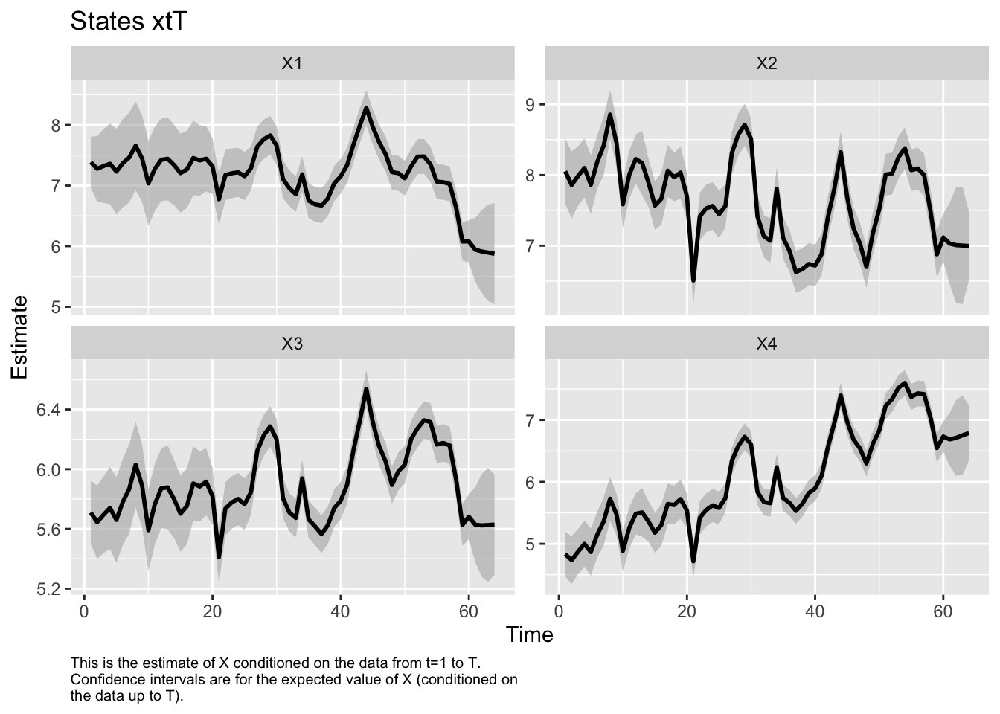
plot.type = xtT
Hit <Return> to see next plot (q to exit):
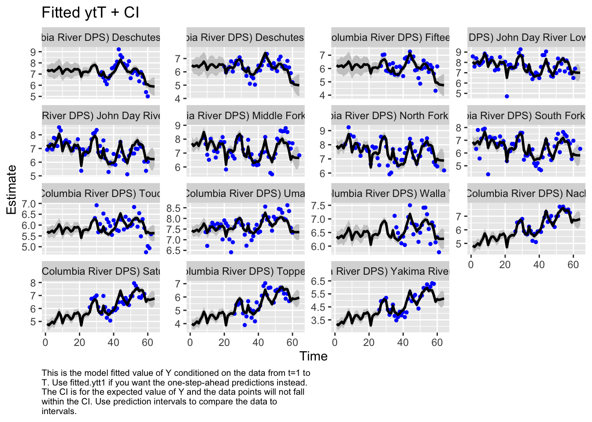
plot.type = fitted.ytT
Hit <Return> to see next plot (q to exit):
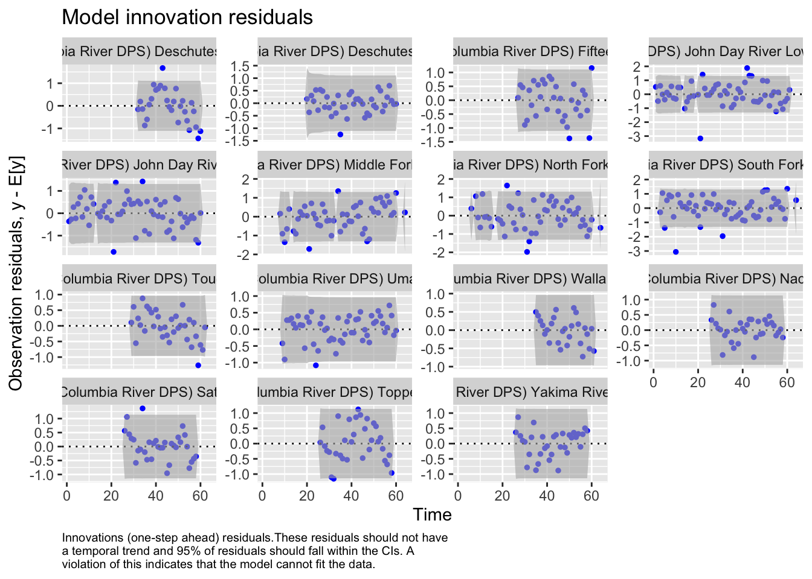
plot.type = model.resids.ytt1
Hit <Return> to see next plot (q to exit):
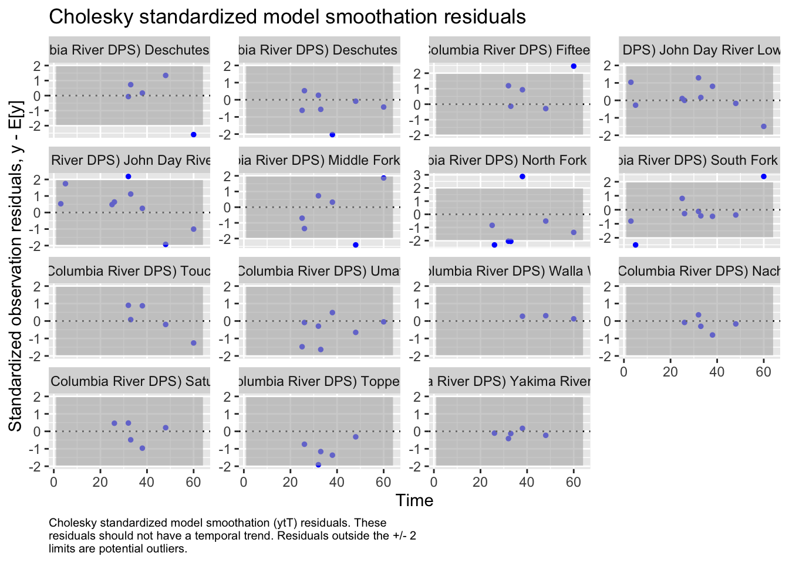
plot.type = std.model.resids.ytT
Hit <Return> to see next plot (q to exit):
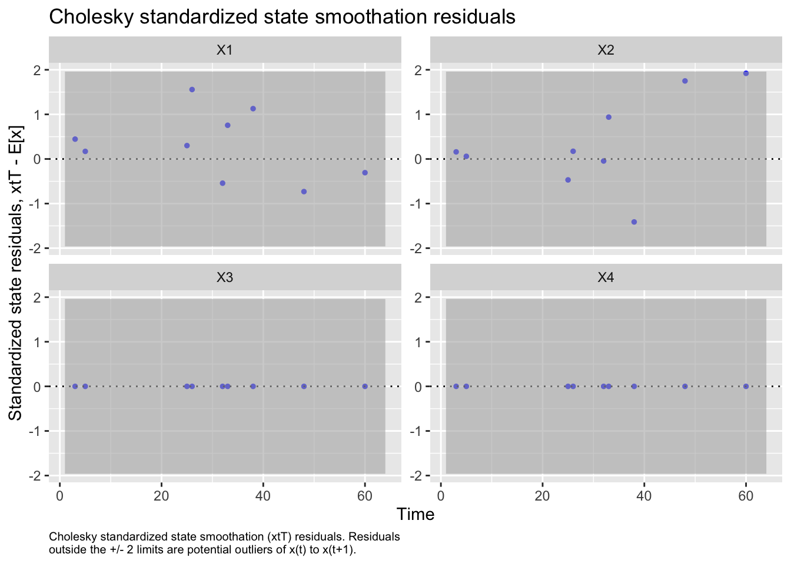
plot.type = std.state.resids.xtT
Hit <Return> to see next plot (q to exit):
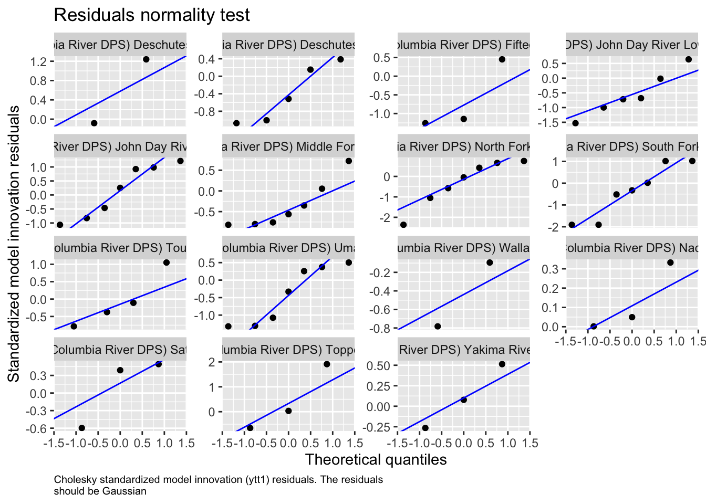
plot.type = qqplot.std.model.resids.ytt1
Hit <Return> to see next plot (q to exit):
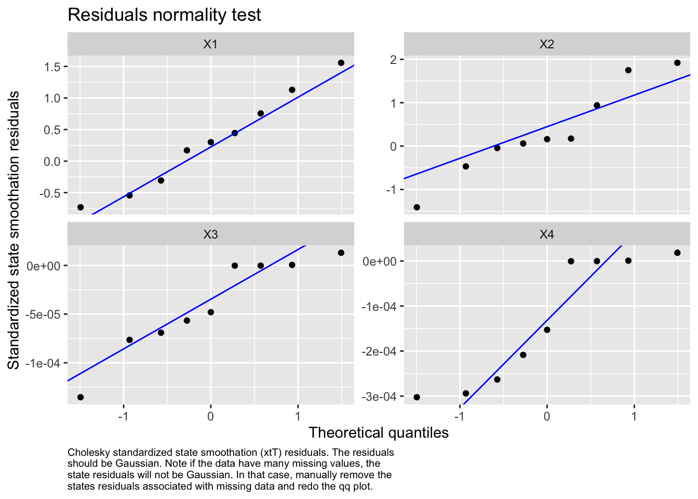
plot.type = qqplot.std.state.resids.xtT
Finished plots.
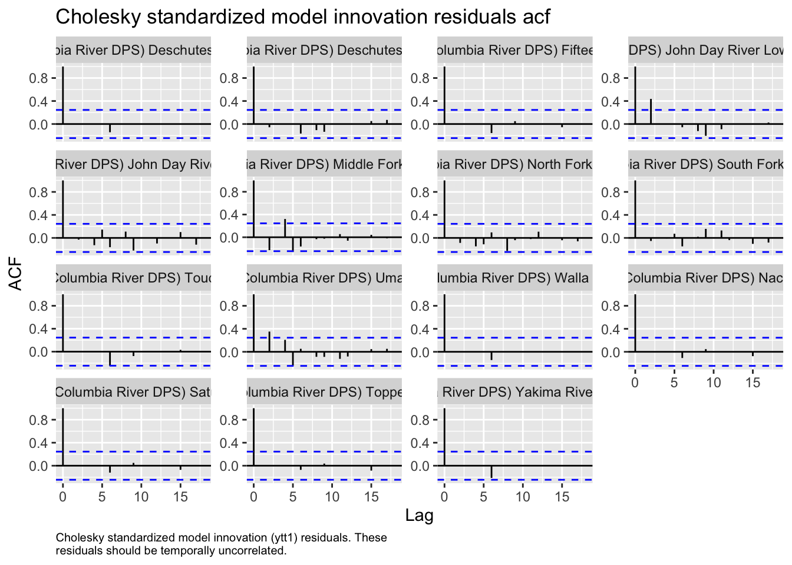
plot.type = acf.std.model.resids.ytt1
Hit <Return> to see next plot (q to exit):
These model fits looks pretty well, with tight confidence intervals and the model is fitting the data well. All of the residuals looks like they are normal, and standardized residuals may show a bit of structure in a few graphs but otherwise white noise. Again X4 (Yakima) is the only positive drift value. On the hidden state’s random walk John Day and Yakima have strongest correlation and then John Day and Cascades I expect this to be seen in the corrplot.
Q2.4<-coef(m2.4, type ="matrix")$Qcorrmat2.4<-diag(1/sqrt(diag(Q2.4))) %*% Q2.4%*%diag(1/sqrt(diag(Q2.4)))corrplot(corrmat2.4)
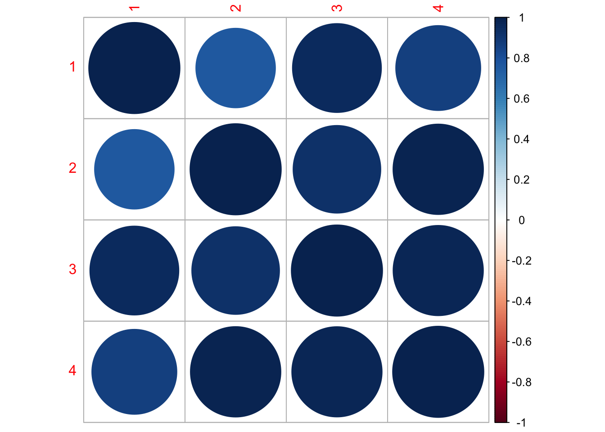
All groups are highly correlated with each other, which means there is likely a lot of connectivity between these four DPCs.
Again we see that confidence intervals have some shape to them and fit the predicted values better than the balloon shaped confidence intervals seen in previous Hypotheis Two plots. Plots of the residuals look very similar to the other plots from this Hypothesis group. ACF plots are similar to the Hypothesis 2.3 and do not show as much structuring as previous plots.
The Q matrix was allowed to be unconstrained. We see very different variances estimated by the MARSS model, ranging from 0.03 to .21. Covariance between the underlying states allowed for better fits to data and realistic estimates for streams with missing data.
16.3 Hypothesis 3
Description of H3: There are two underlying states, one representing the northern area (Walla Walla and Yakima) and one representing the southern area (John Day and Cascades).
We start by establishing our U matrix and our Z matrix.
Code
U_mat3 <-matrix(c("North","South"),2,1)#make Z matrix correspond to 2 hidden statesZ_mat3 <-matrix(c(rep(c(0,1),8),rep(c(1,0),7)),15,2, byrow=TRUE)
16.3.1 Hypothesis 3.1
The Q matrix for the variance of process errors is “diagonal and equal” meaning each state (x) model has the same process error but they are not correlated to each other.
Code
mod.list3.1<-list(U = U_mat3,R ="diagonal and equal",Q ="diagonal and equal",Z = Z_mat3)m3.1<-MARSS(dat, model = mod.list3.1)
Success! abstol and log-log tests passed at 78 iterations.
Alert: conv.test.slope.tol is 0.5.
Test with smaller values (<0.1) to ensure convergence.
MARSS fit is
Estimation method: kem
Convergence test: conv.test.slope.tol = 0.5, abstol = 0.001
Estimation converged in 78 iterations.
Log-likelihood: -544.2628
AIC: 1126.526 AICc: 1127.77
Estimate
A.Steelhead (Middle Columbia River DPS) Deschutes River Westside - summer -0.91016
A.Steelhead (Middle Columbia River DPS) Fifteenmile Creek - winter -1.16869
A.Steelhead (Middle Columbia River DPS) John Day River Lower Mainstem Tributaries - summer 0.27060
A.Steelhead (Middle Columbia River DPS) John Day River Upper Mainstem - summer -0.50637
A.Steelhead (Middle Columbia River DPS) Middle Fork John Day River - summer -0.07071
A.Steelhead (Middle Columbia River DPS) North Fork John Day River - summer 0.16262
A.Steelhead (Middle Columbia River DPS) South Fork John Day River - summer -0.90975
A.Steelhead (Middle Columbia River DPS) Umatilla River - summer 1.77502
A.Steelhead (Middle Columbia River DPS) Walla Walla River - summer 0.58813
A.Steelhead (Middle Columbia River DPS) Naches River - summer 0.51010
A.Steelhead (Middle Columbia River DPS) Satus Creek - summer 0.48692
A.Steelhead (Middle Columbia River DPS) Toppenish Creek - summer -0.33251
A.Steelhead (Middle Columbia River DPS) Yakima River Upper Mainstem - summer -1.13383
R.diag 0.25108
U.North -0.00129
U.South -0.01638
Q.diag 0.12901
x0.X1 5.47856
x0.X2 7.77580
Initial states (x0) defined at t=0
Standard errors have not been calculated.
Use MARSSparamCIs to compute CIs and bias estimates.
This AICc is bad compared to Hypothesis 2. This is either because there is coorelation between the hidden states, as supported by hypothesis two, or the assumption that there are only two underlying states is incorrect. Plots
Code
autoplot(m3.1)
plot.type = xtT
Hit <Return> to see next plot (q to exit):
plot.type = fitted.ytT
Hit <Return> to see next plot (q to exit):
plot.type = model.resids.ytt1
Hit <Return> to see next plot (q to exit):
plot.type = std.model.resids.ytT
Hit <Return> to see next plot (q to exit):
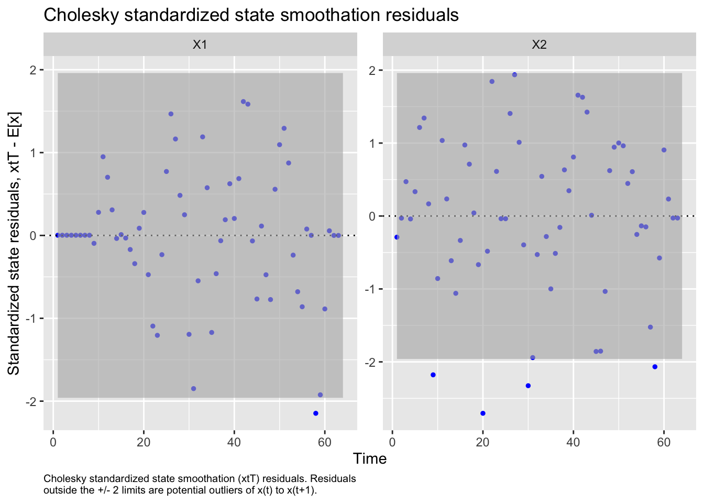
plot.type = std.state.resids.xtT
Hit <Return> to see next plot (q to exit):
plot.type = qqplot.std.model.resids.ytt1
Hit <Return> to see next plot (q to exit):
plot.type = qqplot.std.state.resids.xtT
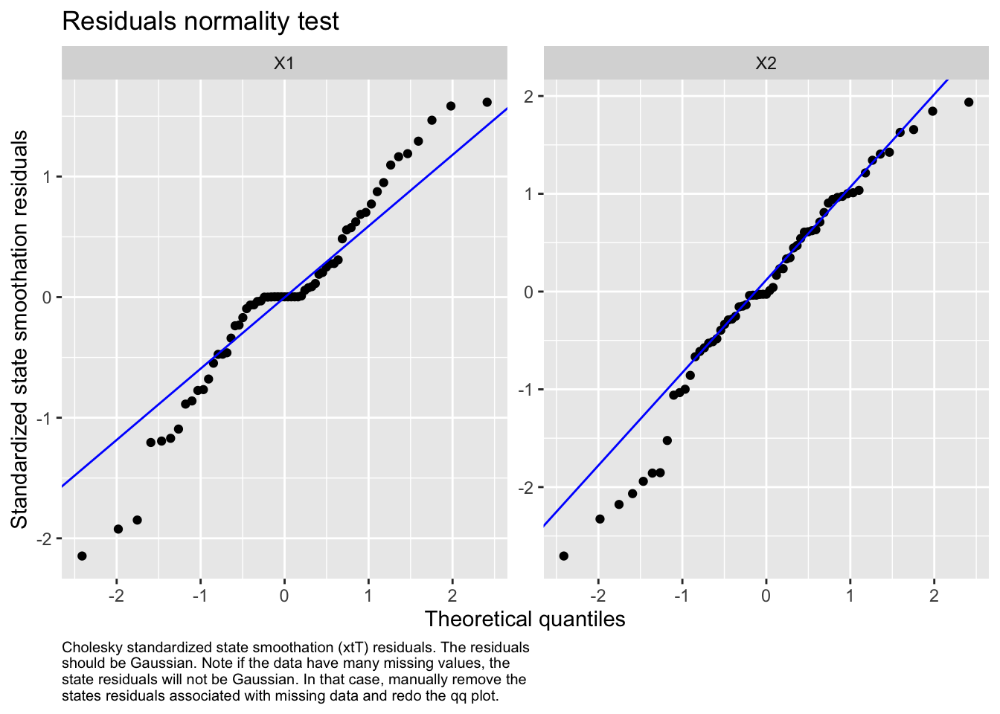
Finished plots.
plot.type = acf.std.model.resids.ytt1
Hit <Return> to see next plot (q to exit):
The southern area (John Day and Cascades) are more informed by data and the fits look ok. The northern area (Yakima and Walla Walla) have large confidence intercals in the early period. The models are fitting data pretty well for individual streams, and while residuals don’t seem to have too much structure, some outliers seem to be present for the southern area. The Residuals normality tests are a little wobbly, which is troubling.
Q3.1<-coef(m3.1, type ="matrix")$Qcorrmat3.1<-diag(1/sqrt(diag(Q3.1))) %*% Q3.1%*%diag(1/sqrt(diag(Q3.1)))corrplot(corrmat3.1)
This model probably isn’t it. It’s failing our normality tests, and while it seems to fit the data ok, it didn’t perform as well as hypothesis 2. Let’s see how our models improve with different, but uncorrelated process errors.
16.3.2 Hypothesis 3.2
The Q matrix for the variance of process errors is “diagonal and unequal” meaning each of the four underlying states’ process error can be different but they are not correlated to each other.
Code
mod.list3.2<-list(U = U_mat3,R ="diagonal and equal",Q ="diagonal and unequal",Z = Z_mat3)m3.2<-MARSS(dat, model = mod.list3.2)
Success! abstol and log-log tests passed at 81 iterations.
Alert: conv.test.slope.tol is 0.5.
Test with smaller values (<0.1) to ensure convergence.
MARSS fit is
Estimation method: kem
Convergence test: conv.test.slope.tol = 0.5, abstol = 0.001
Estimation converged in 81 iterations.
Log-likelihood: -542.9455
AIC: 1125.891 AICc: 1127.268
Estimate
A.Steelhead (Middle Columbia River DPS) Deschutes River Westside - summer -0.91086
A.Steelhead (Middle Columbia River DPS) Fifteenmile Creek - winter -1.17082
A.Steelhead (Middle Columbia River DPS) John Day River Lower Mainstem Tributaries - summer 0.26954
A.Steelhead (Middle Columbia River DPS) John Day River Upper Mainstem - summer -0.50751
A.Steelhead (Middle Columbia River DPS) Middle Fork John Day River - summer -0.07285
A.Steelhead (Middle Columbia River DPS) North Fork John Day River - summer 0.16063
A.Steelhead (Middle Columbia River DPS) South Fork John Day River - summer -0.91143
A.Steelhead (Middle Columbia River DPS) Umatilla River - summer 1.77489
A.Steelhead (Middle Columbia River DPS) Walla Walla River - summer 0.58698
A.Steelhead (Middle Columbia River DPS) Naches River - summer 0.51639
A.Steelhead (Middle Columbia River DPS) Satus Creek - summer 0.49321
A.Steelhead (Middle Columbia River DPS) Toppenish Creek - summer -0.32622
A.Steelhead (Middle Columbia River DPS) Yakima River Upper Mainstem - summer -1.12754
R.diag 0.25075
U.North -0.00136
U.South -0.01641
Q.(X1,X1) 0.08331
Q.(X2,X2) 0.16535
x0.X1 5.50140
x0.X2 7.78310
Initial states (x0) defined at t=0
Standard errors have not been calculated.
Use MARSSparamCIs to compute CIs and bias estimates.
This model also has a higher AICc than some of the other models, indicating that the assumption that process errors ARE correlated is likely a better assumption than the diagonal and unequal assumption for the Q matrix.
Let’s look at some plots:
Code
autoplot(m3.1)
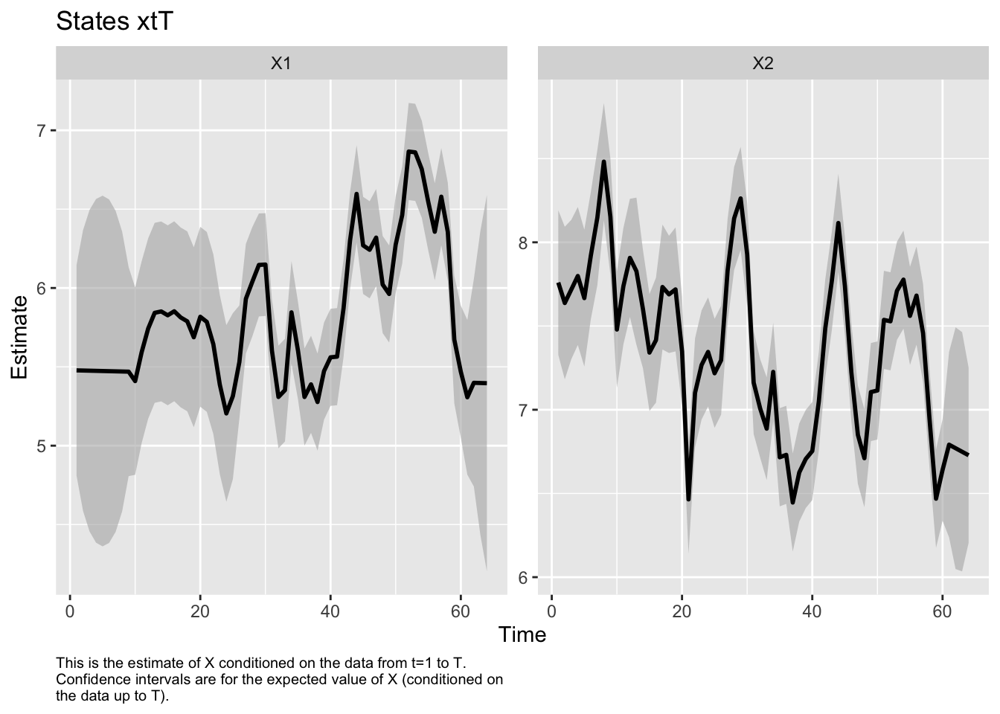
plot.type = xtT
Hit <Return> to see next plot (q to exit):
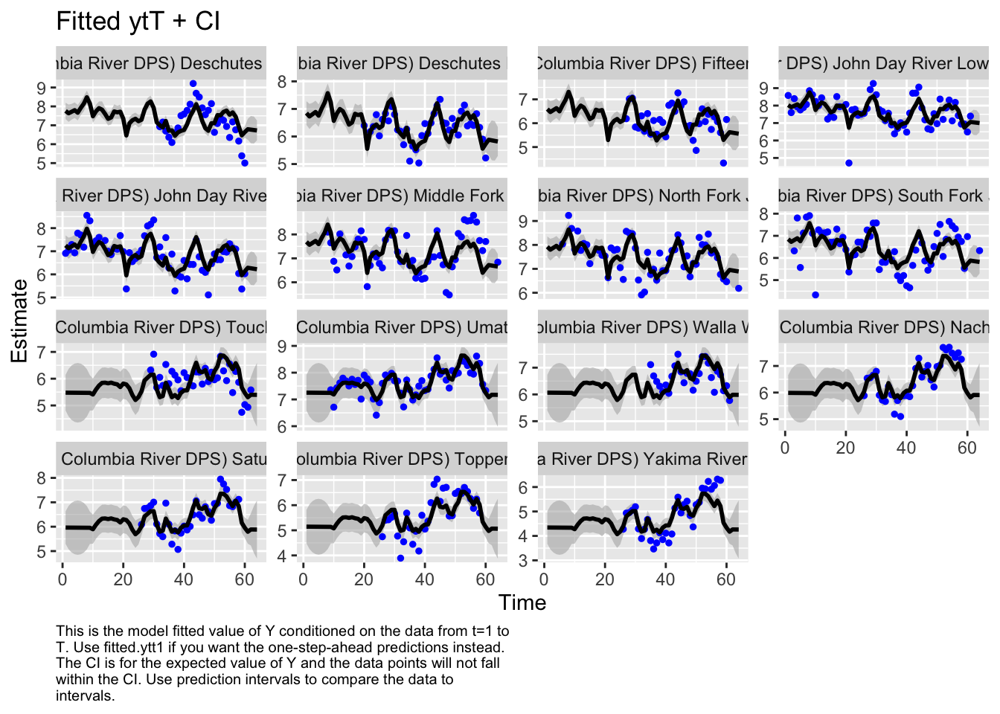
plot.type = fitted.ytT
Hit <Return> to see next plot (q to exit):
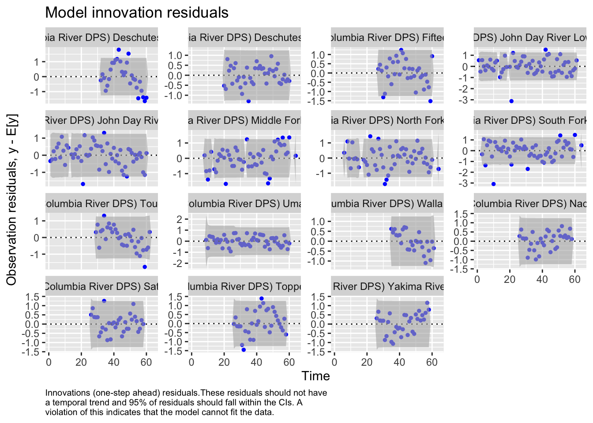
plot.type = model.resids.ytt1
Hit <Return> to see next plot (q to exit):
plot.type = std.model.resids.ytT
Hit <Return> to see next plot (q to exit):
plot.type = std.state.resids.xtT
Hit <Return> to see next plot (q to exit):
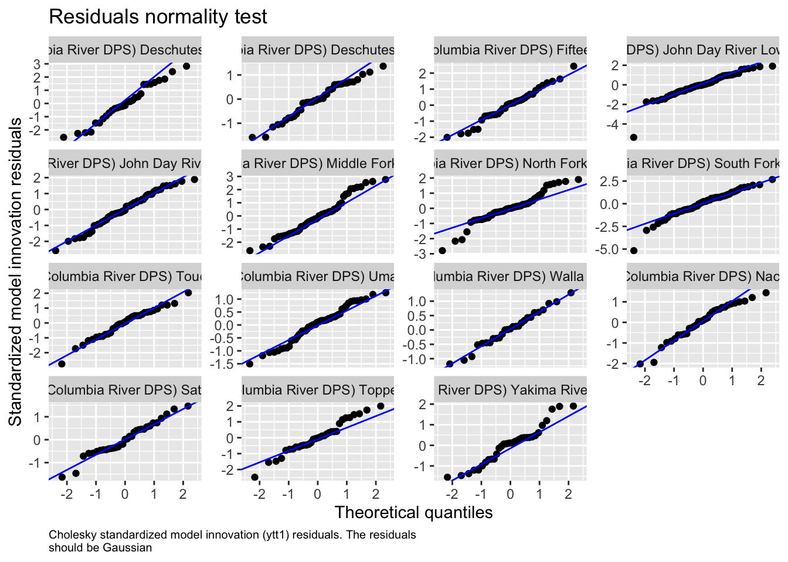
plot.type = qqplot.std.model.resids.ytt1
Hit <Return> to see next plot (q to exit):
plot.type = qqplot.std.state.resids.xtT
Finished plots.
plot.type = acf.std.model.resids.ytt1
Hit <Return> to see next plot (q to exit):
This model isn’t performing great, which is unsurprising given the lack of correlation in the process errors. The curvy QQ plots remain, and the model CIs are high where there is a lack of data.
Q3.2<-coef(m3.2, type ="matrix")$Qcorrmat3.2<-diag(1/sqrt(diag(Q3.2))) %*% Q3.2%*%diag(1/sqrt(diag(Q3.2)))corrplot(corrmat3.2)
16.3.3 Hypothesis 3.3
The Q matrix for the variance of process errors is “equal variance and covariance” so they each have equal variance and they are all correlated equally to one another. I would guess this model performs better than the other too, let’s see!
Code
mod.list3.3<-list(U = U_mat3,R ="diagonal and equal",Q ="equalvarcov",Z = Z_mat3)m3.3<-MARSS(dat, model = mod.list3.3)
Success! abstol and log-log tests passed at 83 iterations.
Alert: conv.test.slope.tol is 0.5.
Test with smaller values (<0.1) to ensure convergence.
MARSS fit is
Estimation method: kem
Convergence test: conv.test.slope.tol = 0.5, abstol = 0.001
Estimation converged in 83 iterations.
Log-likelihood: -535.7385
AIC: 1111.477 AICc: 1112.854
Estimate
A.Steelhead (Middle Columbia River DPS) Deschutes River Westside - summer -0.91224
A.Steelhead (Middle Columbia River DPS) Fifteenmile Creek - winter -1.16892
A.Steelhead (Middle Columbia River DPS) John Day River Lower Mainstem Tributaries - summer 0.27394
A.Steelhead (Middle Columbia River DPS) John Day River Upper Mainstem - summer -0.50618
A.Steelhead (Middle Columbia River DPS) Middle Fork John Day River - summer -0.07051
A.Steelhead (Middle Columbia River DPS) North Fork John Day River - summer 0.16385
A.Steelhead (Middle Columbia River DPS) South Fork John Day River - summer -0.90916
A.Steelhead (Middle Columbia River DPS) Umatilla River - summer 1.79638
A.Steelhead (Middle Columbia River DPS) Walla Walla River - summer 0.59791
A.Steelhead (Middle Columbia River DPS) Naches River - summer 0.51607
A.Steelhead (Middle Columbia River DPS) Satus Creek - summer 0.49288
A.Steelhead (Middle Columbia River DPS) Toppenish Creek - summer -0.32654
A.Steelhead (Middle Columbia River DPS) Yakima River Upper Mainstem - summer -1.12786
R.diag 0.25814
U.North 0.00518
U.South -0.01709
Q.diag 0.12193
Q.offdiag 0.11142
x0.X1 5.34577
x0.X2 7.77382
Initial states (x0) defined at t=0
Standard errors have not been calculated.
Use MARSSparamCIs to compute CIs and bias estimates.
The AICc is a little better! It seems our correlation hunch is further supported! Let’s look at plots:
Code
autoplot(m3.3)
MARSSresiduals.tt1 reported warnings. See msg element of returned residuals object.
MARSSresiduals.tT reported warnings. See msg element or attribute of returned residuals object.
plot.type = xtT
Hit <Return> to see next plot (q to exit):
plot.type = fitted.ytT
Hit <Return> to see next plot (q to exit):
plot.type = model.resids.ytt1
Hit <Return> to see next plot (q to exit):
plot.type = std.model.resids.ytT
Hit <Return> to see next plot (q to exit):
plot.type = std.state.resids.xtT
Hit <Return> to see next plot (q to exit):
plot.type = qqplot.std.model.resids.ytt1
Hit <Return> to see next plot (q to exit):
plot.type = qqplot.std.state.resids.xtT
Finished plots.
plot.type = acf.std.model.resids.ytt1
Hit <Return> to see next plot (q to exit):
This model looks ok! The confidence intervals are wider where there is a lack of data, but we are not seeing them balloon out! The residuals don’t seem to have clear structure, but there are some outliers, and generally the qq plots by stream appear to be pretty normal, but the two states have lifting at the left tail.
Q3.3<-coef(m3.3, type ="matrix")$Qcorrmat3.3<-diag(1/sqrt(diag(Q3.3))) %*% Q3.3%*%diag(1/sqrt(diag(Q3.3)))corrplot(corrmat3.3)
16.3.4 Hypothesis 3.4
The Q matrix for the variance of process errors is “unconstrained”. Meaning that each hidden state is allowed to vary separately as is the correlation between the underlying states.
I’d expect this model to be the best of hypothesis three, as allowing correlation between the two states seems to improve performance.
Code
mod.list3.4<-list(U = U_mat3,R ="diagonal and equal",Q ="unconstrained",Z = Z_mat3)m3.4<-MARSS(dat, model = mod.list3.4)
Success! abstol and log-log tests passed at 156 iterations.
Alert: conv.test.slope.tol is 0.5.
Test with smaller values (<0.1) to ensure convergence.
MARSS fit is
Estimation method: kem
Convergence test: conv.test.slope.tol = 0.5, abstol = 0.001
Estimation converged in 156 iterations.
Log-likelihood: -532.1349
AIC: 1106.27 AICc: 1107.787
Estimate
A.Steelhead (Middle Columbia River DPS) Deschutes River Westside - summer -0.91355
A.Steelhead (Middle Columbia River DPS) Fifteenmile Creek - winter -1.17337
A.Steelhead (Middle Columbia River DPS) John Day River Lower Mainstem Tributaries - summer 0.27329
A.Steelhead (Middle Columbia River DPS) John Day River Upper Mainstem - summer -0.50940
A.Steelhead (Middle Columbia River DPS) Middle Fork John Day River - summer -0.07454
A.Steelhead (Middle Columbia River DPS) North Fork John Day River - summer 0.16051
A.Steelhead (Middle Columbia River DPS) South Fork John Day River - summer -0.91259
A.Steelhead (Middle Columbia River DPS) Umatilla River - summer 1.81473
A.Steelhead (Middle Columbia River DPS) Walla Walla River - summer 0.60088
A.Steelhead (Middle Columbia River DPS) Naches River - summer 0.53840
A.Steelhead (Middle Columbia River DPS) Satus Creek - summer 0.51522
A.Steelhead (Middle Columbia River DPS) Toppenish Creek - summer -0.30421
A.Steelhead (Middle Columbia River DPS) Yakima River Upper Mainstem - summer -1.10553
R.diag 0.25947
U.North 0.00786
U.South -0.01749
Q.(1,1) 0.07814
Q.(2,1) 0.10613
Q.(2,2) 0.15103
x0.X1 5.41086
x0.X2 7.78119
Initial states (x0) defined at t=0
Standard errors have not been calculated.
Use MARSSparamCIs to compute CIs and bias estimates.
This model performs the best of hypothesis 3 in terms of AICc.
Let’s look at plots.
Code
autoplot(m3.4)
MARSSresiduals.tt1 reported warnings. See msg element of returned residuals object.
plot.type = xtT
Hit <Return> to see next plot (q to exit):
plot.type = fitted.ytT
Hit <Return> to see next plot (q to exit):
plot.type = model.resids.ytt1
Hit <Return> to see next plot (q to exit):
plot.type = std.model.resids.ytT
Hit <Return> to see next plot (q to exit):
plot.type = std.state.resids.xtT
Hit <Return> to see next plot (q to exit):
plot.type = qqplot.std.model.resids.ytt1
Hit <Return> to see next plot (q to exit):
plot.type = qqplot.std.state.resids.xtT
Finished plots.
plot.type = acf.std.model.resids.ytt1
Hit <Return> to see next plot (q to exit):
This model isn’t fitting all the data particularly well, and there is CLEAR structure in the residuals in X2 (John Day and Cascades). This model isn’t gonna cut it, but let’s look at the estimates:
Q3.4<-coef(m3.4, type ="matrix")$Qcorrmat3.4<-diag(1/sqrt(diag(Q3.4))) %*% Q3.4%*%diag(1/sqrt(diag(Q3.4)))corrplot(corrmat3.4)
This hypothesis didn’t perform as well as anticipated. The two underlying states of nature didn’t seem to inform each other very well, and while model fits seemed to improve when the process errors were allowed to correlate, some of the residuals had structure, and residuals didn’t appear to be normal. While this hypothesis explored the north and south areas as being separate, hypothesis 2, with four distinct DPCs performed better.
16.4 Hypothesis 4:
Salmon of the Yakima group have to swim the furthest to reach their spawning ground, including a large bend in the river that heads back west. They are the most isolated group and thus may have their own hidden state while the other 3 major population groups maybe more closely linked to each other due to their closer geographic proximity. Thus, we hypothesize that there may be two underlying states describing the entire system. The first describing just the Yakima group while the second describes the Cascades, John Day, and Walla Walla groups.
\[
\text{Where }w \sim MVN
\begin{pmatrix}
\text{0,}\begin{bmatrix}
R
\end{bmatrix}
\end{pmatrix}
\] Hypothesis 4.1: Q matrix is “diagonal and equal” meaning the two hidden, underlying states will have equal variance but will not be correlated to each other.
16.4.1 Hypothesis 4.1
The Q matrix for the variance of process errors is “diagonal and equal” meaning each state (x) model has the same process error but they are not correlated to each other.
Code
U_mat4 <-matrix(c("South_group","Yakima"),2,1)#make Z matrix correspond to 4 hidden statesZ_mat4 <-matrix(c(rep(c(1,0),3),rep(c(1,0),5),rep(c(1,0),3),rep(c(0,1),4)),15,2, byrow=TRUE)mod.list4.1<-list(U = U_mat4,R ="diagonal and equal",Q ="diagonal and equal",Z = Z_mat4)m4.1<-MARSS(dat, model = mod.list4.1)
Success! abstol and log-log tests passed at 130 iterations.
Alert: conv.test.slope.tol is 0.5.
Test with smaller values (<0.1) to ensure convergence.
MARSS fit is
Estimation method: kem
Convergence test: conv.test.slope.tol = 0.5, abstol = 0.001
Estimation converged in 130 iterations.
Log-likelihood: -539.7939
AIC: 1117.588 AICc: 1118.832
Estimate
A.Steelhead (Middle Columbia River DPS) Deschutes River Westside - summer -0.8890
A.Steelhead (Middle Columbia River DPS) Fifteenmile Creek - winter -1.1568
A.Steelhead (Middle Columbia River DPS) John Day River Lower Mainstem Tributaries - summer 0.3160
A.Steelhead (Middle Columbia River DPS) John Day River Upper Mainstem - summer -0.4616
A.Steelhead (Middle Columbia River DPS) Middle Fork John Day River - summer -0.0255
A.Steelhead (Middle Columbia River DPS) North Fork John Day River - summer 0.2078
A.Steelhead (Middle Columbia River DPS) South Fork John Day River - summer -0.8628
A.Steelhead (Middle Columbia River DPS) Touchet River - summer -1.2022
A.Steelhead (Middle Columbia River DPS) Umatilla River - summer 0.3662
A.Steelhead (Middle Columbia River DPS) Walla Walla River - summer -0.5185
A.Steelhead (Middle Columbia River DPS) Satus Creek - summer -0.0226
A.Steelhead (Middle Columbia River DPS) Toppenish Creek - summer -0.8420
A.Steelhead (Middle Columbia River DPS) Yakima River Upper Mainstem - summer -1.6434
R.diag 0.2567
U.South_group -0.0167
U.Yakima 0.0440
Q.diag 0.1153
x0.X1 7.7289
x0.X2 4.7154
Initial states (x0) defined at t=0
Standard errors have not been calculated.
Use MARSSparamCIs to compute CIs and bias estimates.
On first look, this AICc does ok. Let’s look at our plots.
Code
autoplot(m4.1)
plot.type = xtT
Hit <Return> to see next plot (q to exit):
plot.type = fitted.ytT
Hit <Return> to see next plot (q to exit):
plot.type = model.resids.ytt1
Hit <Return> to see next plot (q to exit):
plot.type = std.model.resids.ytT
Hit <Return> to see next plot (q to exit):
plot.type = std.state.resids.xtT
Hit <Return> to see next plot (q to exit):
plot.type = qqplot.std.model.resids.ytt1
Hit <Return> to see next plot (q to exit):
plot.type = qqplot.std.state.resids.xtT
Finished plots.
plot.type = acf.std.model.resids.ytt1
Hit <Return> to see next plot (q to exit):
HUGE CIs on hidden state of Yakima group where data is missing. Let’s makes sense because with no correlation, the Yakima group isn’t being informed by anything.
Yakima continues its positive drift, collective group shows negative drift
QQ plots for Yakima are clearly not normal, but this is likely because of so much missing data.
Q4.1<-coef(m4.1, type ="matrix")$Qcorrmat4.1<-diag(1/sqrt(diag(Q4.1))) %*% Q4.1%*%diag(1/sqrt(diag(Q4.1)))corrplot(corrmat4.1)
Code
#As expected for this Q call
The confidence intervals on the underlying state and the fitted values have really big balloon shapes to them where data is missing from each system. The Yakima system, which was assumed to have its own underlying state in this hypothesis, has much large confidence intervals than all the other systems in the fitted values plot. The ACF plots do show that about half of the systems disply autocorrelation in their residuals. The Residuals normality test for the underlying states, X1 (all but Yakima) and X2 (Yakima), show that the residuals for the X2 are not normally distributed as they vary from the qqline to a great degree. The corrplot is relatively uninformative as we forced the Q matrix to be diagonal and equal.
16.4.2 Hypothesis 4.2
Q matrix is “diagonal and unequal”, meaning the two hidden, underlying states will have the same variance but will not be allowed to be correlated to one another.
Code
mod.list4.2<-list(U = U_mat4,R ="diagonal and equal",Q ="diagonal and unequal",Z = Z_mat4)m4.2<-MARSS(dat, model = mod.list4.2)
Success! abstol and log-log tests passed at 130 iterations.
Alert: conv.test.slope.tol is 0.5.
Test with smaller values (<0.1) to ensure convergence.
MARSS fit is
Estimation method: kem
Convergence test: conv.test.slope.tol = 0.5, abstol = 0.001
Estimation converged in 130 iterations.
Log-likelihood: -539.7371
AIC: 1119.474 AICc: 1120.851
Estimate
A.Steelhead (Middle Columbia River DPS) Deschutes River Westside - summer -0.8890
A.Steelhead (Middle Columbia River DPS) Fifteenmile Creek - winter -1.1570
A.Steelhead (Middle Columbia River DPS) John Day River Lower Mainstem Tributaries - summer 0.3160
A.Steelhead (Middle Columbia River DPS) John Day River Upper Mainstem - summer -0.4616
A.Steelhead (Middle Columbia River DPS) Middle Fork John Day River - summer -0.0257
A.Steelhead (Middle Columbia River DPS) North Fork John Day River - summer 0.2077
A.Steelhead (Middle Columbia River DPS) South Fork John Day River - summer -0.8629
A.Steelhead (Middle Columbia River DPS) Touchet River - summer -1.2023
A.Steelhead (Middle Columbia River DPS) Umatilla River - summer 0.3662
A.Steelhead (Middle Columbia River DPS) Walla Walla River - summer -0.5185
A.Steelhead (Middle Columbia River DPS) Satus Creek - summer -0.0225
A.Steelhead (Middle Columbia River DPS) Toppenish Creek - summer -0.8420
A.Steelhead (Middle Columbia River DPS) Yakima River Upper Mainstem - summer -1.6433
R.diag 0.2568
U.South_group -0.0167
U.Yakima 0.0438
Q.(X1,X1) 0.1205
Q.(X2,X2) 0.1020
x0.X1 7.7297
x0.X2 4.7277
Initial states (x0) defined at t=0
Standard errors have not been calculated.
Use MARSSparamCIs to compute CIs and bias estimates.
This AICc isn’t looking very promising.
Code
autoplot(m4.2)
plot.type = xtT
Hit <Return> to see next plot (q to exit):
plot.type = fitted.ytT
Hit <Return> to see next plot (q to exit):
plot.type = model.resids.ytt1
Hit <Return> to see next plot (q to exit):
plot.type = std.model.resids.ytT
Hit <Return> to see next plot (q to exit):
plot.type = std.state.resids.xtT
Hit <Return> to see next plot (q to exit):
plot.type = qqplot.std.model.resids.ytt1
Hit <Return> to see next plot (q to exit):
plot.type = qqplot.std.state.resids.xtT
Finished plots.
plot.type = acf.std.model.resids.ytt1
Hit <Return> to see next plot (q to exit):
This model looks pretty similarly to the last model, which is to say not great. There continues to be very large CIs on hidden state of Yakima group where data is missing, again because there is not data or any correlation from the other underlying state to inform it. The CIs for fitted values show the same pattern qqplots show more variation in the Yakima group.
Q4.2<-coef(m4.2, type ="matrix")$Qcorrmat4.2<-diag(1/sqrt(diag(Q4.2))) %*% Q4.2%*%diag(1/sqrt(diag(Q4.2)))corrplot(corrmat4.2)
Code
#As expected for this Q call
This model, like the previous one, did not perform well with very large confidence intervals for X2 (Yakima), which is not surprising given that there wasn’t much informing X2. The Yakima group only has large balloon shaped confidence intervals on its fitted values while the other river systems have some structure to their confidence intervals in sections with missing data. Very similar ACF plots to the other Hypothesis Four models, showing structuring and multiple significant lags in approximately half of the plots. The variance was allowed to vary independently between the two underlying states but they were estimated to be very similar to one another
16.4.3 Hypothesis 4.3
The Q matrix is “equal variance and covariance”. This will result in both of the hidden, underlying states having the same variance and they will be correlated to one another. This model should perform better than the previous models.
Code
mod.list4.3<-list(U = U_mat4,R ="diagonal and equal",Q ="equalvarcov",Z = Z_mat4)m4.3<-MARSS(dat, model = mod.list4.3)
Success! abstol and log-log tests passed at 464 iterations.
Alert: conv.test.slope.tol is 0.5.
Test with smaller values (<0.1) to ensure convergence.
MARSS fit is
Estimation method: kem
Convergence test: conv.test.slope.tol = 0.5, abstol = 0.001
Estimation converged in 464 iterations.
Log-likelihood: -522.7461
AIC: 1085.492 AICc: 1086.869
Estimate
A.Steelhead (Middle Columbia River DPS) Deschutes River Westside - summer -0.9112
A.Steelhead (Middle Columbia River DPS) Fifteenmile Creek - winter -1.1767
A.Steelhead (Middle Columbia River DPS) John Day River Lower Mainstem Tributaries - summer 0.2939
A.Steelhead (Middle Columbia River DPS) John Day River Upper Mainstem - summer -0.4838
A.Steelhead (Middle Columbia River DPS) Middle Fork John Day River - summer -0.0477
A.Steelhead (Middle Columbia River DPS) North Fork John Day River - summer 0.1856
A.Steelhead (Middle Columbia River DPS) South Fork John Day River - summer -0.8850
A.Steelhead (Middle Columbia River DPS) Touchet River - summer -1.2192
A.Steelhead (Middle Columbia River DPS) Umatilla River - summer 0.3440
A.Steelhead (Middle Columbia River DPS) Walla Walla River - summer -0.5291
A.Steelhead (Middle Columbia River DPS) Satus Creek - summer -0.0136
A.Steelhead (Middle Columbia River DPS) Toppenish Creek - summer -0.8330
A.Steelhead (Middle Columbia River DPS) Yakima River Upper Mainstem - summer -1.6343
R.diag 0.2571
U.South_group -0.0167
U.Yakima 0.0334
Q.diag 0.1176
Q.offdiag 0.1175
x0.X1 7.7516
x0.X2 4.8589
Initial states (x0) defined at t=0
Standard errors have not been calculated.
Use MARSSparamCIs to compute CIs and bias estimates.
This model did in fact perform better based on AICc! Let’s look at our plots:
Code
autoplot(m4.3)
MARSSresiduals.tt1 reported warnings. See msg element of returned residuals object.
MARSSresiduals.tT reported warnings. See msg element or attribute of returned residuals object.
plot.type = xtT
Hit <Return> to see next plot (q to exit):
plot.type = fitted.ytT
Hit <Return> to see next plot (q to exit):
plot.type = model.resids.ytt1
Hit <Return> to see next plot (q to exit):
plot.type = std.model.resids.ytT
Hit <Return> to see next plot (q to exit):
plot.type = std.state.resids.xtT
Hit <Return> to see next plot (q to exit):
plot.type = qqplot.std.model.resids.ytt1
Hit <Return> to see next plot (q to exit):
plot.type = qqplot.std.state.resids.xtT
Finished plots.
plot.type = acf.std.model.resids.ytt1
Hit <Return> to see next plot (q to exit):
This model looks much better, with tighter confidence levels that are being informed with the correlated process errors. However, there is a clear residual pattern in X2 (Yakima) which also has a wiggly QQ plot. Meanwhile X1 has a fat left tail.
Q4.3<-coef(m4.3, type ="matrix")$Qcorrmat4.3<-diag(1/sqrt(diag(Q4.3))) %*% Q4.3%*%diag(1/sqrt(diag(Q4.3)))corrplot(corrmat4.3)
The confidence intervals for the underlying states and the fitted values now fit the estimated abundance in each river well rather than being oval shaped over any missing values. There were very similar ACF plots to the other models in this model with about half of them showing sine wave patterns. The variance-covariance matrix was forced to be equal.
16.4.4 Hypothesis 4.4
The Q matrix is “unconstrained”. Meaning the two hidden, underlying states will be allowed to vary independently of one another and correlation is allowed to vary between the two states.
Code
mod.list4.4<-list(U = U_mat4,R ="diagonal and equal",Q ="unconstrained",Z = Z_mat4)m4.4<-MARSS(dat, model = mod.list4.4)
Success! abstol and log-log tests passed at 468 iterations.
Alert: conv.test.slope.tol is 0.5.
Test with smaller values (<0.1) to ensure convergence.
MARSS fit is
Estimation method: kem
Convergence test: conv.test.slope.tol = 0.5, abstol = 0.001
Estimation converged in 468 iterations.
Log-likelihood: -522.7025
AIC: 1087.405 AICc: 1088.922
Estimate
A.Steelhead (Middle Columbia River DPS) Deschutes River Westside - summer -0.9118
A.Steelhead (Middle Columbia River DPS) Fifteenmile Creek - winter -1.1772
A.Steelhead (Middle Columbia River DPS) John Day River Lower Mainstem Tributaries - summer 0.2933
A.Steelhead (Middle Columbia River DPS) John Day River Upper Mainstem - summer -0.4844
A.Steelhead (Middle Columbia River DPS) Middle Fork John Day River - summer -0.0482
A.Steelhead (Middle Columbia River DPS) North Fork John Day River - summer 0.1850
A.Steelhead (Middle Columbia River DPS) South Fork John Day River - summer -0.8856
A.Steelhead (Middle Columbia River DPS) Touchet River - summer -1.2198
A.Steelhead (Middle Columbia River DPS) Umatilla River - summer 0.3434
A.Steelhead (Middle Columbia River DPS) Walla Walla River - summer -0.5298
A.Steelhead (Middle Columbia River DPS) Satus Creek - summer -0.0130
A.Steelhead (Middle Columbia River DPS) Toppenish Creek - summer -0.8324
A.Steelhead (Middle Columbia River DPS) Yakima River Upper Mainstem - summer -1.6338
R.diag 0.2571
U.South_group -0.0167
U.Yakima 0.0332
Q.(1,1) 0.1169
Q.(2,1) 0.1187
Q.(2,2) 0.1206
x0.X1 7.7520
x0.X2 4.8616
Initial states (x0) defined at t=0
Standard errors have not been calculated.
Use MARSSparamCIs to compute CIs and bias estimates.
This model did just a little worse than the model with a U matrix that had equal variance and covariance. Let’s look at plots:
Code
autoplot(m4.4)
MARSSresiduals.tt1 reported warnings. See msg element of returned residuals object.
MARSSresiduals.tT reported warnings. See msg element or attribute of returned residuals object.
plot.type = xtT
Hit <Return> to see next plot (q to exit):
plot.type = fitted.ytT
Hit <Return> to see next plot (q to exit):
plot.type = model.resids.ytt1
Hit <Return> to see next plot (q to exit):
plot.type = std.model.resids.ytT
Hit <Return> to see next plot (q to exit):
plot.type = std.state.resids.xtT
Hit <Return> to see next plot (q to exit):
plot.type = qqplot.std.model.resids.ytt1
Hit <Return> to see next plot (q to exit):
plot.type = qqplot.std.state.resids.xtT
Finished plots.
plot.type = acf.std.model.resids.ytt1
Hit <Return> to see next plot (q to exit):
While this model does ok in some streams, it’s missing data in places, X2 (Yakima) has a clear residual structure and the QQ plot is very wiggly. X1 (the rest) does ok, but there are some outliers and the QQ plot continues to have a fat left tail.
Finally we’ll look at corrplots. As hinted at by the model output there is very high correlation even though this was an unconstrained model.
Code
Q4.4<-coef(m4.4, type ="matrix")$Qcorrmat4.4<-diag(1/sqrt(diag(Q4.4))) %*% Q4.4%*%diag(1/sqrt(diag(Q4.4)))corrplot(corrmat4.4)
The confidence intervals on the underlying state and the fitted values fit the estimated abundances well in areas with missing data. QQplots for X1 (all but Yakima) had a fat left tail and X2 (Yakima) had a lot of structure in the residuals and wiggly QQ plots. The AFC plots show many of the streams have autocorrelated residuals. Even though this hypothesis allowed the Q matrix to be unconstrained, it still estimated variances and covariances that were essentially equal to the “equal variance and covariance” hypothesis.
The best model is Hypothesis 2.4 where it is assumed that the four main population groups form separate sub-populations. In this hypothesis we are utilizing 4 separate underlying states to model the observations from each of the main population groups. The Q matrix for the variance of process errors is “unconstrained”. Meaning that each hidden state is allowed to vary separately as is the correlation between the underlying states.
16.6 Cycling considerations for best model
16.6.1 Simple Cycling
First we try a simple approach as outlined in example code and assume a periodicity of about four years, as seen in some of the ACF plots.
Code
TT <- yearsp <-4#try a period of 4Z <-array(1, dim =c(15, 3, TT))Z[1, 2, ] <-sin(2* pi * (1:TT)/p)Z[1, 3, ] <-cos(2* pi * (1:TT)/p)mod.list_test <-list(U ="zero", Q ="diagonal and unequal", Z = Z, A ="zero")m <-dim(Z)[2]m_test <-MARSS(dat, model = mod.list_test, inits =list(x0 =matrix(0,m, 1)))
Warning! Abstol convergence only. Maxit (=500) reached before log-log convergence.
MARSS fit is
Estimation method: kem
Convergence test: conv.test.slope.tol = 0.5, abstol = 0.001
WARNING: Abstol convergence only no log-log convergence.
maxit (=500) reached before log-log convergence.
The likelihood and params might not be at the ML values.
Try setting control$maxit higher.
Log-likelihood: -850.9578
AIC: 1715.916 AICc: 1716.095
Estimate
R.diag 0.790060
Q.(X1,X1) 0.051311
Q.(X2,X2) 0.017798
Q.(X3,X3) 0.000461
x0.X1 7.855865
x0.X2 -0.044586
x0.X3 -0.289316
Initial states (x0) defined at t=0
Standard errors have not been calculated.
Use MARSSparamCIs to compute CIs and bias estimates.
Convergence warnings
Warning: the Q.(X3,X3) parameter value has not converged.
Warning: the x0.X2 parameter value has not converged.
Type MARSSinfo("convergence") for more info on this warning.
This model struggled to converge and did pretty poorly in terms of AICc.
Let’s look at some plots:
Code
plot_test<-autoplot(m_test)
MARSSresiduals.tt1 reported warnings. See msg element of returned residuals object.
MARSSresiduals.tT reported warnings. See msg element or attribute of returned residuals object.
plot.type = xtT
Hit <Return> to see next plot (q to exit):
plot.type = fitted.ytT
Hit <Return> to see next plot (q to exit):
plot.type = model.resids.ytt1
Hit <Return> to see next plot (q to exit):
plot.type = std.model.resids.ytT
Hit <Return> to see next plot (q to exit):
plot.type = std.state.resids.xtT
Hit <Return> to see next plot (q to exit):
plot.type = qqplot.std.model.resids.ytt1
Hit <Return> to see next plot (q to exit):
plot.type = qqplot.std.state.resids.xtT
Finished plots.
plot.type = acf.std.model.resids.ytt1
Hit <Return> to see next plot (q to exit):
To be honest, with the U matrix equal to 0, I’m unsure what states we’re looking at. But they get worse as we go from X1, to X2, to X3 in terms of CI, residual patterns and QQ plots. Additionally, some of the models are completly missing data.
Corrplot is as expectd with the Q matrix set to diagonal and unequal.
Code
Qtest <-coef(m_test, type ="matrix")$Qcorrmat_test <-diag(1/sqrt(diag(Qtest))) %*% Qtest %*%diag(1/sqrt(diag(Qtest)))corrplot(corrmat_test)
This model isn’t it. Let’s move onto a model based on our best performer with cycling considerations.
16.6.2 Hypthothesis 2.4 with Cycling
For this section, we’re going to explore 2 cycling options, 4 years and 9 years, as these are period where salmon are generally known to cycle (I think….need a source).
And we’ll set up a co-variate matrix to allow for some cycling and set up our model list with Q unconstrained, and D unconstrained.
Code
d_cyl <-matrix(0,2,TT)d_cyl[1,] <-sin(2* pi * (1:TT)/p)d_cyl[2,] <-cos(2* pi * (1:TT)/p)mod.list <-list(U = U_cyl, Q ="unconstrained",Z = Z_cyl, A ="zero",D="unconstrained",d = d_cyl) m <-dim(Z_cyl)[2]m_cyl_4 <-MARSS(dat, model = mod.list, inits =list(x0 =matrix(0, m, 1)))
Success! abstol and log-log tests passed at 456 iterations.
Alert: conv.test.slope.tol is 0.5.
Test with smaller values (<0.1) to ensure convergence.
MARSS fit is
Estimation method: kem
Convergence test: conv.test.slope.tol = 0.5, abstol = 0.001
Estimation converged in 456 iterations.
Log-likelihood: -744.479
AIC: 1586.958 AICc: 1595.392
Estimate
R.diag 0.53728
U.Cascades -0.02389
U.JohnDay -0.01849
U.Walla -0.02611
U.Yakima 0.02795
Q.(1,1) 0.06525
Q.(2,1) 0.07433
Q.(3,1) 0.04350
Q.(4,1) 0.06408
Q.(2,2) 0.13865
Q.(3,2) 0.07049
Q.(4,2) 0.10751
Q.(3,3) 0.03716
Q.(4,3) 0.05612
Q.(4,4) 0.08504
x0.X1 6.91912
x0.X2 7.57238
x0.X3 7.77344
x0.X4 4.38479
D.(Steelhead (Middle Columbia River DPS) Deschutes River Eastside - summer,1) 0.16957
D.(Steelhead (Middle Columbia River DPS) Deschutes River Westside - summer,1) 0.08829
D.(Steelhead (Middle Columbia River DPS) Fifteenmile Creek - winter,1) 0.17364
D.(Steelhead (Middle Columbia River DPS) John Day River Lower Mainstem Tributaries - summer,1) 0.02798
D.(Steelhead (Middle Columbia River DPS) John Day River Upper Mainstem - summer,1) 0.04088
D.(Steelhead (Middle Columbia River DPS) Middle Fork John Day River - summer,1) 0.00434
D.(Steelhead (Middle Columbia River DPS) North Fork John Day River - summer,1) -0.06285
D.(Steelhead (Middle Columbia River DPS) South Fork John Day River - summer,1) -0.03264
D.(Steelhead (Middle Columbia River DPS) Touchet River - summer,1) 0.03742
D.(Steelhead (Middle Columbia River DPS) Umatilla River - summer,1) -0.00726
D.(Steelhead (Middle Columbia River DPS) Walla Walla River - summer,1) -0.05636
D.(Steelhead (Middle Columbia River DPS) Naches River - summer,1) -0.10493
D.(Steelhead (Middle Columbia River DPS) Satus Creek - summer,1) -0.05741
D.(Steelhead (Middle Columbia River DPS) Toppenish Creek - summer,1) -0.18220
D.(Steelhead (Middle Columbia River DPS) Yakima River Upper Mainstem - summer,1) -0.07321
D.(Steelhead (Middle Columbia River DPS) Deschutes River Eastside - summer,2) 0.11903
D.(Steelhead (Middle Columbia River DPS) Deschutes River Westside - summer,2) 0.05723
D.(Steelhead (Middle Columbia River DPS) Fifteenmile Creek - winter,2) 0.14154
D.(Steelhead (Middle Columbia River DPS) John Day River Lower Mainstem Tributaries - summer,2) 0.00397
D.(Steelhead (Middle Columbia River DPS) John Day River Upper Mainstem - summer,2) 0.01291
D.(Steelhead (Middle Columbia River DPS) Middle Fork John Day River - summer,2) 0.10192
D.(Steelhead (Middle Columbia River DPS) North Fork John Day River - summer,2) -0.03743
D.(Steelhead (Middle Columbia River DPS) South Fork John Day River - summer,2) 0.09649
D.(Steelhead (Middle Columbia River DPS) Touchet River - summer,2) 0.05861
D.(Steelhead (Middle Columbia River DPS) Umatilla River - summer,2) -0.04049
D.(Steelhead (Middle Columbia River DPS) Walla Walla River - summer,2) 0.06629
D.(Steelhead (Middle Columbia River DPS) Naches River - summer,2) -0.04680
D.(Steelhead (Middle Columbia River DPS) Satus Creek - summer,2) -0.04567
D.(Steelhead (Middle Columbia River DPS) Toppenish Creek - summer,2) -0.11343
D.(Steelhead (Middle Columbia River DPS) Yakima River Upper Mainstem - summer,2) -0.02867
Initial states (x0) defined at t=0
Standard errors have not been calculated.
Use MARSSparamCIs to compute CIs and bias estimates.
Wow, this model AICc is BAD.
Code
autoplot(m_cyl_4)
MARSSresiduals.tt1 reported warnings. See msg element of returned residuals object.
MARSSresiduals.tT reported warnings. See msg element or attribute of returned residuals object.
plot.type = xtT
Hit <Return> to see next plot (q to exit):
plot.type = fitted.ytT
Hit <Return> to see next plot (q to exit):
plot.type = model.resids.ytt1
Hit <Return> to see next plot (q to exit):
plot.type = std.model.resids.ytT
Hit <Return> to see next plot (q to exit):
plot.type = std.state.resids.xtT
Hit <Return> to see next plot (q to exit):
plot.type = qqplot.std.model.resids.ytt1
Hit <Return> to see next plot (q to exit):
plot.type = qqplot.std.state.resids.xtT
Finished plots.
plot.type = acf.std.model.resids.ytt1
Hit <Return> to see next plot (q to exit):
Well, this model does very poorly. The model is missing data, there are residual patterns in all four states, the QQ plots aren’t all terrible but not totally normal and there is some temporal correlation in the ACFs.
Let’s look at the corrplot:
Code
Q_4 <-coef(m_cyl_4, type ="matrix")$Qcorrmat_4 <-diag(1/sqrt(diag(Q_4))) %*% Q_4 %*%diag(1/sqrt(diag(Q_4)))corrplot(corrmat_4)
The unconstrained Q matrix shows that there is a fair amount of correlation between states. This model overall is MUCH WORSE than no cycling.
Will different cycling assumptions perform any better?
16.6.2.2 Nine Years
And we’ll set up a co-variate matrix and change the p to 9.
Code
d_cyl <-matrix(0,2,TT)p<-9d_cyl[1,] <-sin(2* pi * (1:TT)/p)d_cyl[2,] <-cos(2* pi * (1:TT)/p)mod.list <-list(U = U_cyl, Q ="unconstrained",Z = Z_cyl, A ="zero",D="unconstrained",d = d_cyl) m <-dim(Z_cyl)[2]m_cyl_9 <-MARSS(dat, model = mod.list, inits =list(x0 =matrix(0, m, 1)))
Success! abstol and log-log tests passed at 456 iterations.
Alert: conv.test.slope.tol is 0.5.
Test with smaller values (<0.1) to ensure convergence.
MARSS fit is
Estimation method: kem
Convergence test: conv.test.slope.tol = 0.5, abstol = 0.001
Estimation converged in 456 iterations.
Log-likelihood: -740.5612
AIC: 1579.122 AICc: 1587.556
Estimate
R.diag 0.537851
U.Cascades -0.024773
U.JohnDay -0.019922
U.Walla -0.027059
U.Yakima 0.027994
Q.(1,1) 0.057938
Q.(2,1) 0.057843
Q.(3,1) 0.035569
Q.(4,1) 0.051534
Q.(2,2) 0.105069
Q.(3,2) 0.054112
Q.(4,2) 0.082292
Q.(3,3) 0.029194
Q.(4,3) 0.043774
Q.(4,4) 0.065984
x0.X1 6.923487
x0.X2 7.606757
x0.X3 7.795524
x0.X4 4.362978
D.(Steelhead (Middle Columbia River DPS) Deschutes River Eastside - summer,1) -0.009839
D.(Steelhead (Middle Columbia River DPS) Deschutes River Westside - summer,1) 0.000495
D.(Steelhead (Middle Columbia River DPS) Fifteenmile Creek - winter,1) -0.099255
D.(Steelhead (Middle Columbia River DPS) John Day River Lower Mainstem Tributaries - summer,1) -0.115589
D.(Steelhead (Middle Columbia River DPS) John Day River Upper Mainstem - summer,1) -0.077972
D.(Steelhead (Middle Columbia River DPS) Middle Fork John Day River - summer,1) -0.114415
D.(Steelhead (Middle Columbia River DPS) North Fork John Day River - summer,1) 0.013860
D.(Steelhead (Middle Columbia River DPS) South Fork John Day River - summer,1) -0.175876
D.(Steelhead (Middle Columbia River DPS) Touchet River - summer,1) 0.122691
D.(Steelhead (Middle Columbia River DPS) Umatilla River - summer,1) 0.067741
D.(Steelhead (Middle Columbia River DPS) Walla Walla River - summer,1) -0.147210
D.(Steelhead (Middle Columbia River DPS) Naches River - summer,1) 0.055801
D.(Steelhead (Middle Columbia River DPS) Satus Creek - summer,1) -0.040935
D.(Steelhead (Middle Columbia River DPS) Toppenish Creek - summer,1) -0.193744
D.(Steelhead (Middle Columbia River DPS) Yakima River Upper Mainstem - summer,1) -0.030299
D.(Steelhead (Middle Columbia River DPS) Deschutes River Eastside - summer,2) 0.005567
D.(Steelhead (Middle Columbia River DPS) Deschutes River Westside - summer,2) 0.050042
D.(Steelhead (Middle Columbia River DPS) Fifteenmile Creek - winter,2) 0.324118
D.(Steelhead (Middle Columbia River DPS) John Day River Lower Mainstem Tributaries - summer,2) 0.227233
D.(Steelhead (Middle Columbia River DPS) John Day River Upper Mainstem - summer,2) 0.255739
D.(Steelhead (Middle Columbia River DPS) Middle Fork John Day River - summer,2) 0.257472
D.(Steelhead (Middle Columbia River DPS) North Fork John Day River - summer,2) 0.297389
D.(Steelhead (Middle Columbia River DPS) South Fork John Day River - summer,2) 0.296448
D.(Steelhead (Middle Columbia River DPS) Touchet River - summer,2) 0.260476
D.(Steelhead (Middle Columbia River DPS) Umatilla River - summer,2) -0.033824
D.(Steelhead (Middle Columbia River DPS) Walla Walla River - summer,2) 0.247593
D.(Steelhead (Middle Columbia River DPS) Naches River - summer,2) 0.252340
D.(Steelhead (Middle Columbia River DPS) Satus Creek - summer,2) 0.237560
D.(Steelhead (Middle Columbia River DPS) Toppenish Creek - summer,2) 0.238715
D.(Steelhead (Middle Columbia River DPS) Yakima River Upper Mainstem - summer,2) 0.140014
Initial states (x0) defined at t=0
Standard errors have not been calculated.
Use MARSSparamCIs to compute CIs and bias estimates.
This model converged, but still has a bad AIC. this model AICc is BAD.
Code
autoplot(m_cyl_9)
MARSSresiduals.tt1 reported warnings. See msg element of returned residuals object.
MARSSresiduals.tT reported warnings. See msg element or attribute of returned residuals object.
plot.type = xtT
Hit <Return> to see next plot (q to exit):
plot.type = fitted.ytT
Hit <Return> to see next plot (q to exit):
plot.type = model.resids.ytt1
Hit <Return> to see next plot (q to exit):
plot.type = std.model.resids.ytT
Hit <Return> to see next plot (q to exit):
plot.type = std.state.resids.xtT
Hit <Return> to see next plot (q to exit):
plot.type = qqplot.std.model.resids.ytt1
Hit <Return> to see next plot (q to exit):
plot.type = qqplot.std.state.resids.xtT
Finished plots.
plot.type = acf.std.model.resids.ytt1
Hit <Return> to see next plot (q to exit):
This model performs similarly to the last model. Cycling my 9 years doesn’t seem to have improved anything.
Let’s look at the corrplot: They are pretty similar to the last model.
Code
Q_9 <-coef(m_cyl_9, type ="matrix")$Qcorrmat_9 <-diag(1/sqrt(diag(Q_9))) %*% Q_9 %*%diag(1/sqrt(diag(Q_9)))corrplot(corrmat_9)
The cycling assumptions tested in this excersize clearly worsened model fits.
17 Discussion
Ultimately the most informative model for streams with missing data was the model tested in hypothesis 2.4, which assumed four underlying states, one for each of the main distinct population centers (DPC), the Cascades, John Day, Walla Walla, and Yakima tributaries, where the Q matrix was unconstrained allowing for correlation in the process errors.
Based on initial results, cycling only worsened fits, but only one method and two periods, 4 and 9 were tests, so perhaps with more exploraiton cycling considerations would have improved model fits.
Ultimately, the model that assumed four states performed the best, and from this we can interpret that while salmon generally return to their native streams, there is correlation in the systems, and allowing the models to explore that correlation in process error freely resulting in the best model fits and lowest confidence intervals.
18 Description of each team member’s contributions
Dylan: Hypothesis conceptualization, code for hypothesis 2 and 4, matrix display code, and AICc comparison methods. Madison: Hypothesis 1 and 3, cycling code, and Rmarkdown formatting.
Both Dylan and Madi helped to write the report.
Source Code
---title: Team 4subtitle: Lab 2 MARSS modelsauthor: "Madison Heller-Shipley, Dylan Hubl"output: html_document: code-folding: true toc: true toc_float: true---```{r setup, include=FALSE}knitr::opts_chunk$set(echo =TRUE)```# Lab 2: MARSS modelsTeam member names: Dylan Hubl (Env & Forest Sci) and Madison Heller-Shipley (SAFS)# DataWe are examining the sockeye population within the Middle Columbia River System. Within this system there are four major population groups. The Cascades, John Day, Walla Walla, and Yakima. The John Day group has the longest running dataset with records reaching back to 1959. The other major population groups generally start their datasets in the 1980's. A noteable exception is the Umatilla River within the Walla Walla group which also has data beginning in the 1960s. In general all of the salmon running times occur in the summer in the Middle Columbia River System.```{r}library(tidyr)library(ggplot2)library(tidyverse)library(dplyr)library(forecast)library(MARSS)library(corrplot)library(knitr)load(here::here("Lab-2", "Data_Images", "columbia-river.rda"))```We are only interested in the rivers in the Middle Columbia River Unit```{r}#plot the unique Rivers in Middle Columbiadat <- columbia.riveresuname <-unique(dat$esu_dps)years<-length(unique(dat$spawningyear))plotesu <-function(esuname){ df <- dat %>%subset(esu_dps %in% esuname)ggplot(df, aes(x=spawningyear, y=log(value), color=majorpopgroup)) +geom_point(size=1, na.rm =TRUE) +theme(strip.text.x =element_text(size =8)) +theme(axis.text.x =element_text(size =8, angle =90)) +facet_wrap(~esapopname) +ggtitle(paste0(esuname, collapse="\n"))}#plot the unique Rivers in Middle Columbiaplotesu(esuname[1])```Next, the data are arranged so the columns are the years and rows are unique rivers```{r}esuname <- esuname[1]dat <- columbia.river %>%subset(esu_dps == esuname) %>%# get only this ESUmutate(log.spawner =log(value)) %>%# create a column called log.spawner dplyr::select(esapopname, spawningyear, log.spawner) %>%# get just the columns that I needpivot_wider(names_from ="esapopname", values_from ="log.spawner") %>%column_to_rownames(var ="spawningyear") %>%# make the years rownamesas.matrix() %>%# turn into a matrix with year down the rowst() # make time across the columns# MARSS complains if I don't do thisdat[is.na(dat)] <-NAany(is.null(dat))any(is.infinite(dat))dat[is.infinite(dat)] <-NA```Let's take a look at the Middle Columbia River area and formulate some hypotheses:```{r}here::here("Lab-2", "Team-4", "Middle Columbia River sockeye.png") |> knitr::include_graphics()```# General QuestionsEach group has the same general tasks, but you will adapt them as you work on the data.1. Create estimates of spawner abundance for all missing years and provide estimates of the decline from the historical abundance.2. Evaluate support for the major population groups. Are the populations in the groups more correlated than outside the groups?3. Evaluate the evidence of cycling in the data.## Data NotesMake some assumptions about underlying population structure. This can help you fill in missing data areas.Adult run timing (when they're coming into fresh water, look at run timing--any correlation?)John Day Data set spans the entire time period, and we will look at the appropriatness of drawing inference from these data to fill in other missing values.# MethodsAddress the following in your methods- Describe your assumptions about the x and how the data time series are related to x. - How are the x and y (data) related? 1 x for 1 y or will you assume 1 x for all y or 1 x for each major population group? How will you choose? - What will you assume about the U for the x's? - What will you assume about the Q matrix?- Write out your assumptions as different models **in matrix form**, fit each and then compare these with AIC or AICc.- Do your estimates differ depending on the assumptions you make about the structure of the data, i.e. you assumptions about the x's, Q, and U.## HypothesesThere were four main hypotheses explored in this modeling exercise.- Hypothesis 1: All underlying states are the same and one underlying population.- Hypothesis 2: There are four underlying states, each associated with one of the main distinct population centers (DPC), the Cascades, John Day, Walla Walla, and Yakima tributaries.- Hypothesis 3: There are two underlying states, one representing the northern area (Walla Walla and Yakima) and on representing the southern area (John Day and Cascades).- Hypothesis 4: There are two underlying states, Yakama and the rest of the areas. Salmon swim eastward to a bend in the river where salmon can choose to go north to the Yakama DPC, or south to other DPCs.For Hypothesis 1, only one model was tested that assumed the Q matrix was diagonal and equal. We only tested this as a baseline for simplicity and time sake, as it is the model we had the least amount of confidence in (and was primarily used for conceptualization and initial MARSS model testing). For Hypotheses 2-4 four sub-hypotheses based on the Q matrix were tested.Hypotheses:- X.1 = Diagonal and Equal- X.2 = Diagonal and Unequal- X.3 = Equal variance and covariance- X.4 = UnconstrainedThis allowed us to get a better idea of the impacts of changing the amount of correlation in the process errors for each of these systems.#### Other AssumptionsYou can assume that `R="diagonal and equal"` and `A="scaling"`. Assume that "historical" means the earliest years available for your group.**States**Your abundance estimate is the "x" or "state" estimates.## Pick best HypothesisWe will compare AICs, all models should be comparable.## Evidence of cyclingWe will see which hypothesis performs the best, and then explore cycling assumptions with a simple cycling model, and some variant on periodicity with our best performing model to see if we can improve fits and AICc.### Tips**Assumptions**or tsSmooth(fit)where `fit` is from `fit <- MARSS()`**plotting**Estimate of the mean of the spawner counts based on your x model. autoplot(fit, plot.type="fitted.ytT")**diagnostics** autoplot(fit, plot.type="residuals")# Results## Hypothesis 1Hypothesis 1 assumes that there is a single hidden state (X) for each stream (n=15) in the time series. The Q matrix for the variance of process errors is "diagonal and equal" meaning each state (x) model has the same variance but they are not correlated to each other.$$\text{Hypothesis One}:\begin{bmatrix}y_1\\y_2\\y_3\\y_4\\y_5\\y_6\\y_7\\y_8\\y_9\\y_{10}\\y_{11}\\y_{12}\\y_{13}\\y_{14}\\y_{15}\\\end{bmatrix}_t=\begin{bmatrix}1 \\1 \\1 \\1 \\1 \\1 \\1 \\1 \\1 \\1 \\1 \\1 \\1 \\1 \\1 \\\end{bmatrix}*\begin{bmatrix}x_1\\\end{bmatrix}_t+\begin{bmatrix}a_1\\a_2\\a_3\\a_4\\a_5\\a_6\\a_7\\a_8\\a_9\\a_{10}\\a_{11}\\a_{12}\\a_{13}\\a_{14}\\a_{15}\\\end{bmatrix}+\begin{bmatrix}w_1\\w_2\\w_3\\w_4\\w_5\\w_6\\w_7\\w_8\\w_9\\w_{10}\\w_{11}\\w_{12}\\w_{13}\\w_{14}\\w_{15}\\\end{bmatrix}_t$$ $$\text{Where }w \sim MVN\begin{pmatrix}\text{0,}\begin{bmatrix}R\end{bmatrix}\end{pmatrix}$$```{r}mod.list1 <-list(U ="unequal", #each of the rivers are estimated separately (different U)R ="diagonal and equal", #Process errors are all assumed to be the same Q ="diagonal and equal"#Observation error )m1 <-MARSS(dat, model=mod.list1, method="BFGS")```The model converged! Let's take a look at the plots:```{r}autoplot(m1)```This model doesn't perform very well in areas that lack data, and, related, some of the QQ plots don't hold assumptions of normality. This makes sense, given that stream missing data have nothing to inform them. In the states plots, the areas with missing data are characterized by confidence intervals that balloon out. Let's look at the abundance estimates for this model.```{r}print(fit1_smooth<-tsSmooth(m1))```Finally, let's look at the correlation plot.```{r}Q1 <-coef(m1, type ="matrix")$Qcorrmat1 <-diag(1/sqrt(diag(Q1))) %*% Q1 %*%diag(1/sqrt(diag(Q1)))corrplot(corrmat1)```## Hypothesis 2Hypothesis two assumes that the four main DPCs form separate sub-populations. In this hypothesis we are utilizing 4 separate underlying states to model the observations from each of the main population groups. For each of the four models that we are comparing for this hypothesis, we are allowing the random walks to drift independent of one another based on the supplied "U" matrix.$$\text{Hypothesis Two}:\begin{bmatrix}y_1\\y_2\\y_3\\y_4\\y_5\\y_6\\y_7\\y_8\\y_9\\y_{10}\\y_{11}\\y_{12}\\y_{13}\\y_{14}\\y_{15}\\\end{bmatrix}_t=\begin{bmatrix}1 & 0 & 0 & 0\\1 & 0 & 0 & 0\\1 & 0 & 0 & 0\\0 & 1 & 0 & 0\\0 & 1 & 0 & 0\\0 & 1 & 0 & 0\\0 & 1 & 0 & 0\\0 & 1 & 0 & 0\\0 & 0 & 1 & 0\\0 & 0 & 1 & 0\\0 & 0 & 1 & 0\\0 & 0 & 0 & 1\\0 & 0 & 0 & 1\\0 & 0 & 0 & 1\\0 & 0 & 0 & 1\\\end{bmatrix}*\begin{bmatrix}x_1\\x_2\\x_3\\x_4\\\end{bmatrix}_t+\begin{bmatrix}a_1\\a_2\\a_3\\a_4\\a_5\\a_6\\a_7\\a_8\\a_9\\a_{10}\\a_{11}\\a_{12}\\a_{13}\\a_{14}\\a_{15}\\\end{bmatrix}+\begin{bmatrix}w_1\\w_2\\w_3\\w_4\\w_5\\w_6\\w_7\\w_8\\w_9\\w_{10}\\w_{11}\\w_{12}\\w_{13}\\w_{14}\\w_{15}\\\end{bmatrix}_t $$$$\text{Where }w \sim MVN\begin{pmatrix}\text{0,}\begin{bmatrix}R\end{bmatrix}\end{pmatrix}$$Set up the U and Z matrices```{r}#give U values names to make it easier to read results#this hypothesis has 4 hidden states based on major groupsU_mat2 <-matrix(c("Cascades","JohnDay","Walla","Yakima"),4,1)#make Z matrix correspond to 4 hidden statesZ_mat2 <-matrix(c(rep(c(1,0,0,0),3),rep(c(0,1,0,0),5),rep(c(0,0,1,0),3),rep(c(0,0,0,1),4)),15,4, byrow=TRUE)```###Hypothesis 2.1 The Q matrix for the variance of process errors is "diagonal and equal" meaning each state (x) model has the same process error but they are not correlated to each other.```{r}mod.list2.1<-list(U = U_mat2,R ="diagonal and equal",Q ="diagonal and equal",Z = Z_mat2)m2.1<-MARSS(dat, model = mod.list2.1)```The model converged with a better AICc than Hypothesis 1.```{r}autoplot(m2.1)```There are larged ballooned CIs on the missing data in hidden states fitted CI have the same balloon shaped CIs on missing data.There also appears to be some cyclic structure in the residuals. Yakima (X4) is the only system with a positive drift value on the hidden state's random walk. There is only one Q value output as all hidden states have the same one and there is no covariance/correlation between states. This model likely will not be a top contender when we evaluate based on AICs. Let's look at the estimates.```{r}print(fit2.1_smooth<-tsSmooth(m2.1))```And let's look at corrplot, it should be very familiar.```{r}Q2.1<-coef(m2.1, type ="matrix")$Qcorrmat2.1<-diag(1/sqrt(diag(Q2.1))) %*% Q2.1%*%diag(1/sqrt(diag(Q2.1)))corrplot(corrmat2.1)#As expected output displays only diagonal as we told it diagonal and equal```The Confidence Intervals in the sections of the underlying states (x) were very large in the sections where data was missing. This was also reflected in the plots showing the fitted values. Some structuring may also be present in the residuals. Six of the river systems have multiple significant lags when examining the ACF plots indicating the residuals display autocorrelation. The corrplot is fairly uninformative as we forced the model to be equal variance with no correlation. One interesting thing to note is that we allowed the "U" values to varying independently of each other and the Yakima group is the only one with a positive U value, indicating it is the only system with positive growth or at least increasing number of adults counted over time.------------------------------------------------------------------------### Hypothesis 2.2The Q matrix for the variance of process errors is "diagonal and unequal" meaning each of the four underlying states' process error can be different but they are not correlated to each other.```{r}mod.list2.2<-list(U = U_mat2,R ="diagonal and equal",Q ="diagonal and unequal",Z = Z_mat2)m2.2<-MARSS(dat, model = mod.list2.2)```Our model converged with an AICc value that is a little better than the model where Q was diagonal and equal, indicating that allowing Q to vary improved the model fits to data.```{r}autoplot(m2.2)```We still see large CIs on the missing data in hidden states 1 (Cascades) and 4 (Yakima). The CI are tight in the John Day region, which is the most data rich stream. Again Yakima is the only positive drift value on the hidden state's random walkThe 4 varied Q values indicate that the hidden states are uncorrelated, and the variance of the state variables varies over time.Next let's looks at the estimates:```{r}print(fit2.1_smooth<-tsSmooth(m2.2))```Lets look at the correlation plots```{r}Q2.2<-coef(m2.2, type ="matrix")$Qcorrmat2.2<-diag(1/sqrt(diag(Q2.2))) %*% Q2.2%*%diag(1/sqrt(diag(Q2.2)))corrplot(corrmat2.2)```Again we see large balloon shaped confidence intervals in the sections of rivers that are missing data. This appears in both the estimated underlying states and the fitted value plots. The Walla Walla groups seems to have the widest confidence intervals of all of the river systems. Again six of the rivers have ACF plots with multiple significant lags. The Yakima Population group continues to be the only group with an underlying state which is estimated to have a positive drift. The variance-covariance matrix was allowed to vary the variance of each underlying state independently of one another, but we see that it estimated each to be equal.------------------------------------------------------------------------### Hypothesis 2.3The Q matrix for the variance of process errors is "equal variance and covariance" so they each have equal variance and they are all correlated equally to one another.```{r}mod.list2.3<-list(U = U_mat2,R ="diagonal and equal",Q ="equalvarcov",Z = Z_mat2)m2.3<-MARSS(dat, model = mod.list2.3)```This model seemed to improve performance. Let's take a look at some plots:```{r}autoplot(m2.3)```This model fits each of the four states quite well, which indicates that the variability and the relationships between the different state variables are correlated.Let's looks at the estimates```{r}print(fit2.1_smooth<-tsSmooth(m2.3))```And the corrplot:```{r}Q2.3<-coef(m2.3, type ="matrix")$Qcorrmat2.3<-diag(1/sqrt(diag(Q2.3))) %*% Q2.3%*%diag(1/sqrt(diag(Q2.3)))corrplot(corrmat2.3)#corrplot mirrors what we told MARSS to use as a Q matrix (equal variance and covariance)```This is the first set of models in the Hypothesis Two group that has not generated balloon shaped confidence intervals on the underlying states or the fitted values plots. Indicating that we have a better model when we allow the models to be correlated with one another. We potentially see some structuring in the residuals. Fewer of the ACF plots show strong structuring in the residuals, some of the plots with significant lags onlt have a few and we see less of the sine wave shaped plots than in the previous Hypothesis Two models. The variance covariate plot was forced to be equal, but we see that correlation between the major groups is estimated to be quite high.------------------------------------------------------------------------### Hypothesis 2.4The Q matrix for the variance of process errors is "unconstrained". Meaning that each hidden state is allowed to vary separately as is the correlation between the underlying states.```{r}mod.list2.4<-list(U = U_mat2,R ="diagonal and equal",Q ="unconstrained",Z = Z_mat2)m2.4<-MARSS(dat, model = mod.list2.4, method="BFGS")```This model, with the unconstrained Q matrix, had a hard time converging, thus the Broyden-Fletcher-Goldfarb-Shanno method was used to help with optimization. Thus far, this model has the lowest AICc.```{r}autoplot(m2.4)```These model fits looks pretty well, with tight confidence intervals and the model is fitting the data well. All of the residuals looks like they are normal, and standardized residuals may show a bit of structure in a few graphs but otherwise white noise. Again X4 (Yakima) is the only positive drift value. On the hidden state's random walk John Day and Yakima have strongest correlation and then John Day and Cascades I expect this to be seen in the corrplot.Lets look at estimates:```{r}print(fit2.1_smooth<-tsSmooth(m2.4))```look at corrplot:```{r}Q2.4<-coef(m2.4, type ="matrix")$Qcorrmat2.4<-diag(1/sqrt(diag(Q2.4))) %*% Q2.4%*%diag(1/sqrt(diag(Q2.4)))corrplot(corrmat2.4)```All groups are highly correlated with each other, which means there is likely a lot of connectivity between these four DPCs.Again we see that confidence intervals have some shape to them and fit the predicted values better than the balloon shaped confidence intervals seen in previous Hypotheis Two plots. Plots of the residuals look very similar to the other plots from this Hypothesis group. ACF plots are similar to the Hypothesis 2.3 and do not show as much structuring as previous plots.The Q matrix was allowed to be unconstrained. We see very different variances estimated by the MARSS model, ranging from 0.03 to .21. Covariance between the underlying states allowed for better fits to data and realistic estimates for streams with missing data.------------------------------------------------------------------------## Hypothesis 3Description of H3: There are two underlying states, one representing the northern area (Walla Walla and Yakima) and one representing the southern area (John Day and Cascades).$$\text{Hypothesis Three}:\begin{bmatrix}y_1\\y_2\\y_3\\y_4\\y_5\\y_6\\y_7\\y_8\\y_9\\y_{10}\\y_{11}\\y_{12}\\y_{13}\\y_{14}\\y_{15}\\\end{bmatrix}_t=\begin{bmatrix}1 & 0 \\1 & 0 \\1 & 0 \\1 & 0 \\1 & 0 \\1 & 0 \\1 & 0 \\1 & 0 \\0 & 1 \\0 & 1 \\0 & 1 \\0 & 1 \\0 & 1 \\0 & 1 \\0 & 1 \\\end{bmatrix}*\begin{bmatrix}x_1\\x_2\\\end{bmatrix}_t+\begin{bmatrix}a_1\\a_2\\a_3\\a_4\\a_5\\a_6\\a_7\\a_8\\a_9\\a_{10}\\a_{11}\\a_{12}\\a_{13}\\a_{14}\\a_{15}\\\end{bmatrix}+\begin{bmatrix}w_1\\w_2\\w_3\\w_4\\w_5\\w_6\\w_7\\w_8\\w_9\\w_{10}\\w_{11}\\w_{12}\\w_{13}\\w_{14}\\w_{15}\\\end{bmatrix}_t$$$$\text{Where }w \sim MVN\begin{pmatrix}\text{0,}\begin{bmatrix}R\end{bmatrix}\end{pmatrix}$$We start by establishing our U matrix and our Z matrix.```{r}U_mat3 <-matrix(c("North","South"),2,1)#make Z matrix correspond to 2 hidden statesZ_mat3 <-matrix(c(rep(c(0,1),8),rep(c(1,0),7)),15,2, byrow=TRUE)```### Hypothesis 3.1The Q matrix for the variance of process errors is "diagonal and equal" meaning each state (x) model has the same process error but they are not correlated to each other.```{r}mod.list3.1<-list(U = U_mat3,R ="diagonal and equal",Q ="diagonal and equal",Z = Z_mat3)m3.1<-MARSS(dat, model = mod.list3.1)```This AICc is bad compared to Hypothesis 2. This is either because there is coorelation between the hidden states, as supported by hypothesis two, or the assumption that there are only two underlying states is incorrect. Plots```{r}autoplot(m3.1)```The southern area (John Day and Cascades) are more informed by data and the fits look ok. The northern area (Yakima and Walla Walla) have large confidence intercals in the early period. The models are fitting data pretty well for individual streams, and while residuals don't seem to have too much structure, some outliers seem to be present for the southern area. The Residuals normality tests are a little wobbly, which is troubling.Let's look at estimates:```{r}print(fit3.1_smooth<-tsSmooth(m3.1))```Our corrplots are as expected.```{r}Q3.1<-coef(m3.1, type ="matrix")$Qcorrmat3.1<-diag(1/sqrt(diag(Q3.1))) %*% Q3.1%*%diag(1/sqrt(diag(Q3.1)))corrplot(corrmat3.1)```This model probably isn't it. It's failing our normality tests, and while it seems to fit the data ok, it didn't perform as well as hypothesis 2. Let's see how our models improve with different, but uncorrelated process errors.### Hypothesis 3.2The Q matrix for the variance of process errors is "diagonal and unequal" meaning each of the four underlying states' process error can be different but they are not correlated to each other.```{r}mod.list3.2<-list(U = U_mat3,R ="diagonal and equal",Q ="diagonal and unequal",Z = Z_mat3)m3.2<-MARSS(dat, model = mod.list3.2)```This model also has a higher AICc than some of the other models, indicating that the assumption that process errors ARE correlated is likely a better assumption than the diagonal and unequal assumption for the Q matrix.Let's look at some plots:```{r}autoplot(m3.1)```This model isn't performing great, which is unsurprising given the lack of correlation in the process errors. The curvy QQ plots remain, and the model CIs are high where there is a lack of data.What are the estimates```{r}print(fit3.2_smooth<-tsSmooth(m3.2))```And the corr plot is as expected.```{r}Q3.2<-coef(m3.2, type ="matrix")$Qcorrmat3.2<-diag(1/sqrt(diag(Q3.2))) %*% Q3.2%*%diag(1/sqrt(diag(Q3.2)))corrplot(corrmat3.2)```### Hypothesis 3.3The Q matrix for the variance of process errors is "equal variance and covariance" so they each have equal variance and they are all correlated equally to one another. I would guess this model performs better than the other too, let's see!```{r}mod.list3.3<-list(U = U_mat3,R ="diagonal and equal",Q ="equalvarcov",Z = Z_mat3)m3.3<-MARSS(dat, model = mod.list3.3)```The AICc is a little better! It seems our correlation hunch is further supported! Let's look at plots:```{r}autoplot(m3.3)```This model looks ok! The confidence intervals are wider where there is a lack of data, but we are not seeing them balloon out! The residuals don't seem to have clear structure, but there are some outliers, and generally the qq plots by stream appear to be pretty normal, but the two states have lifting at the left tail.Let's look at estimates:```{r}print(fit3.3_smooth<-tsSmooth(m3.3))```Let's look at the corrplots:```{r}Q3.3<-coef(m3.3, type ="matrix")$Qcorrmat3.3<-diag(1/sqrt(diag(Q3.3))) %*% Q3.3%*%diag(1/sqrt(diag(Q3.3)))corrplot(corrmat3.3)```### Hypothesis 3.4The Q matrix for the variance of process errors is "unconstrained". Meaning that each hidden state is allowed to vary separately as is the correlation between the underlying states.I'd expect this model to be the best of hypothesis three, as allowing correlation between the two states seems to improve performance.```{r}mod.list3.4<-list(U = U_mat3,R ="diagonal and equal",Q ="unconstrained",Z = Z_mat3)m3.4<-MARSS(dat, model = mod.list3.4)```This model performs the best of hypothesis 3 in terms of AICc.Let's look at plots.```{r}autoplot(m3.4)```This model isn't fitting all the data particularly well, and there is CLEAR structure in the residuals in X2 (John Day and Cascades). This model isn't gonna cut it, but let's look at the estimates:```{r}print(fit3.4_smooth<-tsSmooth(m3.4))```And finally the corrplots:```{r}Q3.4<-coef(m3.4, type ="matrix")$Qcorrmat3.4<-diag(1/sqrt(diag(Q3.4))) %*% Q3.4%*%diag(1/sqrt(diag(Q3.4)))corrplot(corrmat3.4)```This hypothesis didn't perform as well as anticipated. The two underlying states of nature didn't seem to inform each other very well, and while model fits seemed to improve when the process errors were allowed to correlate, some of the residuals had structure, and residuals didn't appear to be normal. While this hypothesis explored the north and south areas as being separate, hypothesis 2, with four distinct DPCs performed better.## Hypothesis 4:Salmon of the Yakima group have to swim the furthest to reach their spawning ground, including a large bend in the river that heads back west. They are the most isolated group and thus may have their own hidden state while the other 3 major population groups maybe more closely linked to each other due to their closer geographic proximity. Thus, we hypothesize that there may be two underlying states describing the entire system. The first describing just the Yakima group while the second describes the Cascades, John Day, and Walla Walla groups.$$\text{Hypothesis Four}:\begin{bmatrix}y_1\\y_2\\y_3\\y_4\\y_5\\y_6\\y_7\\y_8\\y_9\\y_{10}\\y_{11}\\y_{12}\\y_{13}\\y_{14}\\y_{15}\\\end{bmatrix}_t=\begin{bmatrix}1 & 0 \\1 & 0 \\1 & 0 \\1 & 0 \\1 & 0 \\1 & 0 \\1 & 0 \\1 & 0 \\1 & 0 \\1 & 0 \\1 & 0 \\0 & 1 \\0 & 1 \\0 & 1 \\0 & 1 \\\end{bmatrix}*\begin{bmatrix}x_1\\x_2\\\end{bmatrix}_t+\begin{bmatrix}a_1\\a_2\\a_3\\a_4\\a_5\\a_6\\a_7\\a_8\\a_9\\a_{10}\\a_{11}\\a_{12}\\a_{13}\\a_{14}\\a_{15}\\\end{bmatrix}+\begin{bmatrix}w_1\\w_2\\w_3\\w_4\\w_5\\w_6\\w_7\\w_8\\w_9\\w_{10}\\w_{11}\\w_{12}\\w_{13}\\w_{14}\\w_{15}\\\end{bmatrix}_t$$ $$\text{Where }w \sim MVN\begin{pmatrix}\text{0,}\begin{bmatrix}R\end{bmatrix}\end{pmatrix}$$$$\text{Where }w \sim MVN\begin{pmatrix}\text{0,}\begin{bmatrix}R\end{bmatrix}\end{pmatrix}$$ Hypothesis 4.1: Q matrix is "diagonal and equal" meaning the two hidden, underlying states will have equal variance but will not be correlated to each other.### Hypothesis 4.1The Q matrix for the variance of process errors is "diagonal and equal" meaning each state (x) model has the same process error but they are not correlated to each other.```{r}U_mat4 <-matrix(c("South_group","Yakima"),2,1)#make Z matrix correspond to 4 hidden statesZ_mat4 <-matrix(c(rep(c(1,0),3),rep(c(1,0),5),rep(c(1,0),3),rep(c(0,1),4)),15,2, byrow=TRUE)mod.list4.1<-list(U = U_mat4,R ="diagonal and equal",Q ="diagonal and equal",Z = Z_mat4)m4.1<-MARSS(dat, model = mod.list4.1)```On first look, this AICc does ok. Let's look at our plots.```{r}autoplot(m4.1)```HUGE CIs on hidden state of Yakima group where data is missing. Let's makes sense because with no correlation, the Yakima group isn't being informed by anything.Yakima continues its positive drift, collective group shows negative driftQQ plots for Yakima are clearly not normal, but this is likely because of so much missing data.Let's look at estimates:```{r}print(fit4.1_smooth<-tsSmooth(m4.1))```The corrplot is as expected.```{r}Q4.1<-coef(m4.1, type ="matrix")$Qcorrmat4.1<-diag(1/sqrt(diag(Q4.1))) %*% Q4.1%*%diag(1/sqrt(diag(Q4.1)))corrplot(corrmat4.1)#As expected for this Q call```The confidence intervals on the underlying state and the fitted values have really big balloon shapes to them where data is missing from each system. The Yakima system, which was assumed to have its own underlying state in this hypothesis, has much large confidence intervals than all the other systems in the fitted values plot. The ACF plots do show that about half of the systems disply autocorrelation in their residuals. The Residuals normality test for the underlying states, X1 (all but Yakima) and X2 (Yakima), show that the residuals for the X2 are not normally distributed as they vary from the qqline to a great degree. The corrplot is relatively uninformative as we forced the Q matrix to be diagonal and equal.------------------------------------------------------------------------### Hypothesis 4.2Q matrix is "diagonal and unequal", meaning the two hidden, underlying states will have the same variance but will not be allowed to be correlated to one another.```{r}mod.list4.2<-list(U = U_mat4,R ="diagonal and equal",Q ="diagonal and unequal",Z = Z_mat4)m4.2<-MARSS(dat, model = mod.list4.2)```This AICc isn't looking very promising.```{r}autoplot(m4.2)```This model looks pretty similarly to the last model, which is to say not great. There continues to be very large CIs on hidden state of Yakima group where data is missing, again because there is not data or any correlation from the other underlying state to inform it. The CIs for fitted values show the same pattern qqplots show more variation in the Yakima group.Let's look at the estimates:```{r}print(fit4.2_smooth<-tsSmooth(m4.2))```Let's look at the corrplot```{r}Q4.2<-coef(m4.2, type ="matrix")$Qcorrmat4.2<-diag(1/sqrt(diag(Q4.2))) %*% Q4.2%*%diag(1/sqrt(diag(Q4.2)))corrplot(corrmat4.2)#As expected for this Q call```This model, like the previous one, did not perform well with very large confidence intervals for X2 (Yakima), which is not surprising given that there wasn't much informing X2. The Yakima group only has large balloon shaped confidence intervals on its fitted values while the other river systems have some structure to their confidence intervals in sections with missing data. Very similar ACF plots to the other Hypothesis Four models, showing structuring and multiple significant lags in approximately half of the plots. The variance was allowed to vary independently between the two underlying states but they were estimated to be very similar to one another------------------------------------------------------------------------### Hypothesis 4.3The Q matrix is "equal variance and covariance". This will result in both of the hidden, underlying states having the same variance and they will be correlated to one another. This model should perform better than the previous models.```{r}mod.list4.3<-list(U = U_mat4,R ="diagonal and equal",Q ="equalvarcov",Z = Z_mat4)m4.3<-MARSS(dat, model = mod.list4.3)```This model did in fact perform better based on AICc! Let's look at our plots:```{r}autoplot(m4.3)```This model looks much better, with tighter confidence levels that are being informed with the correlated process errors. However, there is a clear residual pattern in X2 (Yakima) which also has a wiggly QQ plot. Meanwhile X1 has a fat left tail.Let's look at the estimates:```{r}print(fit4.3_smooth<-tsSmooth(m4.3))```Let's look at the corrplots```{r}Q4.3<-coef(m4.3, type ="matrix")$Qcorrmat4.3<-diag(1/sqrt(diag(Q4.3))) %*% Q4.3%*%diag(1/sqrt(diag(Q4.3)))corrplot(corrmat4.3)```The confidence intervals for the underlying states and the fitted values now fit the estimated abundance in each river well rather than being oval shaped over any missing values. There were very similar ACF plots to the other models in this model with about half of them showing sine wave patterns. The variance-covariance matrix was forced to be equal.------------------------------------------------------------------------### Hypothesis 4.4The Q matrix is "unconstrained". Meaning the two hidden, underlying states will be allowed to vary independently of one another and correlation is allowed to vary between the two states.```{r}mod.list4.4<-list(U = U_mat4,R ="diagonal and equal",Q ="unconstrained",Z = Z_mat4)m4.4<-MARSS(dat, model = mod.list4.4)```This model did just a little worse than the model with a U matrix that had equal variance and covariance. Let's look at plots:```{r}autoplot(m4.4)```While this model does ok in some streams, it's missing data in places, X2 (Yakima) has a clear residual structure and the QQ plot is very wiggly. X1 (the rest) does ok, but there are some outliers and the QQ plot continues to have a fat left tail.Let's look at estimates:```{r}print(fit4.4_smooth<-tsSmooth(m4.4))```Finally we'll look at corrplots. As hinted at by the model output there is very high correlation even though this was an unconstrained model.```{r}Q4.4<-coef(m4.4, type ="matrix")$Qcorrmat4.4<-diag(1/sqrt(diag(Q4.4))) %*% Q4.4%*%diag(1/sqrt(diag(Q4.4)))corrplot(corrmat4.4)```The confidence intervals on the underlying state and the fitted values fit the estimated abundances well in areas with missing data. QQplots for X1 (all but Yakima) had a fat left tail and X2 (Yakima) had a lot of structure in the residuals and wiggly QQ plots. The AFC plots show many of the streams have autocorrelated residuals. Even though this hypothesis allowed the Q matrix to be unconstrained, it still estimated variances and covariances that were essentially equal to the "equal variance and covariance" hypothesis.------------------------------------------------------------------------## AICc Results and Selected Model```{r}mods <-c("1","2.1","2.2","2.3","2.4","3.1","3.2", "3.3", "3.4","4.1","4.2","4.3","4.4")aic <-c(m1$AICc, m2.1$AICc, m2.2$AICc, m2.3$AICc, m2.4$AICc,m3.1$AICc, m3.2$AICc, m3.3$AICc, m3.4$AICc, m4.1$AICc, m4.2$AICc, m4.3$AICc, m4.4$AICc)daic <- aic-min(aic)tab <-cbind.data.frame(mods, aic, daic)kable(tab, col.names =c("Hypothesis", "AICc", "delta AICc"))```The best model is Hypothesis 2.4 where it is assumed that the four main population groups form separate sub-populations. In this hypothesis we are utilizing 4 separate underlying states to model the observations from each of the main population groups. The Q matrix for the variance of process errors is "unconstrained". Meaning that each hidden state is allowed to vary separately as is the correlation between the underlying states.## Cycling considerations for best model### Simple CyclingFirst we try a simple approach as outlined in example code and assume a periodicity of about four years, as seen in some of the ACF plots.```{r}TT <- yearsp <-4#try a period of 4Z <-array(1, dim =c(15, 3, TT))Z[1, 2, ] <-sin(2* pi * (1:TT)/p)Z[1, 3, ] <-cos(2* pi * (1:TT)/p)mod.list_test <-list(U ="zero", Q ="diagonal and unequal", Z = Z, A ="zero")m <-dim(Z)[2]m_test <-MARSS(dat, model = mod.list_test, inits =list(x0 =matrix(0,m, 1)))```This model struggled to converge and did pretty poorly in terms of AICc.Let's look at some plots:```{r}plot_test<-autoplot(m_test)```To be honest, with the U matrix equal to 0, I'm unsure what states we're looking at. But they get worse as we go from X1, to X2, to X3 in terms of CI, residual patterns and QQ plots. Additionally, some of the models are completly missing data.Corrplot is as expectd with the Q matrix set to diagonal and unequal.```{r}Qtest <-coef(m_test, type ="matrix")$Qcorrmat_test <-diag(1/sqrt(diag(Qtest))) %*% Qtest %*%diag(1/sqrt(diag(Qtest)))corrplot(corrmat_test)```This model isn't it. Let's move onto a model based on our best performer with cycling considerations.### Hypthothesis 2.4 with CyclingFor this section, we're going to explore 2 cycling options, 4 years and 9 years, as these are period where salmon are generally known to cycle (I think....need a source).#### Four YearsWe'll use the U and Z matrices from Hypothesis 2:```{r}U_cyl <-matrix(c("Cascades","JohnDay","Walla","Yakima"),4,1)Z_cyl <-matrix(c(rep(c(1,0,0,0),3),rep(c(0,1,0,0),5),rep(c(0,0,1,0),3),rep(c(0,0,0,1),4)),15,4, byrow=TRUE)```And we'll set up a co-variate matrix to allow for some cycling and set up our model list with Q unconstrained, and D unconstrained.```{r}d_cyl <-matrix(0,2,TT)d_cyl[1,] <-sin(2* pi * (1:TT)/p)d_cyl[2,] <-cos(2* pi * (1:TT)/p)mod.list <-list(U = U_cyl, Q ="unconstrained",Z = Z_cyl, A ="zero",D="unconstrained",d = d_cyl) m <-dim(Z_cyl)[2]m_cyl_4 <-MARSS(dat, model = mod.list, inits =list(x0 =matrix(0, m, 1)))```Wow, this model AICc is BAD.```{r}autoplot(m_cyl_4)```Well, this model does very poorly. The model is missing data, there are residual patterns in all four states, the QQ plots aren't all terrible but not totally normal and there is some temporal correlation in the ACFs.Let's look at the corrplot:```{r}Q_4 <-coef(m_cyl_4, type ="matrix")$Qcorrmat_4 <-diag(1/sqrt(diag(Q_4))) %*% Q_4 %*%diag(1/sqrt(diag(Q_4)))corrplot(corrmat_4)```The unconstrained Q matrix shows that there is a fair amount of correlation between states. This model overall is MUCH WORSE than no cycling.Will different cycling assumptions perform any better?#### Nine YearsAnd we'll set up a co-variate matrix and change the p to 9.```{r}d_cyl <-matrix(0,2,TT)p<-9d_cyl[1,] <-sin(2* pi * (1:TT)/p)d_cyl[2,] <-cos(2* pi * (1:TT)/p)mod.list <-list(U = U_cyl, Q ="unconstrained",Z = Z_cyl, A ="zero",D="unconstrained",d = d_cyl) m <-dim(Z_cyl)[2]m_cyl_9 <-MARSS(dat, model = mod.list, inits =list(x0 =matrix(0, m, 1)))```This model converged, but still has a bad AIC. this model AICc is BAD.```{r}autoplot(m_cyl_9)```This model performs similarly to the last model. Cycling my 9 years doesn't seem to have improved anything.Let's look at the corrplot: They are pretty similar to the last model.```{r}Q_9 <-coef(m_cyl_9, type ="matrix")$Qcorrmat_9 <-diag(1/sqrt(diag(Q_9))) %*% Q_9 %*%diag(1/sqrt(diag(Q_9)))corrplot(corrmat_9)```### AICc Results for Cycling```{r}mods_cyl <-c("2.4","m_test","m_cyl_4", "m_cyl_9")aic_cyl <-c(m2.4$AICc, m_test$AICc, m_cyl_4$AICc, m_cyl_9$AICc)daic_cyl <- aic_cyl-min(aic_cyl)tab2 <-cbind.data.frame(mods_cyl, aic_cyl, daic_cyl)kable(tab2, col.names =c("Hypothesis", "AICc", "delta AICc"))```The cycling assumptions tested in this excersize clearly worsened model fits.# DiscussionUltimately the most informative model for streams with missing data was the model tested in hypothesis 2.4, which assumed four underlying states, one for each of the main distinct population centers (DPC), the Cascades, John Day, Walla Walla, and Yakima tributaries, where the Q matrix was unconstrained allowing for correlation in the process errors.Based on initial results, cycling only worsened fits, but only one method and two periods, 4 and 9 were tests, so perhaps with more exploraiton cycling considerations would have improved model fits.Ultimately, the model that assumed four states performed the best, and from this we can interpret that while salmon generally return to their native streams, there is correlation in the systems, and allowing the models to explore that correlation in process error freely resulting in the best model fits and lowest confidence intervals.# Description of each team member's contributionsDylan: Hypothesis conceptualization, code for hypothesis 2 and 4, matrix display code, and AICc comparison methods. Madison: Hypothesis 1 and 3, cycling code, and Rmarkdown formatting.Both Dylan and Madi helped to write the report.